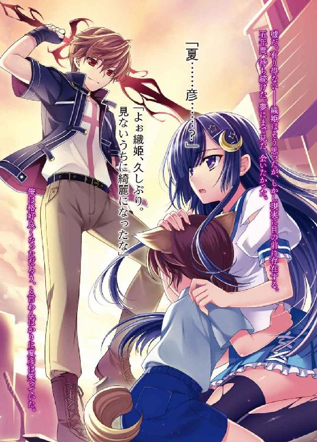
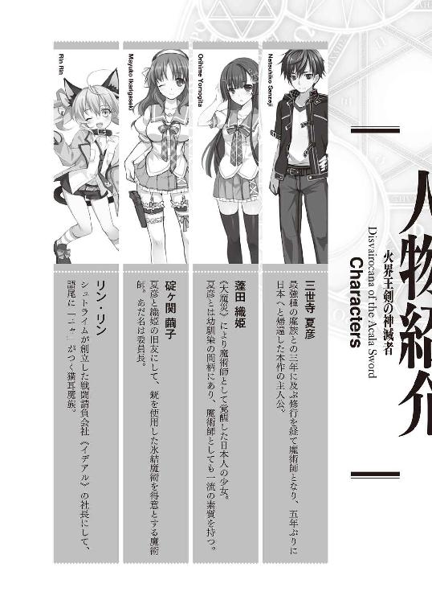
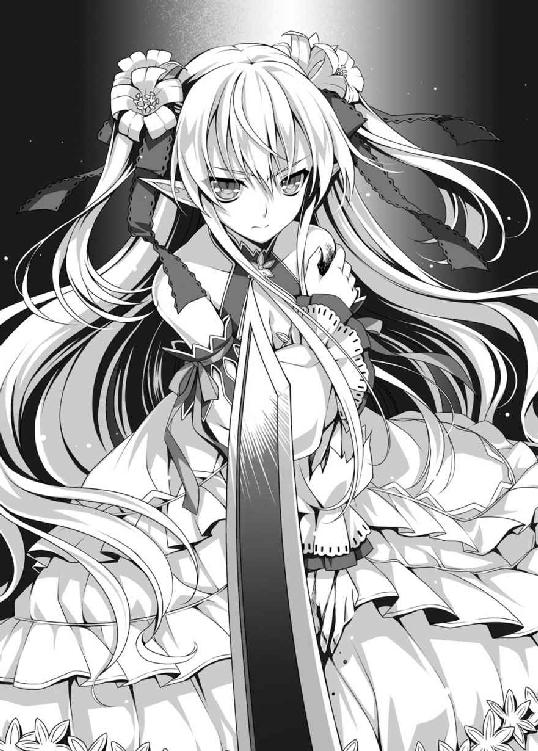

| 火界王剣の神滅者 (HJ文庫) | |
| ツガワトモタカ | |
| (2013) | |




プロローグ
「大丈夫です。別に夏彦がいなくても、私は一人で――」
少女の言葉はいつもと変わらず強気なものだった。
なのに目は真っ赤で、声は震えていて、最後の方はほとんど聞き取れなかった。
それを見て少年は思う。
この子を置いて日本を出るなんて、出来るわけがない。
自分も残らねば。
たとえ力がなくても、自分はこの子を守る。
今までそうしてきた。だから、これからも――
「なに言ってるのよ夏彦！ 貴方と織姫ちゃんは違うのよ。織姫ちゃんはね......魔術師になっちゃったのよ。もう一緒にいられないの。貴方だって分かってるんでしょ！ 普通の人間はもう日本に住めない。すぐに死んじゃうわ。だから、私たちは逃げなきゃいけないのよ！」
滅多に怒らない母親が、凄い剣幕で怒鳴っていた。
それでも少年は譲らない。譲れないのだ。
――普通の人間はもう日本に住めない？
だからこそだ。そんな危険な場所に、少女を一人で残して行くなんて有り得ない。
「俺は残る！ 逃げたいなら、お母さんとお父さんだけで逃げればいいだろ。俺は、このまま日本に残るからなっ！」
少年にとって、それは命を懸けた叫びだった。相手が大人であろうと負けられない。
殴り合いをしてでも残ろうという覚悟を決めていた。
だが父親の拳によって、少年は己の無力を理解する。
たったの一撃殴られただけで吹っ飛ばされ、意識が朦朧とする。横隔膜が迫り上がり、呼吸が苦しい。
少年はそのとき初めて、子供と大人の力がこんなにも違うものなのだと知った。
――大人はこんなにも強いのに、それなのに日本から逃げなければならないのか。
――織姫をそんな日本に一人で置いて行かなければならないのか。
そう思うと、悔しくて悔しくて、涙が出てくる。
これから本当に大変な思いをするのは少女なのだというのに。
「......夏彦。もう、いいです。私は一人でも、大丈夫ですから。だから行ってください」
父親に担ぎ上げられ運ばれる少年に、少女は言い放った。
行け――と。
もう二度と会えないかも知れないのに。
大丈夫――と。
涙をポロポロこぼしながら、俯いて叫んでいた。
泣かせてしまった。
少女が泣いているところを少年は見たことがなかった。
生まれたときから幼馴染みだったのに初めて目にした。
少年はそれだけのことをしてしまったのだ。
たとえ口に出さなくても、少女は「ここに残って」と言っている。
だが、その想いに応える力がない。
少年には、好きな女の子を守ってやる力がない。
「必ず......俺は必ず帰ってくる！ だから織姫、お前はそれまで生き延びろ！」
父親に担がれながら、少年は吼えた。
力の限り、少女の涙を吹き飛ばすように。
すると、俯いていた少女の顔が、少年を見上げる。
涙は止まっていない。肩が震えている。
しかし――
「待ってます」
最後の最後に笑ってくれた。
第一話 魔界列島
ユーラシア大陸の東には日本列島がある。
かつてはここに『日本』という国があった。
今はもうない。
今から五年前の五月、東京駅上空に突如として出現した黒い球体。そこから出現した人ならざる怪物――すなわち魔族によって日本列島は奪われてしまったのである。
人類はこの現象を『大魔災』と呼んだ。
日本はそれまで、歴史上あらゆる侵略に屈さず、その国土を守り続けてきた。
しかし、大魔災だけは別だった。世界中が固唾を飲んだあのビッグイベントを前にしては、経済力とか軍事力とか、まして愛国心など欠片も役に立たない。日本人は故郷を捨て、太平洋上に造られた海上コロニーへ移住するしかなかった。
何せ、日本列島はもはや、魑魅魍魎が跋扈する魔界と化している。人が住める土地ではないのだ。
故に、日本列島に人間が残っていたとしても、それは社会的に人間と認められない。それどころか、魔界と化した日本列島は、人類社会から存在しない空白の土地として扱われている。
存在しない土地だから、渡航することも許されない。
だが、三世寺夏彦はどうしても日本列島に帰りたかった。
海上コロニーの暮らしに不満があるわけではない。
五年前はまっさらだったこの人工の大地も、外国資本によって急速に発展し、かつての新宿を彷彿させる摩天楼も建った。映画館もあるし、遊園地もある。カラオケ、ハンバーガーのチェーン店、コンビニエンスストア、牛丼屋すら生き返った。
海上コロニーはまさしく、資本主義にとって新天地なのだ。
経済的な活気という点において、世界のどんな場所よりも華やかだろう。
それでも、三世寺夏彦は日本列島に帰りたい。
なぜなら、海上コロニーには蓬田織姫がいないのだ。
幼馴染みの織姫。黒い髪の織姫。可愛い顔をしているくせに、やたらと気が強い織姫。
毎日毎日、嫌になるくらい顔をつきあわせていたのに、五年前、悪い冗談のように引き離された。それ以来、会っていない。顔も見ていないし、声も聴いていない。生きているかどうかすら分からない。
大魔災があったあの日、日本に住む約一割の者が魔力に目覚め、魔術師となってしまった。織姫もその一人だった。そして魔術師となった者は人として扱われず、日本列島から出ることを禁じられた。
夏彦は違った。夏彦は魔術師にならなかった。
夏彦と織姫は同じ日に生まれ、同じ学校に通い、同じ町内で遊んでいたのに、五年前に道が分かれてしまったのだ。
――そんな馬鹿な話があってたまるものか。織姫は俺が守るんだぞ。
五年前まで夏彦は、本人の了解も得ないまま、勝手に織姫のナイトを気取り、いじめっ子たちから彼女を守っていた。
神社の娘だったせいか、織姫が写った写真は高確率で心霊写真になり、周囲では怪奇現象が起きていた。小学校の修学旅行の時など、織姫と相部屋になった生徒が全員、金縛りにあった。
それが原因で、織姫はずっと虐められていた。それなのに織姫は一度も夏彦に助けを求めず、一人でいじめっ子と戦おうとした。女の子一人では戦いようもないのに、果敢に立ち向かっていった。
だから夏彦は勝手に織姫に助太刀した。「夏彦の助けなど要らない」と織姫から怒鳴られても、毎回乱入してやった。
「何と言われようと、俺は織姫を助けるぞ。俺は織姫が好きだからな」
こういうことを言うと、織姫は真っ赤になって怒っていたが、その言葉は別にからかっているのではなく、夏彦の本心だった。
ずっと守っていくのだと思っていた。
しかし、それが五年前、強制終了させられた。
今や日本は魔族のものであり、人類社会と魔族は、国家レベルでの相互不干渉条約を結んでいる。そして人類社会は、魔力を持った人間を魔族と同列に扱い、日本列島に閉じ込めてしまった。
よって夏彦は織姫に会えない。
本当は夏彦だって日本に残りたかった。魔力がなくても、逃げ出したくなかった。たとえ周りが化け物だらけという状況でも――いや、だからこそ、織姫のそばにいたかった。
なのに両親の腕力によって強引に乗船させられ、泣いている織姫を残して海上コロニーに来てしまった。
思えば、織姫が泣いているのを見たのは、あれが最初で最後だった。
――だからこそ、ありとあらゆる手段を用いて、日本に帰還しなければならない。
「そう私に啖呵を切って三年。まあ、ギリギリ合格といったところかな？」
夏彦の前に立つ妙齢の女性は、嬉しそうに言った。
彼女の名はシュトライムという。
一見しただけでは、誰の目からも、美しい人間の女性に見えるだろう。が、よく見ると耳が尖り、人とは異なる形をしていた。それに、身に纏っている雰囲気が、人のそれとは明らかに異なっていた。
そう、シュトライムは人間ではない。
魔族の一人――それも最強の種族【瓏玲の焔】だった。
本来、魔族は日本から出られない。ところが、このシュトライムだけは別格なのだ。
世界各地に張り巡らされた魔力感知センサーを誤魔化し、不干渉条約を無視して我が物顔で地球を闊歩している。そんな芸当が可能なのは、おそらく魔族の中でもシュトライムだけだろう。
そのシュトライムの頬には、小さな切り傷が一本走っている。わずかに血が滲んでいた。
夏彦がたった今つけた傷だ。
もっとも、その夏彦はシュトライムよりも更に全身ズタボロで、正直、立っているのもやっとだった。しかし、ここで座り込むのは、夏彦の感覚からしても無礼である。きちんと向かい合って別れを告げたかった。
この女性との修行の日々も、今夜で終わりなのだから。
「三年か......世話になったな師匠」
普段は散々悪態をぶつけていたが、最後となると流石に寂しくなる。夏彦は思わず殊勝な態度になってしまった。
「何。お前にはお前の都合があるように、私にも思惑があって鍛えてやったのだ。それなりに楽しかったしな。まあ、それはそれとして。いいんだな？ お前の魔力を隠匿していた封印は、既に解除してある。あとはこの魔造空間を消してしまえば、センサーに感知され、お前は日本に強制送還される。二度と帰って来れないかも知れんぞ」
「いいに決まってるだろ。そうじゃなきゃ、こんな殺人的な修行を三年も続けられるかよ。何度死にかけたと思ってる」
夏彦は、何を今更、といった風に肩をすくめる。
日本に帰るためなら何だってやる。その決意は五年前から決まっていた。
そして三年前にシュトライムが夏彦の前に現れてから、決意を実行するため、死にもの狂いで努力してきた。
実際、夏彦たちの周りに建つ高層ビル群は、窓ガラスが砕け、壁にヒビが入り、道路のアスファルトは捲り上がり、街路樹が燃え上がっている。
全て、夏彦とシュトライムによる『修行』が原因だった。
「それもそうか。では、向こうに行ったら私の言いつけを守れよ。奴の復活を許すな。あの男が再び現れたら、私でもお手上げだ」
「分かってる。【破戒王の残鉄】のことだろ？」
「そうだ。それがお前を鍛えてやった対価だ。私は私で連中の妨害をするが、正面で派手に動くのはお前の役目となる。あと、これをイデアルの社長に渡せ。紹介状だ」
「......織姫も、そのイデアルって組織にいるんだよな？ 危なくないのか？」
夏彦はシュトライムから封書を受け取りつつ、その懸念を口にした。
「何だ、お前、織姫に関しては本当に心配性だな。いいか、織姫は五年前から魔術師なんだ。並の魔族なら一撃で倒せる実力を持っている。それに、危ないと思ったら夏彦、お前が守ってやればいい。そのために帰るんだろ？」
シュトライムはからかうように言う。
織姫に対する夏彦の恋心など、シュトライムはとうの昔に見抜いていた。そして夏彦もそれを隠そうとせず大っぴらにしている。
別に恥ずかしいことでも何でもない。女を好きになり、そしてそれを守りたいと思う。当然のことだ。
「おちょくったって無駄だぞ。織姫なら顔を真っ赤にするかもしれないけど」
「可愛くない奴だな。まあ確かに、その点、織姫はイジりがいがあった」
夏彦は記憶の中の織姫を思い浮かべる。
勝ち気なくせに恥ずかしがり屋で、力が弱いくせに猪突猛進。
そして絶対に心が折れない女の子だった。
――なのに、あのとき織姫は涙を流していた。
だから、早く帰らねばならない。
「おっと、話が長くなってしまったな。では、さらばだ夏彦。日本の変わりように驚くかもしれんが、そこは織姫とよろしくやってくれ」
「ああ。またな、師匠」
別れの挨拶が終わると、シュトライムはロングスカートを翻して踵を返した。と同時に、その姿が消えてしまう。まるで蜃気楼のようだった。
すると、破壊されていた周囲の建造物が、嘘のように元通りになる。遠くからは車のエンジン音も聞こえ、ビルに明りが灯った。
人の気配で包まれる。
夏彦はシュトライムが作った魔造空間から、現実の海上コロニーへと帰還したのだ。
今頃、海上コロニーのセンサーが、こちらの魔力を感知したはずだ。
まもなく警察か何かがやってきて、夏彦を捕まえるだろう。
その後、すみやかに日本へ強制送還される。
魔術師は魔族同様、日本列島へ閉じ込められる定めになっているのだから。
※
赤く染まる夕暮れの渚市は、喧騒に満ちていた。
住宅の屋根の上に並ぶ人影は、一様に一つの方角を見つめている。どうやら何かを期待しているようだ。
しかし、上空を飛ぶヘリコプターは、危険が迫っているので退避するように呼びかけている。
だというのに、誰も逃げようとしない。まるで御輿を待つ観客だ。
危機感など微塵もなく、むしろ楽しくて楽しくて仕方がないといった様子だった。
人間ならば誰もが持っているであろう安全に対する欲求が、見事に欠落している。その理由は彼らの外見を見れば分かるだろう。
人間ではないのだ。
たとえば頭部。額からツノが生えている者、狐や犬のような耳が生えた者。目が一つの者がいれば、三つの者もいる。昆虫のように複眼になっている者もいた。
下半身が蛇の者。背中から羽が生えた者。皮膚が鱗になっている者。
全く人型からかけ離れているくせに流暢に言葉を話す者。
そう。彼らは五年前、突如として日本に現れ、人の秩序を破壊し、魔の秩序を再構築した者たち――すなわち、魔族である。
「おい、音が近づいてきたぞ！」
魔族の一人が弾んだ声を出す。それにつられて歓声が上がった。
確かに、その魔族が見つめる先から、大きな音と振動が近づいてくる。
巨大な重機で建物を粉砕する音によく似ていた。
「さあ、来るわよ来るわよ」
「ガチの殺し合いとか何週間ぶりだっつーの。見逃してたまるかよ」
夫婦らしき二人組は、そのスライム状の肌を寄り添わせ、仲良く屋根の上から轟音の方角を見ていた。
そして――
彼らの目の前の住宅が弾け飛んだ。十分の一秒で全壊する。ダイナマイトを中で炸裂させてもこうはならない。
木とガラスと屋根と家具が宙を舞う。その破壊の光景に魔族たちのボルテージは上がり、拍手喝采が巻き起こる。
住宅を貫き、向こう側から吹っ飛ばされてきたのは少女だった。
年齢は十代半ば。服装はセーラー服。手には折れた日本刀。黒く長い髪をなびかせ、アスファルトの道路を転がり、ブロック塀に背中をぶつけてようやく止まる。
その少女は、頭からツノを生やしていないし、背中に羽もなければ、足も二本。息を飲むほど整った顔立ちというのを除けば、取り立てて変わった特徴はない。
少女は人間だった。
五年前の五月、日本人が故郷を捨てて逃げていったあのとき、取り残されてしまった哀れな魔術師の一人である。
少女はブロック塀が砕けるほど背中を打ったにもかかわらず即座に立ち上がり、自分が飛んできた方向を見据えた。
そこには原形をとどめず崩壊した家屋と、崩壊させた張本人の姿があった。
「まったく......大人しく捕まっていればいいのに、無駄に抵抗して私を怒らせるなんて、いい度胸ですね。万死に値します。情状酌量の余地はありません。泣いて命乞いをしながら死んでください」
少女はボロボロの姿なのに少しも臆さず、むしろ自分こそが優勢なのだと言わんばかりに淡々と語った。
手にした刀は折れていた。その上、対する相手が身の丈三メートルを超える巨人だというのに、微塵も怯まない。
もっとも、彼女にとって相手が何者かなど、関係のない話であろう。敵が自分より大きいのは、いつものこと。幼いときから、幾度も立ち向かってきたのだから。
その相手が、いじめっ子から魔族に変わっただけ。
蓬田織姫――それが彼女の名だ。
織姫は口の中にたまった血を吐き捨て、唇を手で拭いながら、正面の敵と睨み合った。
相手は自分の倍も大きい。パワーの差も歴然としている。
第一、港からここまで、建物を破壊しながら文字通り一直線に突き進んできた時点で尋常ではない。ダンプカーはおろか、戦車すら比べものにならないほどの突進力だろう。
相手の正体は分かっている。魔界政府によって指名手配されているＡ級犯罪魔族、ダヴァーセルだ。
罪状は、違法薬物の使用と密売。器物破損と傷害。および海外への逃走未遂。
更に最優先回収対象物――通称【破戒王の残鉄】の所持も疑われている。
ダヴァーセルは二時間前、渚市の港から貨物船に忍び込み、密航しようとしていたところを発見された。即座に魔界警察の骸骨兵隊三百体によって港は包囲されたが、その半数が破壊され包囲網は瓦解。
イデアルに出動要請が出され、すぐに急行したが、織姫以外のメンバーは負傷し離脱。
その後、織姫が一人で戦闘を続けていたが、いよいよ住宅地のど真ん中まで来てしまった。
――ここは、夏彦が住んでいた家の近くですね。
ふと、五年前に生き別れた幼馴染みの顔を思い出す。
彼が住んでいた家は、すでに魔族が住み着いている。織姫がたまに通りかかっても、その玄関から懐かしい顔が出てくることはない。
――彼は元気でやっているのでしょうか。
そんな思いにふける暇も与えてくれず、ダヴァーセルは手にした剣を振り上げ、攻撃の意思を示した。
歪な剣だった。もともと美しかった剣が、一度壊れて不完全に修復された。そんな印象を受ける。半裸な上、筋肉隆々で無骨なダヴァーセルに似合っていた。
しかし、この剣は見かけよりずっと強い。ここまで建物を潰してきたのに刃こぼれ一つなし。それに何より、風圧では説明がつかない衝撃波が斬撃と共に巻き起こるのだ。
「ヴァァァァアッ！」
ダヴァーセルは意味不明な咆哮を上げ、織姫目がけて剣を落とす。
まともに喰らえば、織姫の体など縦に裂けてしまう。かといってギリギリで躱しても、謎の衝撃波に襲われるだけだ。
織姫は『折れた刀』への魔力供給を停止し、『折れたヘアピン』へと戻した。まだ頭には二本のヘアピンが残っているが、これを刀に変えて戦っても、結果は見えている。ダヴァーセルの剣には太刀打ち不可能だろう。
それでも織姫は逃げない。逃げるのは流儀ではない。
今までそうしてきたように、これからもそうするように、真正面から立ち向かう。
――少々、魔力消費がキツいですが。
手にした刀が通じないなら、より強い刀を呼び出せばいいだけのこと。
「斑鳩流分派人用傀儡闘法、剣ノ型――黒姫撫子」
バンッ、と弾ける音と共に、織姫の前に新たな影が生まれた。
それは織姫と同じような背格好だった。黒装束に緋袴の服装は、黒巫女と呼称したくなる。しかし、白磁器のような質感の仮面をつけているせいで、生きているように感じられない。まして、幽霊のように足がないとすれば尚更だ。
それもそのはず。これは人形なのだ。
どこからか現れたのではなく、今ここで織姫の魔力によって形作られた、無意志の傀儡。
斬られても砕けても、織姫の魔力が続く限り再臨する可憐なマリオネット。
かつて、織姫の師だった女性によって『黒姫撫子』と名付けられたその傀儡は、右手に持った太刀でダヴァーセルの剣を真っ向から受け止めた。
ヘアピンを変化させた刀とは違い、その太刀は折れない。
鉄と鉄がぶつかり火花が散る。
受け止めたが故に、ダヴァーセルの剣は織姫にも黒姫撫子にも当たらない。
が、やはり衝撃波が広がった。
周囲一体のアスファルトにヒビを入れ、電柱を揺らし、ガラスを砕く。
屋根の上から観戦していた魔族の何人かは、衝撃に耐えきれず転がり落ちてしまったようだ。
もっとも、衝撃波を一番近くで受けたのは、織姫とダヴァーセルである。
織姫は黒姫撫子が盾になってくれたので、何とか転ばずに済んだ。そしてダヴァーセルもまた、その巨体のおかげで平然としている。
よって今の一撃は、打ち合いの序幕に過ぎない。間髪容れずに二撃目、三撃目が放たれ血飛沫を散らす。
地面に模様を作る血は、全て織姫のものだ。
ダヴァーセルの剣は、斬撃でありながら、線ではなく面の攻撃。直撃しなくとも、徐々に織姫の体を傷つけていく。
それでも引かない――といくら強く想っても、事実として黒姫撫子は圧されている。
織姫は己が作った傀儡に魔力供給するため、十メートル以上離れることが出来ない。故に、至近距離から衝撃波を喰らい続けなければならなかった。
「おい、あの子、殺されるぞ」
「俺はアンタに十万円賭けたんだぞ、そっから逆転しろよぉ！」
平魔族どもが無責任なヤジを飛ばしてくる。
言われなくとも、織姫は死ぬつもりなどない。
足を止め一方的に攻め立てられているのは、打つ手がないからではなく、次の一手のためなのだから。
刹那、黒姫撫子の太刀が、ダヴァーセルの剣を弾いた。衝撃波もそれに合わせて方向が変わり、離れた民家を粉砕する。
「うぉっ!?」
屋根の上から悲鳴と歓声が上がった。
観戦している連中にも死ぬ可能性があるというのに、一向に逃げる気配がない。流石は魔族といったところだろうか。彼らは争いを好み、賭けを好み、祭りを好む。そのためなら自分の命が消えてもいいとさえ思っている。
だから織姫は、彼らを助けようとすら思わなかった。死にたくなければ逃げればいいだけの話。
「ヴァぁぁァァア――」
ダヴァーセルは剣を弾かれたのが気にくわないのか、低い唸り声を上げ、織姫を見下ろしていた。
「所詮は、筋肉しか能のない三流ですね。私が何をやったか理解できないのですか？」
織姫は不敵に笑い、黒姫撫子に太刀を握り直させた。
実際、織姫が急に強くなったわけではない。力も速さも変わっていない。むしろ疲労して低下しているくらいだ。
それでも弾けたのは、剣筋を読み切ったから。
防戦一方に見えた先程の斬り合いの最中、織姫はほとんど瞬きもせず、血が目に入るのも気にせず、ひたすらダヴァーセルの動きだけを凝視し続けた。
結果、全てが見える。
呼吸や筋肉の動きから、次にどんな攻撃が来るのか、手に取るように分かるのだ。
「もう貴方の剣は通用しません。如何に威力があろうとも、タイミングを合わせて逸らしてやれば、ほら、この通り。あまり蓬田織姫を舐めないでください」
しかし、ダヴァーセルは諦めなかった。剣を両手で握りしめ振り下ろす。往生際が悪いのか、もしくは違法薬物の過剰摂取で、まともな判断力を失っているのか。
「――黒姫撫子！」
織姫の掛け声と共に、銀色の太刀がきらめく。
狙うは敵の剣ではなく、その手首。
一閃がダヴァーセルの骨と肉を切り裂く。彼の手がダラリと垂れ下がった。皮膚一枚で辛うじて繋がっているだけで、とても剣を握れる状態ではない。
――勝負あった。
と、織姫が思ったのも束の間、悪い冗談のようにダヴァーセルは『再生』した。
「......なっ！」
織姫は反射的に飛び退いた。その一瞬後、元いた場所を剣が通過し、アスファルトが捲れ上がる。
衝撃波を叩きつけられ、織姫は大きく吹き飛ばされてしまった。
空中で半回転し姿勢を直し、髪からヘアピンを抜いて刀に変え、民家の二階の壁に突き刺し着地する。
今の攻撃で、織姫にダメージらしいダメージはない。
しかし、虚を衝かれたのは確かだ。まさか、こうも高速で再生するとは思わなかった。そういう種族なのか、魔術なのか、薬のおかげか、本当に【破戒王の残鉄】を持っているからなのか。あるいは、それら全ての複合効果なのか。
とにかく、ダヴァーセルを倒すには、一撃で致命傷を与えるしかない。狙うなら頭だろう。
そんな冷静な分析をしつつも、織姫の脳裏ではもう一本、別の思考回路が走っていた。
――逃げてしまった。
恐怖のあまり、一瞬、五年前に生き別れた男子の顔が浮かんでしまった。もう彼には頼らないと決めたのに。イメージしてしまった自分を許しがたい。
八つ当たりのため、敵を切り刻む。そう決めた矢先――
睨み合っていたダヴァーセルが織姫から目をそらした。
「？」
不審に思い、その視線を辿ると、子供がいた。
犬のような耳と尻尾を生やした、異形の姿。魔族である。しかし魔族だろうが、子供は子供だった。
泣いていた。「お母さん」と叫んでいる。親とはぐれてしまったのだろう。
織姫は唇を噛み締めた。
――だから、さっきからヘリが避難を呼びかけていたでしょう！ 子供でもその意味くらい分かるはずです。こんな快楽破壊者の前に出たら、どうなるか想像してください。自業自得です......っ！
心の中で毒づく。
案の定、ダヴァーセルは織姫を無視して、子供に向かった。
唸り声を上げ、地面を揺らしながら巨体を走らせ、か弱い標的を肉片にするため剣を振り上げた。
瞬間、ダヴァーセルの背中に、斬りかかってくださいと言わんばかりの隙が広がる。
織姫にとって好機だった。今なら反撃されることを気にせず攻撃できる。
――でも、一撃で倒せるでしょうか？
即死させることが出来なくても、織姫が優勢になるのは変わらない。もっとも、それでは子供が殺されてしまう。
そう思い至ったとき、織姫は足下の壁を蹴り、一直線に飛んでいた。
ダヴァーセルを追い越し、着地したのは子供の眼前。それを抱きしめてうずくまり、背後から迫るダヴァーセルの声を聞く。
何て馬鹿な選択をしてしまったのだろうと後悔したが、もう遅い。こうなった以上、自分と子供の両方を助けるしかなかった。
しかし、黒姫撫子で受け止めた場合、自分はともかく、子供は衝撃波で死んでしまう。
ならば別の手を繰り出すまでだ。
「斑鳩流分派人用傀儡闘法、盾ノ型――日傘案山子」
黒姫撫子が消え、代わりに現れたのは、骨組みだけで出来た細い傀儡。まさしくカカシであり、戦闘力があるようには見えない。ところが、このカカシが持つ傘は、斬撃だろうが弾丸だろうが爆風だろうが、あらゆる性質の攻撃を反射する特性を持っていた。
もっとも、あらゆる『性質』に対応していようとも、圧倒的な『力』で突き破られてしまうこともある。
「ヴルァァぁァあッ！」
案の定、ダヴァーセルの剣が、日傘案山子を木っ端微塵に打ち砕いた。
「――っ」
新しく傀儡を作り直す時間はなく、逃げる余裕もない。もはや死ぬしかない状況。
子供を力強く抱きしめながら、織姫は剣に背を向け目を瞑った。
こんな絶体絶命の危機に陥ったのは久しぶりだ。少なくとも大魔災以降の五年間、ここまで追い詰められたことはなかった。
では、それ以前は――そのときは、いつも助けに来てくれる人がいた。
頼んでもいないのに乱入して、織姫に手を差し伸べ、安全な場所まで連れて行ってくれた男の子。
――駄目です、ここに彼はいません。だから私は一人でも生きていけるよう強くなったのに......なのに、ここで助けを求めたら......私の五年は何だったのですか！
それは意味のない葛藤だった。
助けを求めようが求めまいが、いない者は現れない。
なのに、織姫の口から、知らず知らずのうちに、声が漏れていた。
「夏彦......っ！」
刹那、金属音が鳴り響く。
耳が痛いほどの高音だった。それはダヴァーセルの一撃の威力を物語っていた。
では、どうして自分はまだ生きているのだろう。
守ってくれる者などいないはずなのに。一体、どうして金属音など鳴ったのか。
――自分と敵の間に、何かがいる？
織姫は恐る恐る目を開け、振り返った。
そして、そこには信じがたい光景が広がっていた。
沈む太陽を逆光にして、一人の少年がこちらを見下ろしていたのだ。
右手に魔力で形成した黒い剣を持ち、背中に回してダヴァーセルの剣を受け止めている。
二重の意味で有り得ない。
まず、あの重いダヴァーセルの一撃を、こんな無理な姿勢で受け止めるというのが有り得ない。
そして、この男がここにいるのが有り得ない。彼は海上コロニーにいってしまったはずなのだ。
「よぉ織姫、久しぶり。見ないうちに綺麗になったな」
俺は格好良くなっただろう、と言わんばかりに『彼』は笑っていた。
見間違うはずもない。五年経ち背が伸びても、彼は彼のままだった。
「夏......彦......？」
いるわけがない。
「んだよ、ボーとしやがって。『助けてくれてありがとう』とか、『夏彦に会えてうれしい』とか、なんかねーのかよ」
嘘だ。有り得ない――織姫はそう思ったが、しかし現実に目の前に存在する。
五年間、待ち続けた。夢にまで見た。会いたかった。それなのに、いざこうして顔を合わせると、何を言っていいのか分からない。
あまりにも突然すぎて、頭が追いつかないのだ。
「なっ、馬鹿ですか、貴方は！ 誰も助けてなんて頼んでいないでしょう！」
だから、飛び出したのはそんな悪態だった。
言いたかったのはこんなことではなく、もっと別の何かだ。が、何を言うべきだったのか、分からなくなってしまった。
それに、敵は待ってくれない。
「――夏彦、後ろッ！」
こちらにとって五年ぶりの再会だろうと、そんな事情はダヴァーセルには関係ない。相手がおしゃべりに夢中になっているのなら、それを叩くのが当然だ。
真横から大振りの斬撃が、夏彦に迫る。
しかし夏彦は、ダヴァーセルに背を向けているというのに、易々とそれを受け止めた。
間違いなく夏彦は、ダヴァーセルを遥かに凌駕していた。
「おい、クソ魔族。人が幼馴染みと念願の再会を果たしてるんだぞ......邪魔してんじゃねーよ」
剣を受け止めただけでも驚きなのに、夏彦はそのまま力任せに押し返し、ダヴァーセルの腹に強烈な蹴りを放った。
「グギャァァ！」
メキメキと骨が砕ける音をたて、ダヴァーセルは塀に頭から突っ込み、噴煙を上げて動かなくなる。
「何だアイツ。腹筋かてぇな」
夏彦はダヴァーセルが飛んでいった先を眺めながら、面白そうに呟いた。
そこでハッとした織姫は、自分が抱いていた魔族の子供の目を見つめ、逃げるように指示する。
「今のうちに逃げてください。一人で行けますね？」
子供はコクリと頷く。
「よし、強い子ですね、君は」
織姫が微笑み、軽く背中を叩いてやると、それが合図になって子供は一目散に走っていった。これで巻き込まれる心配はないだろう。
それを見届けた織姫はホッと息を吐き、自分も立ち上がって夏彦の隣に並ぶ。
「夏彦。ダヴァーセルは......あの魔族はまだ生きています。並大抵のことでは死なないはずです」
「知っている。一部始終は見ていた。織姫に手首を切られても、一瞬で再生しやがったからな。だが、ボコりまくれば、そのうち気絶するんじゃないか？」
夏彦は当然のことだと言わんばかりに答える。
「気絶？ それより、首を切り落とした方が確実......って、見ていたとはどういうことですか。夏彦、貴方、私のピンチを楽しんでいたのですかっ？」
「別に楽しんでたわけじゃねーよ。ただ、一番格好いい登場のタイミングをだな......」
「似たようなものでしょう！ だいたい遅すぎます、貴方は！」
「何だよ、間に合ったんだからいいだろ。つーか、俺の助けなんかいらないとか言ってなかったか？」
夏彦はこちらの気も知らないで、頭をポリポリかきながら怪訝そうにした。
確かに織姫は、夏彦に助けなど求めていない。
しかし、それとこれとは話が違う。
夏彦は五年前、必ず帰ってくると言っていたのだ。『助ける』とか『守る』とか、織姫はそんなことを微塵も望んでおらず、ただそばにいてくれさえすれば良かったのだ。
――ああ、だから。日本に帰ってきたのなら、タイミングなど計らず、すぐに来てください、馬鹿。
「......五年も、待ったんですよ！」
ついつい声が大きくなってしまう。
すると夏彦は、ようやくバツが悪そうな顔になった。
「ああ......いや、悪りぃ......折角だから劇的な再会にしたかったんだが。確かにズルかったな。俺からは織姫が見えていたのに、織姫から俺は見えなかったんだもんな」
「そうです、この唐変木。どんな神経してたら私を五年も放置できるのですか」
「だから悪かったって。それにしても、織姫がそんなに俺に会いたがっていたなんて、嬉しいな。抱きしめてぇ」
「むぅ......あんな別れ方をしたんですから、普通、再会を望むでしょう......」
織姫は赤面しつつ、夏彦の言葉を否定しなかった。
何せ、本当に会いたかったのだ。周囲の目さえなければ、織姫の方から抱きついたっていいくらいだった。
――あれ？ 周囲の目......？
それに思い至った織姫は「あっ！」と声を上げ、家々の上から観戦している魔族どもを見回した。彼らは、織姫と夏彦を生温かい目で見守っていた。どこからともなく、ピューと口笛が聞こえてきた。
「ひゃぁあっ！」
織姫は慌てて夏彦から離れる。
「んだよ......抱きしめさせろよ。五年待ったんだぞ！ いや、ほんと我慢できねぇ。お前、可愛くなりすぎだわ」
「ふ、ふざけないでください！ 私は夏彦のことなんて、アリの触覚ほどにも思っていませんでした！ 何が抱きしめたいですか、自意識過剰です、あっちに行ってください！」
「おい照れるなよ。昔から変わらねーな、そういうところ。まあ、それが織姫の可愛いところでもあるわけだが――」
そのとき、夏彦の言葉を遮るように、地響きが上がった。
織姫と夏彦はダヴァーセルへ向き直る。
やはり、生きている。瓦礫を押しのけて立ち上がったその体は、完全に無傷だった。
「くっ......」
織姫は黒姫撫子を出すため、魔力を練り上げた。
が、それより早く、夏彦の術が発動する。
「斑鳩流本家魂燃式魔闘術、型ノ弐――舞羽時雨」
黒い線が宙を走った。それは夏彦の右手から伸びる鞭だった。
目で追うのもやっとな速度でダヴァーセルに伸びた鞭は、無造作にその皮膚を貫いた。そして、夏彦が手首をかえすと鞭も蛇行し、体内から食い破って外に飛び出す。更にもう一度潜って、また飛び出す。
外と内から交互に削るという、残虐極まる攻撃だった。あれでは痛みで何も出来ないだろう。
しかし、ダヴァーセルは止まらなかった。こちらへ向かって真っ直ぐ歩いてくる。
「型ノ弐・追――鍼鼠」
夏彦が放った鞭は、今度は無数の針となり、ダヴァーセルの体内から突き破って飛び出した。流石のダヴァーセルも、悲鳴を上げながら倒れ込む。
だが、まだ動く。動く度に針で皮膚が裂けるというのに、ジワリジワリと這い寄ってくる。
「型ノ弐・滅――炎獄」
夏彦は指を鳴らした。その途端、針が一斉に着火した。
天高く火柱が昇る。
肉が焦げる匂いが立ちこめ、そして耳障りな悲鳴が響く。
夕日よりも赤い炎が熱風を撒き散らし、離れて立っている織姫の皮膚にもチリチリと伝わってきた。
そして炎が消えたあとには、炭化したダヴァーセルが横たわり、暖められた初夏の大気が陽炎を生みだしていた。
夏彦がダヴァーセルをいたぶっている間、織姫は見とれて何も出来なかった。
何とも驚くべき魔力量だった。それに技を出すのも早く、正確だ。
織姫は魔術師としては最高レベルの魔力を持っているし、ダヴァーセルはＡ級犯罪魔族に指定されるほどの危険存在だ。しかし夏彦の戦闘力は、更に段違いだった。
「......気絶させる、と言っていた割に容赦ないのですね、夏彦」
織姫は数々の疑問を飲み込んだまま、五年ぶりに再会した幼馴染みの顔を見た。
すると、夏彦も織姫を見つめ、ニッと笑いかけてきた。
五年分大人びていても、その表情は昔と同じだった。
――夢？
そう思わずにはいられない。
「だって、余裕こいて手加減して、その隙にこっちがやられたりしたら、それはもうギャグだろ？ そもそもアイツは織姫に手を上げた。だったら俺が遠慮する理由はどこにもない。つーか、アイツまだ生きてるぞ？」
「え？」
織姫は驚き、ダヴァーセルに視線を戻す。
動き出す気配はなかった。だが、夏彦の言葉通り、生きている。炭化した肉が剥がれ落ちて、その下から再生した新しい組織が浮かび上がっていた。
「呆れた。何という再生力ですか」
「トカゲの親戚なんじゃねーの。ところで......もしかして『あれ』か？」
夏彦はダヴァーセルを見ながらそんなことを呟き、歩み寄っていく。
「な、夏彦！ 不用意に近づかないでください。まだ生きていると言ったのは貴方ですよ！」
「平気だよ。流石に動けるまで再生するには時間がかかるだろうし、ぶっちゃけ俺の方が強い。見てただろ、俺の勇姿を」
「ま、まあ......そうですけど......」
実際、惚れ惚れするほど格好良かった――と考えたところで、織姫は首をブンブン振って自分の感情を押しとどめる。
ダヴァーセルと戦っていたのは織姫なのだ。そこに乱入されたということは、邪魔をされたということだ。怒りこそしても、喜ぶなど有り得ない。
「いいですか、夏彦。貴方が帰ってきてくれたのは......少し喜んであげてもいいですが、私の戦いの邪魔をしないでください。私はもう、一人でも戦えます！」
会えたのは嬉しい。だが、乱入されたのは気にくわない。それは照れ隠しでも何でもなく、織姫の正直な気持ちだった。
ところが夏彦は織姫の話を聞いておらず、しゃがみこんでダヴァーセルの体から小さな金属片をつまみ上げていた。
「あ、待ってください、夏彦！」
織姫はその金属片を見て、慌てて叫ぶ。
赤い太陽光を反射して輝くソレを、以前、資料で見たことがある。
残鉄――魔族の最強種族【瓏玲の焔】から生まれる、魂の結晶体だ。
瓏玲の焔。もしくはたんに焔とだけ呼ばれる彼らは、魂の強度が高い故、死後に残鉄を残すのだ。
しかし、ダヴァーセルは焔ではない。にもかかわらず残鉄を持っているということは、やはり事前の情報通り【破戒王の残鉄】である可能性が高い。
「それを放してくださいっ！」
織姫は叫んだが、間に合わなかった。
次の瞬間、残鉄から眩い光が放たれ――夏彦の手から残鉄は消えてしまった。
「な、夏彦の馬鹿ッ！ それが何だか分かっているのですかっ！」
突然の出来事に、織姫は思わず大声を出してしまう。
「知ってるよ。残鉄だろ？」
「む、ぅ......」
思いのほか冷静な夏彦の言動に、織姫はたじろいだ。
しかし、普通の残鉄ならここまで騒いだりはしない。
「いいですか夏彦、いま貴方が吸い込んだのは、破戒......」
と言いかけて、織姫は慌てて口をつぐむ。
周りには、いまだ観戦している魔族が大勢いた。ここで【破戒王の残鉄】を口にするのは得策ではない。そもそも夏彦が吸収した残鉄が、真に破戒王のものなのか、まだハッキリしていないのだ。憶測であらぬ噂を広げても、いいことなど何もない。
「夏彦、私に着いてきてください！」
織姫は彼の手を取り、強引に引っ張った。
「え、でも、こいつどうすんだよ？」
夏彦は煙を上げるダヴァーセルを指差した。
「放っておきます。無力化した段階でイデアルの役目は完了しました。あとは魔界警察がやってくれます。それより、貴方には話したいことがあるし聞きたいこともあります」
「......まあ、そうだな。俺も織姫とは話がしたい」
夏彦が真剣な声でそんなことを言うものだから、織姫の心臓がドクンと高鳴った。
「織姫、どうしてニヤけてるんだ？」
「私はニヤけていません！ それは貴方でしょうッ！」
織姫は誤魔化すためにあらん限りの大声で叫び、大股で夏彦の先を歩く。
「待てよ織姫。怒らなくてもいいだろ、会えて嬉しいのは俺も一緒なんだからさ」
「知りません、いいから黙って着いてきてください唐変木！」
自分でも、どうしてここまで腹が立つのか分からなかったが、とにかく織姫は頭から湯気を上げて歩いていた。
その途中、走ってきた魔界警察の骸骨兵隊とすれ違う。彼らによってダヴァーセルは処理されるはずだ。あの場で殺害するのか、それとも拘束して連れて行くのかは知らない。
しかし、織姫の仕事はもう終わった。
今重要なのは、帰ってきた夏彦と五年分の親睦を図ること――
「って、そうじゃありません！」
「織姫。急に叫んだりしてどうした？」
※
ダヴァーセルが骸骨兵隊によって、連行用棺桶に封印されている現場から五百メートル。
電柱の上に、銀髪の少女が一人で立っていた。
まるで絵画から飛び出してきたような整った容姿にもかかわらず、その目は不機嫌そうに半開きになっている。かといって怒りに震えているわけでもなく、あくまで静かに睨んでいた。
実のところ、彼女はいつもこんな表情だった。何か不満があるのではなく、自然体でこれなのだ。
だが、そんな無愛想な印象も、彼女の美しさを曇らせる要因にはならなかった。
初夏の中、幾重にも折り重なった複雑な衣服を身につけていながら、少しも汗を流していない。ライトグリーンの瞳や、銀髪を彩る百合のコサージュが妙に幻想的で、妖精じみた雰囲気すらある。
その瞳は、ダヴァーセルを倒して立ち去っていく少年に向けられていた。
「人間如き......」
少女は吐き捨てる。表情こそ変えなかったが、今度は本当に怒気が込められていた。
※
夏彦は懐かしの生まれ故郷、渚市を歩く。
五年経っても変わらないところもあれば、知らないビルが建っている場所もある。しかし、それでも夏彦が思っていたより、ずっと原形をとどめていた。
だが、住民は変わってしまった。
すれ違うのは、ほとんど魔族。人間は十人に一人の割合だ。もっとも、人間が虐げられている様子もなく、堂々と道の真ん中を歩いている。
それは夏彦の前を歩く織姫も同じ。
夏彦は五年ぶりに見る幼馴染みの後ろ姿に見とれていた。
蓬田織姫。
白い肌に黒い髪。凜とした顔立ちは、この五年でより一層美人になった。
身長は一五五センチといったところ。夏彦より二〇センチほど低い。全体的にほっそりとしており、そしてセーラー服が恐ろしいほど似合っていた。
あの魔族と戦っていたせいか、汗ばんでいて、髪や布が肌に張り付いている。
それにしても、何と綺麗な髪だろうか。腰まで伸びているのに少しも癖毛がない。触れば絹のような手触りだろう。
――触りたい。
そう思ったとき、すでに夏彦の腕は無意識の内に伸び、髪に触れていた。
「きゃっ......夏彦！ 急に髪の毛をいじらないでください、びっくりするじゃないですか！」
織姫はビクンと肩を震わせ、後頭部を押さえて振り返った。
「あ、悪りぃ。あんまり綺麗だったから、つい」
夏彦は悪びれずに謝る。
「むぅ......そこまで触りたいのなら、別に触らせてあげてもいいですが......外でするようなことではないでしょう。第一、今は私の髪の話などしている場合じゃありません！」
プイッと顔をそらし、織姫は再び歩き出す。
だが、今度は前ではなく、夏彦の真横に来てくれた。そのことがとても嬉しい。
「それで夏彦、いつ帰ってきたのですか？ いえ、どうやって帰ってきたのです」
夏彦が喜んでいると、それに水を差すような鋭い声色で質問が飛んできた。
見れば、織姫の顔は真剣そのもの。魔族と戦っていたときと同じ表情になっていた。
「なるほど、俺が密入国してきたんじゃないかと、そういう疑惑か？」
「あ、いえ、そうではなくて......このご時世、日本に入ることも出ることも至難の業ですから......普通、帰って来れないでしょう？ どんな方法を使ったのですか？」
「それは勿論、織姫に対する愛によって」
「真面目に答えてください馬鹿！」
織姫はムッと唇をとがらせ、上目遣いで睨んできた。
「だから怒るなって。いいじゃねーか、久しぶりなんだから。ふざけたくもなる。で......帰ってきた方法だが、あれだ。強制送還だよ。俺はあっちで魔術師になったから、無理矢理送られてきたんだ」
「あ、そうか......そうですね......」
織姫は目を伏せ、バツが悪そうな顔になった。
「日本にいると、つい忘れてしまいます。ですが世界にとって、いまだ魔術師は異端なのですね。無理矢理送られてきた......じゃあ夏彦は、望まず家族と離ればなれに......」
「いいや望んで来た」
「――え？」
勝手に同情する織姫の言葉を遮り、夏彦はハッキリと言ってやった。
「俺は望んで魔術師になり、望んで捕まり、望んで送還された。約束しただろう、帰ってくるって」
目を見据えて、真摯に、ひたむきに。嘘偽りなく伝えてやった。
「あ、ぅ......」
織姫は目を丸くし、顔を真っ赤にし、口をモゴモゴと動かしてから、クルリと背を向けた。
「と、当然です！ 帰ってくると約束したのですから......まあ、努力は認めてあげましょう。もう少し早く帰ってくるべきだったとは思いますが！」
「おう。織姫も俺に早く会いたかったのか。嬉しいことを言ってくれるぜ」
「ち、が――ッ！ 今のはそういう意味ではなく......えぇぇいっ！ そうです、私だって会いたかったのです、何か文句ありますか、この唐変木！」
背中を向けたままワナワナと震え、幼馴染みの少女は叫ぶ。
そんな織姫の姿を見て、夏彦は呼吸困難になりそうなほど興奮した。
これだけでも帰ってきた意味があった。シュトライムとの修行は辛かったが、この時点で報われた。お釣りが来る。
織姫が五年間、夏彦のことを忘れずに待っていてくれたというこの事実。それだけで夏彦は幸せだった。
「文句なんかあるわけないだろ」
「......そうですか......しかし、私が夏彦に会いたかったと言っても、それは『知り合いに久しぶりに会いたいなぁ』程度で、毎日毎日、貴方のことを想っていたとか、そういう話ではありませんからっ！」
向き直った織姫は、再びツンツンし始めた。そんな姿も懐かしい。
夏彦は腕を組み、うんうんと頷いた。
「ぅ......ところで夏彦。貴方、どうやって魔術を覚えたのですか。斑鳩流と言っていましたが......まさか、シュトライムさんに教わったのでは......？」
織姫はどこか脅えたように聞いてきた。
「師匠は織姫のこと知ってたから、そのシュトライムだと思うぞ」
答えてやると、織姫の顔から血の気が引いた。
「......海上コロニーに......いたのですか？」
「当たり前だろ。俺が海上コロニーに住んでいたんだから、必然的にシュトライム師匠も海上コロニーにいたということになる」
「うわぁ......あの人、いなくなったと思ったら、やっぱり国外に......いけません、魔界政府にバレたらイデアルの存続そのものが......あぅあぅ」
織姫は頭を抱え、青くなりながらフラフラと歩く。
何せ、魔族や魔術師は、日本列島から出てはいけないのだ。これは人類と魔界で交わされた協定である。
日本列島を魔族に差し出す代わりに、魔族は世界に手を出さないという不干渉条約。
これがあるから魔族と人類が同じ地球上に共存できている。シュトライムがやったことは、それに明確に違反していた。
「ま、いいじゃんか。師匠が来てくれなかったら、俺がこうして帰ってくることもなかったんだし」
「そ、そうですね......そうやって前向きに考えないと、シュトライムさんの行動に耐えられません......」
織姫は全身でため息を吐き、がっくりと肩を落とす。
夏彦とて、シュトライムとは三年過ごしたのだから、織姫の気持ちがよく分かる。あのイカれた魔族は、常に想像の斜め上を飛び越えることしかやらない。
しかし、気の強い織姫がこうまでグッタリしているのが面白くて、同情するより、笑いを堪えるのが大変だった。
「ところで、イデアルって何なんだ？ 師匠は日本についたらイデアルに身を寄せろって言っていたんだが。織姫もそこに所属してるんだろ」
「いま向かっているのがイデアルの本部です。シュトライムさんが行けと言っていたのなら話は早いですね。どこまで聞いていますか？」
「ん？ 師匠は仲良しクラブとか言っていたが」
「まったく話が早くない......いいです、詳しいことは向こうで説明します」
そこから二人で歩きつつ、とりとめもない雑談に花を咲かせた。最近、何を食べたとか、外で作られているマンガやゲームが日本にしっかり密輸されているとか、三丁目でラーメン屋をやっていたオヤジは海上コロニーでもしつこくラーメン屋を開いているとか、その息子が三丁目の店を守り続けているとか。
メンドウな話題は後回しにして、楽しいことだけを語った。
そして、いつの間にか織姫は、照れずに笑うようになっていた。
昔と同じだ。
始めのうちは『夏彦と話すことなんて何もありません！』という反応なのに、盛り上がってくると素の表情になってしまうのだ。
かつてはそれをからかったりしたものだが、今日はこのまま、もう暫く織姫の笑顔を見ていたい気分だった。
「――夏彦、ここですよ」
織姫は不意に、人通りのない路地裏で立ち止まった。
「ここ......？」
人が二人並ぶとふさがってしまうほど狭い道路だ。こんな辺鄙な場所が渚市にあったのかと、夏彦は感心してしまった。あるいは大魔災後に作られたのかも知れないが、いずれにしても組織の本部がありそうには見えない。野良猫の縄張りになっていたり、鼻水を垂らした子供が走り回っていそうな雰囲気だ。昭和の匂いすら漂っている。
「どうしました、変な顔をして？」
「いや、だってよぉ......」
織姫は四階建ての雑居ビルの入り口で夏彦を待っていた。そこの一階部分には『リンニャオ』という喫茶店の看板が立っているが、同時に休業日の札も出ていた。
「確かに、ここは喫茶店にしか見えません。ですが、それは世を忍ぶ仮の姿。いいから入ってください。魔界では、もう外の常識は通用しませんよ」
ためらう夏彦を尻目に、織姫は喫茶店の中に入ってしまった。仕方なく、夏彦もそれを追いかける。
中は全体的にチョコレート色の、モダンな内装だった。だが、店員も客もおらず、人の出入りがありそうな気配はない。
「夏彦、こっちです」
織姫はエレベーターに乗り込み待っていた。
こんなボロいビルに地下はないだろうから、イデアルの本部とやらがあるとすれば、上の階だろう。しかし、どうにもキナ臭い。エレベーターに窓がないというのも圧迫感があり、人目に隠れて悪いことをしているような気分になってしまう。
「壺とか売りつけられたりしないよな？」
「何を馬鹿なこと言ってるんですか」
織姫は呆れた声を出しながら、エレベーターのボタンを素早く操作した。まるで銀行の暗証番号を打ち込むが如く、複数のボタンを流れるように押す。
すると、エレベーターが動き出した。
上ではない。下でもなかった。
――前。
そんな馬鹿な、と夏彦は慌てる。エレベーターの前には、木で作られた椅子やテーブルが並んでいたのだ。そもそもエレベーターの構造からして、前方に動くわけがない。
だが、体に受ける慣性は、明らかに前進していると告げていた。
「織姫。これ、どうなってるんだっ？」
「ふふ。だから言ったでしょう。ここで常識は通用しません。ニュートン力学だろうが相対性理論だろうが量子力学だろうが、そんなものは魔族と魔術師のさじ加減で如何様にもねじ曲がります。ようこそ魔界へ、夏彦」
エレベーターが停止し扉が開くと、潮の香りと波の音が聞こえてきた。
夏彦の驚く顔が楽しくて仕方がないらしく、織姫はニヤニヤと笑みを浮かべ続けていた。
目の前の光景が信じられない夏彦は、自分の頬をつねった。しっかりと痛みがあるので、どうやら現実らしい。
が、それでもまだ信じられなかったので、今度は織姫の頬に手を伸ばした。
「いっ、痛いです！ 何をするのですか夏彦！」
すると織姫は涙目になって夏彦の手を払う。
「あ、わりぃ。やっぱ夢じゃないのか」
「当たり前です......自分のほっぺをつねった時点で分かることでしょう！」
「いや。何か織姫にイジワルしてみたくて」
「むぅ......夏彦は相変わらず嫌な人ですね！」
織姫はムスッとしながら、つねられた頬をさすった。
それにしても、やはり容易には受け入れがたい。
何せ、エレベータを出たそこは、洋館の玄関ホールだったのだ。二階まで吹き抜け構造になっており、天井からシャンデリアがぶら下がっている。床には高そうな赤絨毯が敷かれ、広くとられた窓から眩い太陽光が差し込んでいた。
そう、眩いのだ。エレベーターに乗る前は夕方だったのに、今は真昼のような明るさになっていた。
そして外を見ると、草原と海があった。
青々と茂る芝生の向こうにヤシの木が見える。白い砂浜と、透き通ったエメラルドブルーの海原が広がる。空は青いペンキを塗ったように濃い色をしていた。
この洋館は小高い丘の上に建っているらしく、周りを一望できる。それで気づいたが、驚くべきことに、ここは『小島』のようだった。
「......日本はいつからこんなに狭くなったんだ。一時間で一周できそうだぞ」
「ここはシュトライムさんが作った魔造空間です。さっきのエレベーターで、特定の操作をすると辿り着けるよう術式が組まれているのです。高度すぎて私には理解不能ですが、とにかくそうなのだから仕方がありません。受け入れてください」
「ああ、師匠の仕業か......なら受け入れるしかないな......」
シュトライムの名を出されると、夏彦の中に現状を直視する勇気が湧いてきた。
――師匠がやったこと。ああ、それなら有り得るかも知れない。
理屈抜きでそう思えてしまうほど、夏彦は訓練されていた。
「......夏彦、貴方もあの人には苦労させられたようですね」
「おう。人じゃねーけどな」
夏彦と織姫は見つめ合い、そして同時に「ハァ......」とため息を吐いた。
それで気分を取り直し、共に階段を登っていく。
二階で織姫は、一枚の扉の前に立ち、ドアノブに手をかけた。
「さて。このドアの向こうが執務室です。イデアルの社長がいらっしゃいます。くれぐれも粗相のないように」
「ああ」
いまだイデアルがどのような組織なのか分からない。だが、シュトライムが関係しているという時点で、並の組織ではないと分かる。故に、この向こうにいる人物も、それ相応の曲者なのだろう。
ドアノブが回される。ドアがゆっくりと開かれた。
その向こうには――
「あ、織姫ちゃん、お帰りニャ、ご苦労様ニャー」
首輪をはめた猫耳幼女がいた。
「......」
夏彦は目を擦り、もう一度よく見る。
やはり、そこには首輪をはめた猫耳幼女がいた。
執務室らしく大きな机と大きな椅子があり、壁の本棚には難しそうな本が並んでいた。
窓からはやはり海が見え、白いカーテンを風が揺らしている。
この部屋の調度品は、社長の名にふさわしい豪華さだ。
では、あの椅子に座っている猫耳幼女は何なのだろう。
「ただいま戻りました、社長」
織姫は慣れた様子で挨拶した。
「は？ 社長？ 社長どれ？ 社長アレなのっ？」
夏彦はパニックのあまり、猫耳幼女を指差してアレ呼ばわりしてしまった。
「ニャニャっ!? 織姫ちゃん、その失礼な奴は誰なのニャー」
社長と呼ばれた猫耳幼女は、眉をつり上げ非難がましい目を夏彦に向け、それから助けを求めるように織姫に視線を移した。
織姫は何が楽しいのか、笑いを堪えている様子だった。
「夏彦。社長に向かってその反応は失礼ですよ、ちゃんとしてください、ちゃんと。プ......クスクス」
「お前だって笑ってるじゃねーか！」
織姫が少しもフォローしてくれないので、夏彦はもう一度社長を見る。
髪の色はピンク色。高い位置で二つに縛った、いわゆるツインテールという髪形をしている。外見年齢は十歳か、もしかしたら更に下。ランドセルが似合いそうな外見であり、ビジネススーツを着て椅子に座っているこの現状は、コスプレにしか見えない。
頭から生えた黒い猫耳は、ピコピコ動いているので飾りではなく本物なのだろう。つまり人間ではなく魔族ということになるが、それにしても社長はない。せいぜい給食当番の班長が関の山だ。そして無骨な首輪が危ない雰囲気を演出している。変質者に監禁されている可哀想な幼女に見えてしまう。いや、猫だから首輪をしているのだろうが。
「社長、申し訳ありません。この馬鹿に変わって謝ります。彼の名は三世寺夏彦。実は先程――」
織姫は、これまでの出来事をざっと説明した。
夏彦が自分の幼馴染みであること。五年前の大魔災で生き別れになってしまったこと。しかし本日、魔術師となって帰還したこと。帰還早々、ダヴァーセルを倒してしまったこと。そのダヴァーセルが所有していた残鉄を吸収してしまったこと。海上コロニーではシュトライムのもとで修行していたこと――
「ニャぁ！ 【破戒王の残鉄】を吸収しちゃったのかニャ！ それにシュトライムって、あのシュトライム様かニャーッ！」
「はい、どうもそのシュトライムさんらしいんです......」
「何でシュトライム様が日本の外で織姫ちゃんの幼馴染みに魔術の特訓をしているニャ。三年も帰ってこないと思ってたら......あの人は何を考えているニャぁぁ！」
社長は身を乗り出して、一人でニャーニャー騒ぎ始めた。
一頻り鳴き終わると、社長は冷静さを取り戻したようで、イソイソと椅子に座り直した。
「と、とにかく皆、落ち着くニャ。シュトライム様のことは黙っていればバレないニャ。今は三世寺くんのことを片付けるニャ」
「そうですね。私も正直、夏彦に関しては分からないことだらけです」
織姫は社長に同意し、そして部屋の端から椅子を二つ持ってきた。
「取り敢えず座ってください、夏彦。多分、話は長くなります」
「ああ、分かった......いや、その前に。師匠から預かってきたものがあるんだ。多分、これを読めば社長の疑問は解けるんじゃないですか。俺は中を読んでいないので何とも言えませんけど」
夏彦はシュトライムから渡された封筒を取り出す。
「......くしゃくしゃニャ」
「夏彦。そういうものはポケットにつっこむのではなく、ちゃんと鞄に入れるべきです」
「仕方ねーだろ。荷物の準備をする暇すらもらえなかったんだから」
事実、両親に別れを告げることすら出来なかった。海上コロニーに心残りがあるとすれば、それが唯一だ。
「うにゃぁ？ これはシュトライム様の字......三世寺くんの紹介状ニャ」
社長は小さな手で手紙を広げ、真剣な表情で読み始めた。
ついさっきまで脳天気な空気だったのに、社長が黙ると部屋全体が引き締まったように感じられる。
シュトライムがどんなことを手紙に書いて寄こしたのか、夏彦も気になってきた。
社長は難しい顔で手紙と睨めっこしたあと、夏彦を見つめて目を細めた。
「......三世寺くん。【破戒王の残鉄】に関して、どこまで聞いているのかニャ？」
手紙を読み終えた社長は夏彦に向き直り、トーンを落とした声で問いかけてくる。
破戒王。そして残鉄。
この二つの言葉こそ、シュトライムが夏彦を弟子にした理由であり、魔族と人類の双方を危機に陥れる因子だった。
夏彦はかつて師匠から語られた内容を思い出しつつ、それを社長に語った。
あれは二年前の春の話だ。
休日の昼、シュトライムに呼び出された夏彦は、海上コロニーの緑地エリアで、なぜかお花見をすることになってしまった。
しかも、シュトライムお手製の弁当まで用意されていた。遊ぶ気満々である。
「......ったく、何で俺が休みの日に師匠と弁当食ってるんだ？」
「こら夏彦、文句を言っていないでちゃんと聞け。あと、私の作った弁当に文句でもあるのか？」
「弁当に文句があるんじゃなくて、呼び出されたことに文句があるんだよ。平日の日中は学校、放課後はアンタに修行という名のリンチを加えられる。更に休日の昼間まで奪われたら、いつ休めばいいんだ。それでも、修行してくれるならまだ有り難いのに......花見とか何考えてる」
「ふむ。弁当に文句があるわけではないのだな。ならば食え。日本に帰って、織姫より背が小さかったら嫌だろう？」
「む......」
「よしよし、そのまま食べながら聞け」
「聞いてるよ。慈悲帝の前に、破戒王って奴が魔王をやってたって話だろ」
慈悲帝とは今の魔王。即ち魔界の最高権力者であり、日本列島を人類社会から奪った張本人である。
夏彦は破戒王という名を初めて聞いたが、そもそも魔族の名など慈悲帝とシュトライムしか知らない。
「そうだ。こちら側の人間にはあまり知られていないが、大魔災とは結局、慈悲帝と破戒王の戦いが原因なのだ。決着の一撃があまりにも強力すぎて、次元に穴が空いてしまったというわけだな。それによって魔界が日本に噴き出し、我々魔族も放り出されてしまった。お前たち人間も驚いただろうが、魔族にとっても不測の事態だった。今となっては帰りたくても帰れない」
「で、人間を日本から追い出して、魔族の国にしてしまった。そして魔族が日本から出ない代わりに、人類社会も日本に干渉しないという相互不干渉条約を結び今に到る」
夏彦はエビフライを頬張りつつ、実体験とニュースの両方から得た知識を語った。
「その通り。さて、慈悲帝が先代の破戒王を倒してまで政権を奪った理由だが――ようは破戒王が暴君だったからだ。血の気の多い魔族から見ても、破戒王は行きすぎていた。なにせ神と戦争し、勝利した勢いでそのまま人間界にも攻め込もうとしたんだからな。流石の魔族たちもドン引きだ。『いやいや破戒王様、流石にちょっと休みましょう』とな。だが破戒王は止まろうとしなかった。そこで慈悲帝という新しい王が名乗りを上げ、クーデターが起きた。これは成功したわけだが......」
「成功した結果、人間界に来てしまったんだろ。意味ねーじゃん」
「うむ。だが、慈悲帝は人類に優しかっただろ？ その気になれば日本人を皆殺しにすることも出来たのに、わざわざ海上コロニーなんて箱船まで作ってやり、移住する猶予を与えた。あれが破戒王だったら、人類全体と全面戦争突入だ。無論、魔族の圧倒的勝利で終わっただろうな。平魔族の死者は出るにしても」
シュトライムは己の種族を誇るでもなく、淡々と告げた。
「ところで夏彦。私も破戒王も慈悲帝も、魔族の最強種族【瓏玲の焔】なのだが、この焔が死ぬとどうなると思う？」
「......死んだら終わりだろ？」
夏彦はそれ以外の答えが思い浮かばなかった。
「残念。人間はそうだろうし、普通の魔族もその通りだ。ところが【瓏玲の焔】だけは別格だ。強力無比であるが故、死んでも即消滅とはならない。その魂が結晶化し、残鉄と呼ばれる金属片を残す。この残鉄は誰かに拾われない限り、数日で霧散して消えてしまう。こうなると流石の焔もお終いだ。痕跡すら残せない」
「......結局、消えるのかよ。ところで、その残鉄を拾うとどうなるんだ？」
「いい質問だ。残鉄を拾うと凄いぞ。その焔が生前有していた魔力の一部を使用することが出来る。つまり、お前が私を殺して残鉄を奪えば、私の魔力の一部がお前のものになるわけだ」
「マジかよ、すげーな。早く死ねよ」
「自力で殺せるよう精進しろ、夏彦」
「何だよ、そこは『後は任せたぞ弟子よ』とか言って自害しろよ。空気よめねーな」
「はは、こいつぅ」
「いって！ 殴るなよ、冗談に決まってるだろ」
夏彦は涙目になりながら、ゲンコツをもらった頭をさする。
「おお、可哀想に。抱きしめてナデナデしてやろうか」
「うるせー、早く話を進めろ」
「照れているな夏彦。さて、破戒王も焔であるから、死ねば残鉄が残るわけだ。この残鉄、どうなったと思う？」
「どうって......数日で霧散するって師匠が言ったばかりだろ」
「不正解」
シュトライムはなぜか嬉しそうに宣言した。
「じゃあ、あれか？ 誰かに拾われた......？」
だとしたら一大事だ。破戒王というのがどれほどの力を持っているのか知らないが、魔界の王だったというなら、シュトライムより強いのだろう。シュトライムですら化け物なのに、それより強い魔族の力が誰かに拾われていたとしたら危険極まる。そのくらい、夏彦でも想像できた。
もし織姫の身に何かあったら――それを考えると悠長に弁当など食べていられない。
「半分正解。決着の一撃が凄まじすぎて【破戒王の残鉄】は砕け散ってしまったのだ。破戒王の部下たちはそれを拾い集めているが、あそこまで細かくなってしまえば、一つ二つ手に入れても、大した力は使えない」
「......じゃあ危険はないんだな？」
夏彦はホッと息を吐いた。
「なくはない。何せ、有象無象の焔ならいざ知らず、あの【破戒王の残鉄】だからな。細かく砕けはしたが、霧散する徴候もなく、今もこの世界に現存している。そして、拾い集めている連中は、その全てを収集して破戒王を復活させようとしている。まったく......連中の気持ちは分からんでもないが、死んだ奴にすがってどうしようというのだろうな」
「何をシミジミ語ってやがる、早く阻止しに帰れよ！ 破戒王が復活したら、織姫も危ないだろうが！」
「そう急くな。大丈夫だ。【破戒王の残鉄】は日本全土に散らばり、そうそう見つけられるものではない。一体いくつに分かれたのか私も把握していないが、集めるには何年もかかるだろう」
「だからって......」
「それにな。私一人では手が足りない。連中の拠点がどこにあるのかすら分からんのだ。そこでだ、夏彦よ。そもそも、なぜ私がお前を鍛えてやっているのかという話になるわけだ。現状、奴らは表舞台に出てこない。故に足跡を追うことすら出来ない。しかし、私の予想では、あと二年で奴らの忍耐は限界を迎える。そうなったとき、お前が先陣を切って戦え。リリウム・ホーリーベル率いる破戒王の残党『レムナンツ』とな――」
「――というわけです」
夏彦はシュトライムから受けた説明をザッと語って見せた。
社長は神妙な顔のまま頷き、織姫は驚いた顔で夏彦を見つめていた。
「流石はシュトライム様、としか言いようがないニャ。そんな早くからレムナンツの動きを把握し、しかも時期まで言い当てたニャ」
「やっぱり社長もレムナンツを知ってるんですか？ 俺はそいつらが『破戒王直属の部下』の残党だってことしか聞いてないんですけど」
「私も似たようなものニャ。けど、魔界政府が最近、レムナンツの手配書を配り始めたニャ。私たちイデアルは、それまでレムナンツの存在を知らなかったけど、魔界政府はずっと前から追いかけていたみたいニャ」
そう言って社長は、引き出しから一枚の紙を取り出した。
そこには少女の写真が印刷されていた。銀色の髪をした、美しい少女だった。だが、その少女には五億円という莫大な賞金が懸けられている。
名は、リリウム・ホーリーベル。
罪状は、指定危険物【破戒王の残鉄】の不正所持。大規模破壊禁止法違反。反逆罪。エトセトラ。
手配書は、彼女がレムナンツのリーダーであると告げていた。
「私たちイデアルが、レムナンツに関係してそうな事件と接触したのは、実は今回が初めてニャ。破戒王復活のためにその残鉄を拾い集めているとか、なぜか集めた残鉄を配っているとかいう話はあったけど、実際のところはよく分かっていなかったニャ。けど、シュトライム様からの手紙には、レムナンツが破戒王復活を企んでいるとハッキリ書いてあるニャ。シュトライム様が言ってるんだから信憑性は高いニャ」
「でも社長」
と、織姫が口を開き、話に割って入った。
「砕けた残鉄を集めたからといって、死者を復活させるなんて可能なのですか？ 私はどうも信じられないのですが......」
それは夏彦も同感だった。魔界が如何に常識外れとはいえ、死んだ者が蘇るとは思えない。
「私だって信じられないニャ。だけど魔界政府がレムナンツを追いかけているのは事実だし、ダヴァーセルから残鉄が出てきてしまったニャ。私たちイデアルとしても静観できないニャ」
「まあ、確かに......」
織姫はそう口では納得したが、夏彦の方に不満げな視線を送るのをやめなかった。
はたして何が気にくわないのだろうか。
「三世寺くん。単刀直入にお願いするニャ。三世寺くんには、イデアルに入って破戒王の復活阻止に協力してもらいたいニャ」
そう告げた社長の言葉には、組織の長としての迫力らしきものがあった。
猫耳幼女にしか見えなかった第一印象と、その声色には格段の差がある。
そして、その申し出を断る理由が夏彦にはなかった。イデアルに入れと師匠からも言われていたし、織姫が所属している組織なら尚更だ。
しかし、この期に及んで夏彦は、イデアルがどんな組織なのか知らなかった。
「一応、教えて欲しいんですが。そもそもイデアルってどんな組織なんですか？ さっき織姫が悪そうな魔族と戦っていたけど、もしかして平和を守る秘密組織？」
夏彦が冗談でそう言うと、
「三世寺くんは鋭いニャ。まさしく、イデアルは魔界の平和を守る秘密組織ニャ！」
社長は嬉しそうに、ぺったんこの胸を張った。
「......織姫、マジか？」
夏彦は思わず眉をしかめながら織姫の方を向いた。
「少し訂正しますよ。イデアルとは、慈悲帝が出資し、シュトライムさんが創立した戦闘請負会社です。その活動理念は、日本の治安が致命的崩壊を迎えるのを防ぐこと。初代社長はシュトライムさんですが、三年前に失踪したので、今はここにるリン・リン社長が代表を務めています。別に秘密組織ではありませんけど」
「本部の場所が秘密だから秘密組織ニャ。平和を守るニャー」
社長はピンク色の髪を揺らし、誇らしげに頷いた。
「なるほど、平和を守る秘密組織ね......」
「格好いいから名乗っているだけですよ、夏彦。深く考えてはいけません」
織姫は笑いながら言った。
「織姫ちゃん、そんな身も蓋もないことを言わないで欲しいニャ」
「でも、事実でしょ、社長」
「うにゃ......今日の織姫ちゃんは何だかご機嫌ニャ。大好きな三世寺くんが帰って来たからテンションＭＡＸなのかニャ？」
社長は首をかしげる。
すると織姫はガタッと椅子を鳴らして立ち上がり、社長の机に詰め寄った。
「な、ななななっ！ 社長、何を言い出すんですか！ わ、私が、この私が、夏彦が帰ってきた如きでテンションＭＡＸ？ 有り得ません、私は平静です！ 夏彦のことなどミジンコの卵ほどにも気にしていませんから！」
「そうなのかニャ？ じゃあ三世寺くんをイデアルに入れるのは、やめにするかニャー」
興奮する織姫と対照的に、社長はすました顔で対応した。
「ど、どうしてそうなるのです」
「だって、織姫ちゃんは三世寺くんが嫌いみたいニャ。嫌いな人が同じ組織にいたらチームワークが乱れてしまうニャー」
「いえ、ですがっ！ 嫌いだからといって避けていたのでは成長は見込めませんし、それにイデアルは人材不足。夏彦の実力は、ダヴァーセルを倒したことからも、まぁまぁ保証できます。ですから、その......」
「にゃにゃにゃぁ？ 織姫ちゃんはそんなに三世寺くんと一緒に働きたいのかニャ？ 仕方がないのニャー、織姫ちゃんのために、三世寺くんの入社を認めてあげるニャー」
「違いますってば！」
織姫は今にも噴火しそうなほど赤くなっていた。
それを見つめながら、夏彦は幸せな気分に浸る。
「で、三世寺くんもそれでいいかニャ？」
「いいですよ。つーか、織姫がイデアルに所属している以上、断る理由はないです」
「うにゃ！ こっちは織姫ちゃんと違って真っ直ぐニャ！ 妬けるほど熱い想いを感じるニャ！」
社長は「ヒューヒュー」と口笛を吹いた。
「うぐぅ......夏彦が変なことを言うから、社長までその気になってしまったじゃないですか......」
「あ？ 俺は正直な気持ちを言っただけだぞ」
「なっ......よくそんなことを恥ずかしげもなく言えますね！」
「おう、恥ずかしくないぞ」
「くぅぅぅ......」
織姫は悔しそうに唇を噛んだあと、椅子を部屋の隅まで寄せ、壁に向かって座り込んだ。
「拗ねるなよ、織姫」
「話しかけないでください」
その背中から不機嫌オーラが放たれ、執務室に充満していく。
仕方なく夏彦は織姫を放置し、社長に向き直った。
「で、結局、俺が拾ったのは【破戒王の残鉄】ってことでいいんですか？」
「あ、そうだったニャ。でも、実はよく分からないのニャ。三世寺くんが倒した魔族はダヴァーセルといって、とんでもない犯罪者にゃけど、そいつがどうも【破戒王の残鉄】を持っているらしいという観測結果があったのニャ。だけど、それが本当に破戒王のものなのかは、もっと詳しく調べないと分からないニャー」
そう言いながら、社長は机からノコギリを取り出した。
「だから三世寺くんは魔術の発達のため、犠牲になってほしいニャー」
ノコギリが夏彦に迫る。
「うぉぉっ、何だ、殺されるっ！」
「......冗談ニャ。そんな本気で怖がられると申し訳ないニャ」
社長は笑顔でノコギリをしまう。
――いや、絶対、本気の目だった。俺が嫌がらなかったらバラバラにして残鉄を調べたいなぁ、って目だったぞ！ 一瞬ネズミの気分になったし！
社長がどんなに可愛らしい外見だろうと、もう油断してはいけない、と夏彦は誓った。
「だけど、それが破戒王のものかはともかく、残鉄なのは確実......ってことでいいのかニャ、織姫ちゃん？」
「......はい。確かに、夏彦が吸収した金属片は残鉄でした」
織姫は壁を向いたまま頷く。
「その残鉄については後日ゆっくり調べるニャ。あ、別にノコギリで三世寺くんをバラしたりなんかしないから大丈夫ニャ。そんなに椅子を後ろに下げなくてもいいニャー」
「......ええ、信じますよ」
半信半疑どころか、三信七疑くらいの気持ちで夏彦はその場にとどまった。
「他に質問はないかニャ？」
「あります。今までで一番重要な質問です」
夏彦はこの洋館に来てから、ずっと思っていたことがあった。
ある意味、【破戒王の残鉄】などより、ずっと重要なことだった。
「――外の海は泳げるんですか？」
夏彦は窓から見える青い海を見る。
あの綺麗な海がただの飾りだとしたら、夏彦は耐えられない。
波の音を聞くたびに、欲望にさいなまれてしまう。
「泳げるニャ」
しかし、社長は天使のような声で朗報を告げてくれた。
「よっしゃああぁぁぁあっ！ 織姫、泳ぎに行くぞっ！」
夏彦は喜びのあまり、椅子を吹っ飛ばして立ち上がった。
「は......ぁ？ 今からですか？」
「おう、今からだ。水着に着替えろ、肌を晒せ！」
織姫がこの五年でどれだけ発育したのか、確認しなければならない。
「ま、待ってください。夏彦が荒ぶりすぎて、どこからツッコんでいいものか悩むところですが......まず水着がありません。だから却下です！」
「じゃあ、そのままでいいよ！ 俺、水に濡れて透けるセーラー服を見たいよ！ 濡れた織姫が見たいよぉぉっ！」
「え、えぇ......夏彦、落ち着いてください！ 自分が何を言っているのか分かっているのですか！ 私は分かりませんが、とにかく危ないというのは感じ取りました。だから落ち着ついて！」
「俺は冷静だ、冷静にお前の肌が見たい」
「社長、夏彦を止めてください、社長、早く！」
織姫は逃げようとするが、壁際にいたせいで、それ以上後ろに下がれない。
夏彦は、織姫の恐怖する顔に嗜虐心を刺激されつつ、そのセーラー服に包まれた体を想像してナチュラルに興奮した。
――だって男の子だもん、だって男の子だもん。
ついに織姫を追い詰め、その肩をつかむ。
――いっそ、この場でひん剥いてやろうか。
ハァハァと息が荒くなるのが自分でも分かる。非常にヤバい。だが抑えられない。
「三世寺くん、覚悟ニャ！」
不意に背後から社長の声が聞こえ、刹那、後頭部に衝撃が走った。
ゴゥンッ、と聞いたこともないほど大きな音が頭蓋骨の中で反響し、夏彦の大脳が激しく揺れ動く。
一瞬にして意識が混濁し、立っていられなくなる。
夏彦は床に崩れ落ちる最中、フライパンを握りしめる社長の姿を見た。
「や、やはり恐ろしい......」
可愛い外見は、敵を欺くための擬態というわけだ。一体どこからフライパンを出したのだろう。
「恐ろしいのは貴方です！」
織姫の叫びを最後に、夏彦の意識はブラックアウトしてしまう。
三世寺夏彦、享年十五。
彼は故郷の地、日本に帰り、そして満足げに息を引き取った――
※
「――って、簡単に死んでたまるか！」
夏彦は目を覚ますと同時に、誰にともなく宣言した。
八畳間に声が響く。
「......ここは、織姫の家か？」
視界に飛び込んできた天井も壁も、見覚えがあるものだった。実に懐かしい。
しかし、夏彦は先程までイデアルの本部にいたはずだ。それがどうして織姫の家で目を覚ましたのだろう。
「確か......織姫に海で泳ごうと言って、それから社長に殴られて......」
そうだ、夏彦は気絶してしまったのだ。すると、気絶している間に運ばれてきたということになる。
織姫に担がれて街中を移動する自分を想像し、夏彦は情けない気持ちになった。
「目が覚めましたか、夏彦」
襖が開けられ、織姫が姿を現わす。
それを見た瞬間、夏彦の情けない気持ちは吹き飛んだ。
織姫はショートパンツにＴシャツというラフな格好の上に、エプロンをつけていたのだ。
セーラー服も極上だったが、こんな普段着も生活感に溢れていて魅力的だ。
「ゴクリ」
「......ど、どうして唾を飲み込むのですか？」
「ペロリ」
「何に対して舌なめずりしているんですか！ いいから起きたのなら来てください。晩ご飯の用意が出来ましたよ」
「え、織姫が作ったのか？」
「そうですけど。不満......ですか？」
織姫は表情を曇らせる。
「とんでもございません！」
対する夏彦は、声高らかに宣言した。
織姫の手料理など、今まで食べたことがない。嬉しいサプライズだ。多少マズかったとしても、織姫が作ったというだけで価値がある。それが夏彦のために作ったとなれば尚更だ。
逸る気持ちを抑え、織姫を追いかけて廊下に飛び出す。
すると、外はすっかり夜だった。
ふと空を見ると、赤い模様が浮かび上がっていた。昼間は目立たなかったが、あれは常に日本の上空に浮かび、日本全土を包み込む壁を形成しているのだ。満月の十倍ほどの大きさの魔法陣。すなわち、神無大結界の支点である。ここからは一つしか見えないが、同様の魔法陣は他にもあり、日本列島を包囲している。
「夏彦、早く来てください」
夏彦が神無大結界に見とれていると、織姫が廊下の先から呼んでいた。
「おう、今行く」
この家は神社の隣にある日本屋敷で、廊下は吹き抜け構造になっている。だから夜空も見えるし、神社を取り囲む森も見える。
もっとも今は夜なので、森に関しては、家の灯りが届く範囲がボンヤリ浮かび上がっているだけだ。
五年前はこの家に、神主である織姫の父、母、そして生まれたばかりの妹も暮らしていた。だが、大魔災によって家族は引き離され、織姫だけがここに残った。
あのとき、織姫の両親は日本に残りたがっていたが、しかし生まれたての娘を抱えて魔界で生き残れるはずもなかった。いや、むしろ両親すら織姫にとっては足手まといだっただろう。家族の中で魔力に目覚めたのは織姫だけだったのだから。
だから、織姫は葛藤する両親に向かって「海上コロニーに行って」と突き放した。
十歳の子供とは思えぬ、ハッキリとした口調で「妹をお願い」と、決別を告げていた。
――涙を見せたのは俺に対してだけ。
それが夏彦にとって、今のところ人生最大の自慢である。
「なあ、織姫」
夏彦は携帯電話を取りだし、一枚の写真を表示させる。
海上コロニーで使用していた携帯は、日本では圏外で使い物にならないのだが、この写真を織姫に見せたくてここまで持ってきた。
「何です――」
振り返った織姫の前に、携帯の画面をかざしてやる。
「――これは」
織姫は驚いた顔で携帯を受け取り、そこに表示された写真をマジマジと見た。
「お父さんと、お母さんと......奈緒？」
織姫は家族の姿を五年間見ていない。妹の奈緒など、五年前は生まれたての赤ん坊だった。それが今や、立派に成長して幼稚園児になっている。
「ああ。織姫の両親は、俺が日本に本気で帰ろうとしているのを知っていたから。もし帰れたら、伝えてくれって言ってた。『一人で残して行ってごめん。いつか必ず会いに行くから』ってさ」
夏彦がそう伝えると、織姫は顔を隠すように背を向けた。
「......奈緒は、私のことを知らないのでしょうね」
目をゴシゴシと擦っている。
「そりゃ直接会ったことはないからアレだけど。俺が色々と織姫のことを語ってやったぞ。いじめっ子五人に囲まれても臆さず殴りかかっていった話とか、渚市で一番高い木に登って降りられなくなって、俺が助けに行こうとしたら『夏彦に助けられるくらいなら飛び降ります。とうっ！』とか意味分かんないこと言って骨折した話とか」
「ば、馬鹿！ よりにもよって何でそんなエピソードを選んだのですか!?」
「だけど、奈緒ちゃんはお前に会いたがっていたぞ」
「むぅ......そうですか......」
織姫はもう一度目を擦ってから、振り返って携帯を返してきた。
目が少し赤くなっていたが、それを指摘するほど夏彦も無粋ではない。
「夏彦。この写真のデータ、あとでもらってもいいですか？」
「いいけど、どうやって？ 圏外だぞ？」
「一度パソコンを経由させれば簡単な話でしょう？」
「え、パソコンあるのか？」
夏彦が驚くと、織姫は眉をしかめた。
「馬鹿にしないでください。五年前のが残っているし、それに海外で生産されたのが密輸されてきます。インターネットだって出来ますよ？ 神無大結界で海底ケーブルが切断されているので、国内のサーバーにしか繋がりませんが」
ネット回線まであると聞き、夏彦は驚く。しかし実際、日本は思っていた以上に文明的なままだった。
海上コロニーにいたときは、勝手な先入観で『日本は紛争地帯のようになっているに違いない』と思っていたのに。
「おっと、それより、飯、飯！ 織姫が作ったご飯食べたい」
「......言っておきますけど、大したものは用意してませんよ。今日、夏彦が帰ってくると知らなかったので」
「いいんだよ、織姫が作ったものなら何でも」
「......そ、そうですか！」
織姫は嬉しそうに笑った。
ところが、すぐにハッとした表情になる。そして首を振ってから眉間に皺を寄せ、喜んでいませんよ、と無言で訴えながらスタスタと歩き出した。
そうして居間に行き、テーブルの前に座った夏彦は、コンロで味噌汁を温める織姫の後ろ姿を、天にも昇る気持ちで見守っていた。
前から見るとエプロン姿だが、後ろから見るとショートパンツから伸びる生脚がよく見える。一粒で二度美味しいとはこのことだ。
「なぁ、織姫。俺ってこの家に泊まってもいいのか？」
「そ、そうですね......仕方ないから泊めてあげましょう。夏彦が以前住んでいた家は魔族が住み着いていますし......本当は嫌ですが、幼馴染みのよしみです」
「おう、サンキュ」
と、なにげなく礼を言いつつ、夏彦の頭の中は沸騰していた。
一つ屋根の下で、織姫と暮らすという、この状況。
それも実質、織姫の方から誘ってきたようなものだ。
一体、何が起きてしまうのだろうか。夏彦は自分を抑えることが出来るのだろうか。抑える必要があるのだろうか。
今こうして織姫の生脚を見ているだけでどうにかなってしまいそうなのに、更に凄いものを見せられたりしたら――
「俺は、俺は......耐えられん！」
「うるさいですよ、夏彦！ なぜ私の脚にそんなに顔を近づけているのですか。息がかかって気持ち悪いです！」
「あ、すまん。織姫の脚があんまりにも綺麗だったから」
夏彦は自分でも知らない内に、座布団ごと移動して、織姫の太ももに顔が密着するほど接近していた。無意識の行動とは恐ろしいものだ。
「むっ......夏彦、貴方はいつからそんな変態になったのですか。いえ、昔からそうだったような気もしますが、やはり拍車がかかっていますっ！」
「変態？ 俺のどこが変態なのだ！」
夏彦は言い訳でも何でもなく、心の底から反論した。
「えっ？ いや、だって......帰ってきてからずっと、私の髪とか脚とか......あと濡れたセーラー服が見たいとか、そんな話ばっかりじゃないですか！ れっきとした変態です！」
「はぁ？ それのどこが変態なんだよ。男の俺が女の織姫の髪や太ももに興奮して何が悪い。男が男の脚でハァハァ言ってたら変態だけど、女に欲情するのは当たり前だろうが。いたって正常だ。何もやましいことはない。つーか、むしろ、俺を変態と思う織姫が変態だ！」
「は？ え、えーと......あ、あれ？ 全然納得いかないのに言いくるめられそうです......これは一体どういうことですか......っ」
「当たり前だ。俺が正しいんだから。だいたいお前、脚を見られたくらいで騒いでちゃ駄目だろ。これから一緒に暮らすんだから、一緒にお風呂に入ることもあるだろ。それで織姫は俺に裸見られるたびに、いちいち変態って言うのかよ？」
「言うに決まっているでしょう馬鹿ァァアッ！」
織姫の大声が夏彦の鼓膜を貫き、家を震わせ、森に響き渡った。
キーンと耳が痛い。
「......え、どういうこと？ 一緒に住むのに、一緒にお風呂に......入らない、の？」
「どういう思考でその結論に至ったのですか変態！ これ以上ガタガタ言うと夏彦......貴方といえど......な、殴りますよ......っ！」
織姫のこめかみには血管がハッキリと浮かび上がっており、ピクピクと痙攣していた。
――こいつ、本気だ。
夏彦はようやく、自分がはしゃぎすぎていたと悟った。
「ごめんなさい、大人しくします、許してください」
誠心誠意、ペコペコと頭を下げて謝る。
「......分かったらあっちにいって座っていてください。まったく、もう」
「はい、分かりました」
夏彦は座布団を引きずり、トボトボとテーブルの前に戻る。
そしてションボリしていると、織姫が晩ご飯を運んできてくれた。
ほかほかの白飯と、ナメコと豆腐が入った味噌汁。焼き魚と肉じゃが。それからホウレンソウのおひたし。
「貧相なのは、間に合わせのもので作ったからですよ！ もっと準備さえすれば、ちゃんとした料理も作れるのですから！」
織姫は慌てた様子で弁解する。
しかし――
「別にこれで十分だぞ。むしろ、帰国初日から温かいご飯にありつけて感謝してる。こんなにすんなり織姫に会えるなんて、正直、思っていなかったからな」
「そ、そうですか......それならいいですけど......」
お世辞でも何でもない。
夏彦は昨日の夜、海上コロニーで警察に捕まり、そのまま船で日本に連れて来られた。
早朝、日本列島を取り囲む『神無大結界』唯一の入り口を通過。夏彦は故郷の領海に入った。
しかし船は港まで運んでくれず、沿岸十キロの辺りでゴムボートを下ろし、夏彦一人残して帰ってしまった。
そこから夏彦は必死にボートを漕ぎ浜辺まで辿り着く。が、全く見知らぬ場所だった。
勘を頼りに渚市に向かい、夕方、ようやく到着する。すると爆音が連続して聞こえてきたので、何かあるに違いないと行ってみると、何と織姫と魔族が戦っていた――というわけだ。
よって、夏彦は今朝から何も食べていないのだ。贅沢など言うつもりもない。それに織姫が作った料理というだけで、高級ディナーのフルコースよりありがたかった。
「おう。それに普通に美味しいぞ。味噌汁の味とか、俺好みだ」
「本当ですか！ あ、いえ、別に夏彦に褒められてもそんなに嬉しくはありませんが......そうですか、夏彦好みの味ですか。シュトライムさんが作ったお弁当よりも美味しいですか？」
「織姫の方が美味しいよ。これから毎日食べられると思うと幸せで堪らない」
「そうですか！ 夏彦は幸せ者ですね！」
嬉しくないと言いつつ、織姫はニヤついていた。それを見て夏彦もニヤついてしまう。
二人で相手に見えないようにニヤニヤし合うという、奇妙な晩餐だった。
「ところで織姫。イデアルについて、もう少し詳しく聞いておきたいんだが。日本の治安を守るって、具体的に何するんだ？ 警察もいるんだろ」
「そうですね。少し説明したほうがいいでしょう――」
織姫は頷き、イデアルについて語り始めた。
「夏彦が言ったとおり、日本にも警察がいます。これは魔界政府の指揮下にあり、やはり日本の治安維持が仕事です。その構成員は魔族でも人間でもなく、魔術によって作られた骸骨兵隊。彼らは数も多いし、よく働きます......が、弱いのです。今朝のダヴァーセルのように、強力な魔族相手では太刀打ち出来ません」
「そういうときがイデアルの出番か」
「そのとおり。しかし、イデアルは魔界政府に属さない、独立した組織です。自分たちの裁量で動けます。よって独断で正義を判断し、暴力で悪を排除するのです」
「おいおい、物騒......つーかいい加減だな。いいのか、それで」
「いいのです。それが魔界というものですよ。日本が法治国家だったのは五年前の話です。魔界は無法。一応、お飾りの法律もありますが、皆が平然と破るし、大きな事件にならない限り警察も黙認します。魔族は縛られるのを極端に嫌いますから。法によって守られ安心するというのは人間の発想であって、魔族は自由のためなら死をも恐れません。合意さえあれば殺害も合法。命を懸けた決闘も度々あります。まあ、そんな場所ですから、正義の味方まがいの真似も許されるわけです。全てが自己責任ですから」
織姫は魚を綺麗に食べながら、淡々と言う。
「すると何か。織姫たちは趣味で悪党と戦っているのか？」
「趣味......まぁそうなるかも知れませんが、創立者がシュトライムさんなのですよ。いい加減な組織になるのは仕方ありません」
「......納得した」
シュトライムが出てくると、何を言われても納得するしかなかった。
夏彦はシュトライムのことを変わり者だと思っていたが、あれが魔族における平均的な倫理観だとすると――なるほど無法地帯である。
「......言っておきますけど、いつも勝手に悪を成敗しているのではありませんからね。むしろ、政府や警察の要請で動くことの方が多いです。そこから得る対価でイデアルは運営されています。第一、そう極端に物騒なわけでもありません。魔界政府のトップである慈悲帝ゲシュペスは今のところ人間に寛容ですし、そもそも日本に住んでいる人間はすべからく魔術師です。魔族が人間を虐げようとしても、そう簡単にはいきません。それに魔族にも一応、彼らなりの倫理観というものがありますから。物騒に見えても、普段は平和なんですよ。魔界なりに」
「ああ、それは何となく分かる気がする」
社長だって魔族だが、少しも凶暴そうには見えず、むしろ可愛らしかった。街ですれ違った魔族たちも、当たり前の日常を過ごしているように見えた。
魔族がたんに凶暴なだけの生き物だとしたら、もっと四六時中、殺し合いが行なわれているはずだ。そうなっていないということは、話が通じる相手ということなのだろう。
「もっとも、中にはどうしても暴れたくて仕方がないという者が、魔族、人間を問わずいますが......そんな連中のために、九州全土が暴力特区として解放されています。被害が九州の外に出ない限り、如何なる戦闘行為も残虐行為も認められています」
「ああ、やっぱりそういう場所もあるんだな」
岩を砕く力を持てば岩を砕いてみたくなるし、海を割る力を持てば海を割ってみたくなる。
それは言わば本能であり、抑えるには限度がある。
だから抑えるのではなく一カ所に集中させ、そこ以外を平和にするというのはなかなかいい方法だ。
「ところで......夏彦」
「ん？」
「その、あの......最初に言うべきことなのに、タイミングを逃して夜になってしまいましたが......やはり、こういうのはキチンと言わなければいけませんから、い、言いますよ？」
「お、おう」
織姫が何やら改まった態度でモジモジし始めたので、何事かと思い、夏彦まで緊張してしまった。
そして織姫は、しばらく夏彦と睨めっこしたのち、意を決したように言葉を放った。
「お、おかえりなさい......っ！」
夏彦はポカンと口を開ける。
確かに、日本に来てから、まだ言われていなかった。
「ああ。ただいま」
本当に帰ってきたのだと――改めて幸せな気持ちになれた。
第二話 破戒王の残鉄
かつて東京があった場所は、闇の粒子が立ちこめる危険地帯と化していた。
人間はおろか、下位の魔族ですら生存不可能な、超高濃度の魔力が充満している。
なぜなら、東京こそが大魔災の爆心地であり、破戒王と慈悲帝の決戦で空いた次元の穴が、そのまま残っているのだ。
日本列島を宇宙から見た場合、五年前と変わらぬ姿がそこにある。しかし、東京だけは別だった。暗黒の霧に包まれ、あらゆる計器の測定を拒む『事象の地平線』となっていた。
内部は多次元的に歪曲し、どこまでも深く続いている。
リリウム・ホーリーベルは、そんな闇に閉ざされた東京の一画にいた。
【破戒王の残鉄】が幾つに分かれてしまったのか、リリウムは知らない。だが、彼女はこの五年間、辛抱強く欠片を拾い集めてきた。リリウムは【破戒王の残鉄】の全てを一つにつなぎ合わせ、かつての盟主を蘇らせることだけを夢見て生き延びてきた。
ところがリリウムは、既に集めた幾つかの残鉄すら持て余していた。
彼女の力では、残鉄を元の状態に戻すなど、不可能な話だった。
残鉄は、激しい力のぶつかり合いで溶かさなければ、一つにすることが出来ない。
膨大な『熱量』が必要なのだ。
それを知ったリリウムたちレムナンツは、魔族の中でも特に好戦的な者を選び、【破戒王の残鉄】を与えた。その者たちを戦わせ、【破戒王の残鉄】を溶かして一つにしようとしたのだ。
昨日、人間の少年が倒してしまったダヴァーセルはその一人。
そして、ダヴァーセルと戦わせる予定だったのが、今リリウムの目の前にいるヒート・ヘイズという魔族である。
ダヴァーセルもヒート・ヘイズも、自分が破戒王復活の生贄として選ばれたことを認識している。その上でリリウムの思惑を出し抜き、破戒王の力を自分のものにしてやろうという野心を持っていた。
魔族とはそういう生き物なのだ。
「ああ、だからボクはダヴァーセルと戦うのを楽しみにしていたというのに。まさか人間に倒され残鉄を奪われてしまうとは」
ヒート・ヘイズは少しも無念そうな様子はなく、むしろ嬉々として言った。
彼は貴公子という言葉がよく似合う風体だった。白スーツを着ているのに、それが道化になっていないのだ。そこに薔薇の花を追加したとしても、少しも違和感がない。
「ダヴァーセルはキミの人選ミスではないのかな、リリウム？」
しかしリリウムに言わせれば、人選に不安があったのは、ダヴァーセルよりもヒート・ヘイズの方だった。彼は掛け値なしに強力な焔であるが、強力すぎる故に、本当に出し抜かれかねない。
何せヒート・ヘイズは、ＡＡ級犯罪魔族に指定されている。日本の外へ攻め込もうと企む犯罪組織『クエスト』の首領を務める大物なのだ。
「――確かに、ダヴァーセルは貴方に比べたら雑魚。だけど、それでも他の魔族よりはマシ。慈悲帝の作った『安定』なんてものに浸かってしまった奴らは役立たず」
「そうだね。安定ほど退屈で忌諱すべきものはない。まったく、窒息してしまいそうだよ、今の魔界は。不干渉条約だって？ 馬鹿馬鹿しい。せっかく人間界に来たのだから、もっと遊べばいいじゃないか。どうして日本なんて狭いところに閉じこもる必要がある？」
ヒート・ヘイズは子供のように、そして舞台俳優のように声高らかに不満を述べる。
「だったら、遊べばいい。ダヴァーセルを倒した人間、三世寺夏彦。彼を殺して残鉄を取り返して」
リリウムは眉一つ動かさず、無表情のまま言った。
もっとも、付き合いの長いヒート・ヘイズは、そこに込められた憎しみに気づいたはずだ。彼は十六年前までリリウムの副官として、破戒王の下、神や天使と戦っていたのだ。こちらの微妙な感情の変化など、手に取るように分かるだろう。
「それは命令ですかな、リリウム様」
昔の口調に戻り、ヒート・ヘイズはかしこまる。
「ふざけないで。もう私の命令なんて聞く気がないくせに」
「全く、そのとおりだリリウム。ボクは誰にも従わない。例外があるとすれば、それは破戒王だけだ。だからこそ、こうしてキミの思惑に乗り、戦おうしている。クエストの首領としてではなく、キミの友人としてね」
「......半分嘘。貴方は破戒王の復活に興味がない。自分のために利用しているだけ」
「はははっ、それは仕方がないだろうリリウム。だって、ボクは魔族で、しかも【瓏玲の焔】なんだよ。自分こそが王だ。誰にもボクの行動を規定させはしない」
それは、破戒王のために尽くすリリウムへの皮肉なのだろうか。
どうでもいい。ヒート・ヘイズ如きにどう思われようと、リリウムは変わらない。それこそ、リリウムの行動を規定できるのは、リリウムだけだ。
リリウム・ホーリーベルは、自らの意思で破戒王ヴェズエルを復活させる。
誰にも邪魔はさせない。
たとえ破戒王の愛が、自分には向けられないと分かっていても。
※
目が覚めると、木目の天井が見えた。
「......妙な夢を見た」
夏彦はそう呟き、腹の辺りを摩った。
夢の中で、自分の中にある【破戒王の残鉄】が剣の形となり、体を内側から突き破ろうとしていたのだ。まるで内臓を獣に食い荒らされているような感覚だった。
夏彦はそれを押さえ込み、服従させた。
瞬間、その剣が夏彦の手に握られ、武器として具現化したのだ。
しかし、目を覚ますと剣はどこにもない。
酷くリアルで、いまだ感触が残っているが、所詮、夢は夢だった。
「まぁ、そんなことはどうでもいい。重要なのは......ここが織姫の家、ということ」
それを思うと、笑いがとまらなかった。
「くは、くははは......そうだ、俺は日本に帰ってきたのだ。そして織姫と一緒に暮らしているのだ......はは、ははははははっ！」
この幸せな気持ちを早速、織姫にも分けてあげたい。いや、むしろ織姫も同じ気持ちでいるのではなかろうか。
ならば朝のあいさつをしよう。あわよくば朝のキスをしよう。
織姫はあのとおり照れ屋だから、ここは夏彦がリードしてやらねばならない。強引すぎるくらいで丁度いい。
「そうだ、押し倒そう。織姫も言ってたじゃないか。魔界は無法地帯だって。だったら、未成年同士でも大丈夫だろ。むしろ愛し合っている二人なんだから、法治国家でも文句は言わせない」
目覚めと同時に素晴らしい考えが浮かぶとは、なんて清々しい朝なのだろうと夏彦は感激した。そして寝間着の浴衣をはだけさせながら廊下に飛び出した。
「織姫、織姫ぇ！」
「何ですか、朝から騒々しい......」
織姫は居間から現れた。
再びセーラー服を着ていた。
「セーラー服ばんざーい、ばんざーい！」
「い......意味が分かりません......私はこれから学校に行くので、家で大人しくしていてくださいね」
「え、学校......？ 俺のために朝からコスプレしてくれたんじゃなかったのか？」
「夏彦、本当に頭大丈夫ですかっ？」
織姫は怒るよりむしろ本気で嫌がっているらしかった。
ここでようやく頭が働き始めた夏彦は、起きてから今までの言動を振り返り反省した。
「ああ、大丈夫だ。少し寝惚けていただけだ」
「それならいいのですが......」
織姫は不安そうな顔で夏彦を見つめてくる。
「何だ？ 言っておくが、織姫がいないからって浮気なんかしないぞ？」
「ば、馬鹿！ 誰もそんな心配しません。私が心配しているのは、貴方が何かトラブルを起こさないかということです。私の前で奇行を働くならともかく、人様に迷惑をかけては申し訳が立ちません」
「それこそ大丈夫だって。俺は織姫にしか欲望をぶつけないから」
「......む、ぅ......馬鹿ぁ」
織姫は俯いて目をそらした。少し赤くなっている。
――この雰囲気。キスできる予感！
夏彦は空気を察し、そぉーっと手を伸ばした。
が、そのとき、呼び鈴が鳴った。
「もう時間......あ、そうです、夏彦。貴方も玄関まで来てください。会わせたい人がいます」
「お、おう......だけど俺、浴衣のままだぞ」
「いいから。相手はそんなことを気にするような人じゃありません」
織姫に手を引かれ、夏彦は玄関まで連行された。
――いま玄関にいる奴はキスを邪魔した奴だ。そんな奴の顔なんて見たくない。むしろ殴ってやろう。
夏彦はそんなことを考えていたが、しかし、そこには少女が立っていた。それも美少女に属する少女である。これは殴れない。
むしろ殴る前から、その美少女は怪我をしていた。
二の腕に包帯を巻き、ところどころに絆創膏を貼っている。
「織姫ちゃーん、迎えに来たよ......って、あれれっ？」
その美少女は夏彦を見つけると、目を見開き、
「もしかして、夏彦くん!?」
こちらを指差して声を上げた。
ところが、夏彦にはこの美少女に心当たりがない。
身長は織姫より若干低いだろう。一五〇センチ強といったところか。髪は染めているのか、明るい茶色だった。長さはセミロング。ゆるいウェーブがかかっている。今どきの女の子といった感じだ。
しかし、真っ先に夏彦の目を奪ったのは彼女の容姿ではなく、両の太ももにベルトで固定されたホルスターだった。自動拳銃が二挺ぶらさがっている。
セーラー服のスカートからそんなものが覗いているとは、なんと物騒なことだろう。そして、なんと短いスカートだろう。
次に特筆すべきは、その胸だ。端的にいって『巨大』極まっていた。
如何に夏彦が織姫一筋とはいえ、男である以上、目が釘付けになる。むしろ女性であっても、すれ違ったら振り返るだろう。それほどの質量を持っている。性的な『魅力』というより『迫力』なのだ。
「あれ？ 夏彦くん、私が分からないのー？」
「......済まん。思い出せない」
夏彦は相手の顔を見ず、胸に向かって謝った。
「えぇぇ......ま、でも仕方ないか。じゃあ、これならどう？」
謎の美少女は、鞄からメガネを出して装着し、更にゴムで髪を結い、二本のおさげを作った。ギャルなイメージから、いっきに真面目そうな女子高生に変身する。
「あ！ もしかして、委員長っ？」
「だーい正解っ！」
彼女はウインクしながらＶサインして見せた。
かつて幾度も見た覚えがあるそのポーズ。間違いない。五年前、夏彦が通っていたクラスで学級委員長をしていた、碇ヶ関繭子である。
「そっか、委員長もこっちに残ってたんだ......その怪我、どうしたんだ？」
「あ、この包帯？ 昨日ちょっとね。ところで、夏彦くんは海上コロニーに行ったんでしょ？ どうして織姫ちゃんの家にいるの？ いつ帰ってきたの？ 泊まったの？ 昨夜はお楽しみだったの？」
「おう。お楽しみだった」
「きゃーっ！ 流石は夏彦くん、手が早ーい」
委員長は口に手を当て、わざとらしい悲鳴を上げた。
「ちょ、ちょっと、何をふざけたことを言っているのですか！ 私と夏彦の間には何もありません！ 夏彦はタダ飯を食べに海の向こうから遙々やって来た唐変木なのです。幼馴染みのよしみで仕方なく泊めてやっているだけで......」
「もう、織姫ちゃんってば、言い訳しなくてもいいのに。むしろ、夏彦くんを泊めちゃうなんて、織姫ちゃんにしては大胆に出たじゃない。私、感心しちゃった。すみに置けないんだから、もう」
「ち、違うと言っているでしょう！ ああ、もう、説明は歩きながらです。遅刻するじゃないですか！」
織姫は慌てた様子で靴を履き、委員長の肩に手をかけ、外に押し出した。
「お、織姫ちゃん、そんなに押さないで。転んじゃう！」
「えぇい、早く行きなさい！」
と、織姫は玄関の扉を半分閉めてから、ふと振り返った。
「夏彦。着替えるなら、私の父が残していったのを使ってください。サイズも合うと思います。あと、冷蔵庫に納豆が入ってるので。朝食は昨日の残りと合わせて、適当に食べておいてください。夏彦、納豆好きでしたよね？」
「おう。納豆と白飯さえあれば何もいらん！」
「幸せな人ですね、夏彦は......」
織姫が呆れた顔をする。すると外から委員長の黄色い悲鳴が聞こえた。
「きゃー、二人とも熱々！ 夫婦みたい！」
「うるさいです！」
玄関の向こうで織姫が委員長を殴ったらしく、ポカッと軽い音が聞こえてきた。
それから完全に扉が閉められ、委員長の甲高い声と、それを追いかける織姫の声が、段々と遠ざかっていった。
朝食を食べ終わった夏彦は、言われたとおり、織姫の父親が残していった服を拝借した。オヤジセンス全開だったらどうしようかと心配したが、無地のＴシャツにジーンズという無難な組み合わせが出来て助かった。
「さて、何をしよう」
織姫がいなくなると、途端に暇になる。大人しくしていろと釘を刺されたし、特に行きたい場所があるわけでもない。
ボンヤリ悩んでいると、電話の音が鳴り響いた。
「――？」
夏彦はレトロな黒電話に手を飛ばしたが、途中で止まり、ふと考えた。
これはどこから掛かってきた電話だろうか？
織姫の友達なら、同じように学校に行っているはずだ。では、セールスか何かだろうか。だとしたら断るのが夏彦の務め。
夏彦は息を吸い込み、出来るだけドスが利いた声で電話に出た。
「へいっ、こちら蓬田組です。何のご用で？」
「うにゃぁっ！ 間違えましたニャ！」
セールスは慌てた様子で電話を切った。
「......ふふ、他愛もない。それにしても迫力がないセールスだったな。あんなんで大丈夫なんだろうか」
夏彦は勝利の余韻に酔いしれ、相手の心配をする余裕まで見せた。
それにしても、どこかで聞いたことがある声だった気がする。
「......あ、やべぇ」
相手の正体に気づいたとき、もう一度、黒電話が鳴った。今度は普通に受話器を取る。
「......もしもし、蓬田です。今、織姫は留守にしていますが」
「こらぁっ、三世寺くん。イタズラしちゃ駄目なのニャ！ 蓬田組って何なのニャ」
案の定、社長は怒っていた。きっと猫耳がピコピコ動いていることだろう。
「ごめんなさい。ちょっとした出来心なんです......つーか社長、ヤクザ知ってるんですか？」
「にゃ、この前『仁義なき戦い』を観たばかりニャ。それより三世寺くん。今暇ニャ？」
「まぁ、暇ですね」
「だったら、本部まで来て欲しいニャ。場所、覚えてるかニャ？」
「多分」
「じゃあ、待ってるニャー」
社長はそう言って電話を切ってしまった。
何の用か分からないが、社長の呼び出しでは応じないわけにもいかない。
織姫へ書き置きを残し、夏彦は街に出た。
※
「......ここでいいんだよな」
夏彦は記憶を頼りに歩き、幾度か迷いながら路地裏の雑居ビルに辿り着いた。
それにしても、やはり日本は概ね平和だった。
ダヴァーセル並にでかい奴同士で殴り合いの喧嘩をしていたり、トイレに急ぐあまり亜音速で壁に突っ込んでぺしゃんこになったチーター型魔族がいたりと、騒ぎはあちこちにあった。
しかし、どれもが節度ある騒動というか、魔界にとっての『日常』なのだろうという空気が感じられた。
自分以外の存在を全て支配してやろうとか、人間を見付け次第食い殺してやろうとか、そんな陰湿な気配はなかった。
ならば平和と表現しても差し支えないだろう。
そんなことを考えながら、夏彦は喫茶店の扉を開けた。すると猫耳幼女がメイド服を着て出迎えてくれた。
「三世寺くん、ようこそニャー」
「あ、コーヒーを一つ」
「はいニャ......って、そうじゃなく。三世寺くんを迎えに来てあげたニャ。エレベーターの暗証番号、知らないと思って」
「ああ、確かに......だけど、その格好は？」
「これは副社長が作ってくれたニャ。似合ってるかニャ？」
社長はクルンと一回転し、スカートを広げてポーズをとる。
似合っているかどうかと聞かれれば、この上なく似合っている。が、組織の長としては、いかがなものかと思わずにいられない。
「まぁ、可愛いですよ。それより、俺を呼び出したりして何の用です？」
「それは下に行ってから説明するニャ。あと副社長のことも紹介するニャ」
社長は軽い足取りでエレベーターに向かう。ふんわり広がったミニスカートの裾から、尻尾が伸びてピョコピョコ揺れていた。
――気になる。
「三世寺くん、早く乗るニャ」
社長はエレベーターの中から手招きしている。夏彦はエレベーターに乗り込み、社長の後ろに立った。
――やはり、尻尾が気になる。
「三世寺くん、どこ見てるニャ。ちゃんと暗証番号覚えなきゃ駄目ニャー」
社長にプンスカ怒られてしまったが、しかし夏彦はどうしても、尻尾が気になって気になって仕方がなかった。
そしてエレベーターが洋館に着き、扉が開いた瞬間、我慢が限界を迎える。
「ていっ！」
「う、にゃぁ？」
夏彦は揺れ動く尻尾を欲望のまま握りしめ、その手触りを存分にむさぼりつくした。
ふわふわの毛は、本物の猫とまるで変わらない。思わず撫で回したくなる。
「さ、三世寺くん、そんなところ擦っちゃ......駄目なのニャ！ あ、ぅ......力、抜けちゃう、にゃぁ......」
社長はヘナヘナと赤絨毯の上に突っ伏す。それでも賢明に逃げようと、震える手足で這い回った。
が、夏彦は逃さない。社長の上にのしかかり、今度は猫耳を甘噛みする。
「はにゃぁっ！ それだけは、それだけは許してニャ！ これ以上されたら、私、溶けちゃう、にゃ......っ」
夏彦の下で、社長はビクビクと小刻みに痙攣したあと、ぐったりと動かなくなった。もう完全に四肢の力が抜けてしまい、声を出す余力もなさそうだ。
「――二人とも、何をしているの？」
不意に声が聞こえた。それによって夏彦は正気に戻る。
「はっ......俺は一体、何を！」
慌てて起き上がり、社長から離れる。
すると、いつの間にか、そばに見知らぬ女性が立っていた。二十代前半と思われる、メガネをかけた美人だった。スリットの入ったタイトスカートから美脚が伸びている。微かに香水の匂いも漂っている。大人の女性、というやつだ。
「社長、大丈夫？」
「ふにゃぁ......三世寺くんが虐めるニャー」
抱き起こされた社長は甘えた声で鳴き、その女性の後ろに隠れ、夏彦を恨めしそうに睨んだ。
「貴方が三世寺夏彦くん？ 一体、社長に何をしていたのかしら」
女性はメガネを光らせながらニコリと笑った。その仕草に妙な迫力があり、夏彦はたまらず息を飲み込んだ。
「こ、これはですね......不可抗力なんです！ 社長の尻尾を見ていたら、つい触ってしまって。それで反応が可愛すぎたから、その、つい！」
自分でも言い訳になっていないと思いつつ、それ以外に言いようがなかった。
はたして、このメガネの女性は何と反応するだろうか。
恐る恐る顔色をうかがうと、予想外なことに――
「分かるわぁ」
と、頷かれてしまった。
夏彦は唖然とし、社長も目を丸くしていた。
「副社長！ どうして三世寺くんの味方をするニャ！」
「あっ、ごめんね。つい本音が......じゃなくて、ゴホン！」
女性は誤魔化すように咳払いをし、一層鋭い目を作って夏彦に向き直った。
「三世寺夏彦くん。この方はイデアルの社長よ。あんまり変なことしたら、他のメンバーにしめしがつかないから。もうしちゃ駄目よ」
「そうニャ。もっと言ってやるニャ！」
社長は、我が意を得たり、といった顔で夏彦を攻撃する。
しかし当の社長が人の後ろに隠れている時点で、しめしも何もないと思うのだが。
「はぁ......気をつけます。それで、貴女が副社長、ですか？」
「ええ。イデアル副社長、下北麻美。ご覧のとおり人間よ。貴方は姫ちゃんの幼馴染みでシュトライムさんの弟子。三世寺夏彦くんね？」
「はい」
「姫ちゃんのことが好きで好きで仕方がない三世寺夏彦くん？」
「......そうですけど」
自己紹介する暇もなく、副社長は夏彦のことを語ってしまった。これでは何も言うことがない。
それにしても、こんな社長で組織が回るのだろうかと不安だったが、副社長がこの女性なら安心だ。少なくともデスクワークに関しては、完璧にこなしそうな雰囲気が漂っている。
「ところで、貴方のこと何て呼べばいいかしら」
「え......別に何でもいいですけど」
「うーん、それじゃ夏ちゃん」
「ちゃんはやめて下さい」
「えー」
副社長は心底無念そうに声を上げる。
――前言撤回。この人も不安だ。
「二人ともそんなこと言って遊んでる場合じゃないニャ。三世寺くんがダヴァーセルから奪った残鉄が何なのか調べなきゃいけないニャ」
「あ、そうだったわね。じゃあ夏くん。一緒に地下まで来てくれるかしら？」
どうやら副社長の中で、夏彦の呼び方は『夏くん』に決まったらしい。ちゃん付けよりは遥かにマシなので、夏彦は何も言わずに頷いた。
それにしても、副社長の後ろにいる猫耳社長が「にゃっにゃっにゃっ」と邪悪な笑みを浮かべているのはなぜだろう。
「......ところで社長。この島って名前とかあるんですか？」
夏彦は階段を下りながら、何気なくそんなことを聞いてみた。
「うにゃ。夢幻島って名前ニャー」
いわく、シュトライムの魔力によって作られた架空の島だから『幻』であり、常にバカンスが楽しめるから『夢』の島なのだそうだ。
ちなみに、この魔造空間の広さは無限で、海もどこまでも続いているという。しかし、この空間に持ち込める質量には上限があり、一定量を超えるとパンクして、全員が強制的に通常空間へと飛ばされてしまう。よって、島にホテルを建ててリゾート地にして一儲け、などということは出来ない。
「三世寺くんはいつもそんなセコイことを考えてるニャ？」
社長は呆れたように言った。
そして夢幻島の地下には、訓練施設があった。
ドーム状の密室で、広さは学校のグラウンド程度だろう。夏彦はそのドーム状の部屋に入れられ、テストの開始を待つ。
社長と副社長は別の部屋でモニタリングしている。
夏彦が吸収した残鉄が、本当に【破戒王の残鉄】なのか、ハッキリさせるのだ。
「三世寺くん。準備はいいかニャ？ 間違っても死なないよう非殺傷設定にするから、安心して戦うニャ」
天井のスピーカーから社長の声が聞こえる。
「俺はこれでも、三年も師匠と修行してたんですよ。ま、見ていてください」
※
モニタリングルームは夏彦がいる戦闘ルームの真上にあった。
社長はメイド服のままメインモニタの前に座り、楽しそうにボタンを操作している。
「にゃにゃ。一番強い設定にしてやるニャ。ダヴァーセルより強いニャー」
夏彦に虐められた仕返しのつもりらしい。
そんな社長を後ろから見つめていた副社長の麻美は思った。
――ああ、もう！ なんて可愛いのかしら！
ほんの少し耳と尻尾を触られただけなのに、大人げなく本気で怒っている。この無邪気さが堪らない。麻美も触ってモフモフしたかった。
だが、それは無理な話だ。
麻美がイデアルの副社長の地位にいるのは、社長に信頼されているからだ。そんな麻美が己の欲望を解放して社長に襲いかかろうものなら、その信頼は一気に崩れイデアルにいられなくなってしまう。
麻美は猫好きでありながら猫アレルギーである。しかし、社長なら大丈夫なのだ。麻美がイデアルに所属している動機は、社長のそばに居たいからに他ならない。
――社長に会えなくなるなんて、死んだほうがマシだわ！
そんな麻美をよそに、あの三世寺夏彦はいとも簡単に社長の猫耳と尻尾に触った。
妬ましい。と同時に、羨ましかった。
そして感謝している。
社長が愛らしく悶える姿を見ることが出来たのだから。
脳内再生しただけで体が火照ってしまう。
知らぬ内にヨダレが垂れてきた。
「副社長、副社長」
「え、あ、なにかしら。社長」
努めて冷静を装って答える。
「ボーッとしてちゃ駄目ニャ。ホログラム・ゴーストは私が操作するから、三世寺くんの魔力波長は副社長がチェックするニャー」
社長は麻美の脳内妄想に気づいた様子もなく、無邪気にニャーニャーしている。
「分かったわ」
麻美は、社長にイタズラする妄想を中断し、言われたとおりモニタを注視した。
そこにはホログラム・ゴーストが映っている。
それは文字通り、立体映像によって作られた、訓練用の仮想敵である。
ただし、魔界のプロジェクターが映し出す立体映像は、魔力も質量も再現できる。
ホログラム・ゴーストは戦闘ルームから出られない。その代わり、設定次第でイデアルの誰よりも強くなれるのだ。
「それじゃ、スタートにゃ！」
合図と共に夏彦の前に現れたホログラム・ゴーストは、淡い水色の人型だった。全身がノッペリしており、デッサン人形に似ている。社長が手に持つコントローラーによって操作され、夏彦へ襲いかかった。
その動きは素早く、麻美レベルの魔術師では反応できないだろう。
ところが、夏彦は焦った様子もなく、正面から迎え撃った。
「斑鳩流本家魂燃式魔闘術、型ノ壱――禍炎闇色剱」
夏彦が呪言を唱えると、その手に黒い刀が握られる。一見して分かるほど高密度の魔力が込められていた。
そして夏彦は、奇襲に近いその攻撃を、黒い刀で易々と跳ね返してしまった。
ホログラム・ゴーストは一撃で壁際まで吹っ飛ばされる。
「ニャっ！ 副社長、三世寺くんの魔力はどうなっているニャ？」
「......凄い数値よ。私と社長と姫ちゃんと繭ちゃんの魔力を合計したものを上回っているわ」
「流石はシュトライム様が送り込んで来ただけのことはあるニャ。だけど、魔力の違いが戦力の決定的差じゃないことを教えてやるニャ！」
社長は気合いを入れてコントローラーを握り、ホログラム・ゴーストを夏彦に立ち向かわせた。
そんな社長を温かい目で見守りつつ、麻美は夏彦の魔力を観察し続ける。
魔力の量に関しては今言ったとおりだ。
イデアルは精鋭を集めている。が、夏彦はその精鋭と比べて尚、圧倒的な魔力を有していた。しかし、あのシュトライムが紹介状まで書いて寄こしたのだから、それはある程度予想していたことだ。
現状、調べるべきは、魔力の『量』ではなく『波長』である。
魔族も魔術師も、それぞれ特有の波長を持っている。それは指紋のように一人一人違う。
残念ながら成長や訓練によって波長が変わることもあるので、指紋ほど個人の特定には役立たない。だが、残鉄が放つ波長は変わらない。残鉄は死体と同じだ。死体は成長もしなければ訓練もしない。
よって三世寺夏彦が放つ魔力波長を解析すれば、彼が持つ残鉄が誰のものなのか分かるはずだ。
「副社長、どうニャ!?」
社長はコントローラーをせわしなく操作しながら聞いてくる。
メインモニタの中で、夏彦はホログラム・ゴーストを蹂躙していた。立体映像なので斬られても潰されてもすぐに再生可能だが、あれが人間か魔族だったら十回は死んでいる。
「【破戒王の残鉄】らしき反応があるけど......確実とは言えないわね。昨日のダヴァーセルと同じく、可能性があるというだけで......」
夏彦の魔力に混じって、もう一つ別の波長が観測されている。それが残鉄の波長だというのは分かるが、夏彦自身の波長と混じってしまい正確に測れないのだ。
「うにゃぁ、それじゃあ観測の精度が上がるまで、もっと時間を稼ぐニャー」
社長は日々のテレビゲームで鍛えた指先で、ホログラム・ゴーストを跳躍させる。
壁と天井を蹴り、立体的な軌道で夏彦の死角に回り込んだ。
あれをやられたら、麻美はわけも分からず負けてしまうだろう。
しかし――
「遅い！」
夏彦は更に速く動き、ホログラム・ゴーストを斬り上げた。
ところがその夏彦は残像だったようで、別の夏彦が現れて斬り下ろした――と思ったら、また別の夏彦が横一文字斬りをやっていた。
「三世寺くんが一杯いるように見えるニャ！ モニタの表示が追いつかないニャァ！」
ホログラム・ゴーストは既に動けず、再生しては斬られ、再生しては斬られ......やがてそれも間に合わなくなり、刺身にされてしまう。
「一回消すニャ」
社長はリセットボタンを押し、ホログラム・ゴーストの投写をやめる。それからもう一度ボタンを押し、開始位置に無傷のホログラム・ゴーストを呼び出した。
「はぁっ？ 瞬間移動しやがったぞ！」
スピーカーから夏彦の驚く声が聞こえる。
「......社長、それはいくら何でも卑怯よ」
「いいのニャ。これは勝負じゃなくて、残鉄の正体を見極めるためのテストにゃ。だから卑怯とか反則とか、そういうのはないニャ。そして無限に再生し、なおかつ瞬間移動までするホログラム・ゴーストを使って三世寺くんを倒し、社長の威厳を見せてやるニャぁぁぁぁぁぁあッ！」
社長は最早コントローラを放り投げ、ホログラム・ゴーストを投写するプロジェクターだけを操作していた。
夏彦の攻撃が当たりそうになると投写を止め、そして夏彦の真後ろに投写し直す。
それでも夏彦は反応してしまうので、遂に二体目のホログラム・ゴーストを出した。
「斑鳩流本家魂燃式魔闘術、型ノ弐――舞羽時雨」
しかし、夏彦の黒い刀が鞭状に変形し、二体同時に切り刻んでしまった。
「こうなったら、限界の四体同時投入ニャ！ そしてＡＩによる自動制御！ 一斉攻撃！ これで三世寺くんも一巻の終わりニャ！ にゃはははーニャ！」
社長のご乱心である。
※
四体のホログラム・ゴーストを圧倒しつつ、夏彦は辟易していた。
倒しても倒しても、その都度、復活してしまう。
何せホログラム・ゴーストはただの立体映像だ。質量まで再現していようとも、実体がないことにかわりはない。しかし、それでも斬れば倒れるように設定するのが、訓練用の仮想敵というものではなかろうか。
明らかに社長はズルをしている。
【破戒王の残鉄】の有無を調べるだけなら、こんなインチキな相手と戦う必要はないはずだ。
何が何でも夏彦を負かしたいらしい。
「そっちがその気なら、こっちだって意地だ。白旗は上げねーぞ」
とは言うものの、立体映像を倒すということは、テレビの中にいる人物を倒すというのに等しい。それは不可能な話――とそこまで考えて、夏彦は閃いた。
テレビに映った人物を消すには、テレビを破壊すればいい。
同じように、立体映像を倒したいなら、プロジェクターを破壊すればいいのだ。
ところが、そのプロジェクターがどこにあるのか分からない。映画館のように分かりやすく設置されていないのだ。おそらく壁と巧妙に一体化しているのだろう。
――だったら、壁を全部ぶっ壊す！
そう決意したとき、夏彦の脳裏にイメージが浮かび上がった。
〝剣〟
それは、今朝の夢に出てきた剣と同じ物だった。
美しく、同時に禍々しい装飾剣。
俺を使えと叫んでいた。夏彦の体内から飛び出そうと暴れていた。
「......っ!?」
瞬間、夏彦はその剣に意識と肉体を塗りつぶされていく感覚を味わった。
ドッと汗が噴き出す。
――破、戒、王。
夏彦はその男に会ったことはないし、まして戦ったこともない。
だが、自分の中に眠る残鉄が、彼のものであると瞬時に理解した。
剣の形をした猛獣が、夏彦の体を突き破ろうとしている光景が見える。
――野郎......俺の中で何してやがる！
夏彦はイメージの剣に、イメージの腕を伸ばす。無理矢理押さえつけ、強引に柄を握り、お前は武器に過ぎないのだと叩き込む。
気分はすっかり猛獣使いだ。もう夏彦にとって、敵はホログラム・ゴーストではなく、内に眠る残鉄だった。
気を抜けば自分が自分でなくなる。
シュトライムは言っていた。【破戒王の残鉄】を手にした者は、膨大な力を使うことができる、と。
しかしこれでは、使うどころか使われてしまう。
半端な者が触れれば、その瞬間、正気を失う。
――ああ、だからダヴァーセルは暴れていたのか。
夏彦はダヴァーセルがどんな魔族だったか知らない。しかし、昨日見た姿はとても正気とは思えなかった。おそらく【破戒王の残鉄】に侵食されていたのだ。
――だが、俺は半端者じゃねぇ！
残鉄は夏彦の腕から逃れようともがくが、しかし実力差は歴然としていた。
如何に破戒王が強かろうと、ここにあるのは欠片に過ぎない。
夏彦のイメージは、遂に【破戒王の残鉄】を抑えつけた。
支配者がどちらであるか、その瞬間に決定する。
「残鉄・解放――」
口がひとりでに、ソレを呼び出す言葉を紡ぎ上げた。
「破戒王『極点位階奥義』自在武具錬成ガ一片」
野生の獣を、己の猟犬に仕立て上げる。
「〈火界咒〉」
そして夏彦は武器を具現化させた。
刃が赤く焼けた装飾剣。大きく、重い。刀身が夏彦の身の丈ほどもある。
だが、一番凄まじいのは、存在の圧。
ただそこに『在る』というだけで、大気が歪んだ。
――それを俺は御している。
夏彦は、自分の魂が【破戒王の残鉄】を従えたと実感する。
初めて魔力が使えるようになった日の高揚感に似たものが駆け巡った。
そのまま剣を振り下ろした瞬間、力が全方位に吹き荒れ、そして――
「酷いニャ酷いニャ！ 三世寺くんはイデアルに怨みでもあるのかニャっ？」
「そんなこと言われても......俺だってあそこまで強いとは思ってなかったですし」
執務室でニャンニャン怒る社長に夏彦は恐縮しつつ、素直に謝れなかった。何せ、追い詰めてきたのは社長なのだ。
夏彦が残鉄を使った結果、戦闘ルームは吹っ飛び、真上のモニタリングルームの底が抜け、社長と副社長が瓦礫と共に落下してきた。
壁を壊すどころか、周りのフロアまで滅茶苦茶になってしまったのだ。
ちなみに、この島にある物はほとんどシュトライムの魔力によって作られているので、シュトライムでなければ直せないらしい。
「シュトライム様が帰ってきたら怒られちゃうニャ......」
社長は猫耳をしおれさせ、机に突っ伏してションボリする。
「でも、社長。おかげで夏くんが持っている残鉄が、【破戒王の残鉄】だとハッキリしたじゃない」
副社長は社長の頭をナデナデしながら微笑んだ。
データ上でも、夏彦の実感でも、あれは間違いなく破戒王のものだった。
まったく恐ろしい力だったが、それでも夏彦は使いこなした。自慢ではないが、自分だから出来たのだという自信がある。
「慈悲帝様に報告しないとニャ。あと、三世寺くんはさっきの技、誰かいる場所で使っちゃ絶対駄目なのニャ！ 半径五百メートルに避難勧告を出してからじゃないと許可できないニャ。あと水を入れたバケツを準備しておくニャー」
「バケツって......花火じゃないんですから。つーか、言われなくても使いませんよ」
「うにゃ。三世寺くん、その辺は常識ありそうで助かるニャ」
社長はウンウンと満足そうに頷く。
「......ちょっと待って下さい。『その辺は』って、じゃあ別のところは常識ないって言うんですかっ？」
夏彦はムッとして抗議する。すると社長と副社長がそろって目を見開いた。
「三世寺くん、それはもしかしてギャグで言っているのかニャ......？」
「夏くん。本当に自覚がないの？ カウンセリングを受けた方がいいんじゃない？」
二人が本当に心配そうに見つめてきたので、夏彦は意地になって反論した。
「俺の織姫に対する愛情表現のことを言っているなら放っておいてください！ 俺は織姫が好きだ、もうどうしようもなく好きだ！ 正直、あれでも遠慮してる。本当なら今からでも学校に乗り込んで、周囲の目も気にせず抱きつきたい！」
「重症にゃぁ......」
社長は困った顔で考えてから、
「だったらいっそ、三世寺くんも織姫ちゃんと一緒に学校に通ったらどうかニャ？」
と言い出した。
「出来るんですかっ？」
夏彦にとっては、願ってもない話だった。セーラー服を着た織姫と一緒に登校し、セーラー服を着た織姫と授業を受け、セーラー服を着た織姫と一緒にお弁当を食べ、セーラー服を着た織姫と――
「は、鼻血出てるニャ！」
「夏くん、これで拭いて」
副社長は冷静にティッシュペーパーを差し出してくる。
「ありがとうございます......」
織姫のことを少し想っただけで流血沙汰だ。日本は何と恐ろしい。しかし、夏彦はこの程度でへこたれない。織姫のためならどんな試練にも耐えてみせる。
「何かもう三世寺くんが出血多量で死にそうだから、私の方で転入届けを出してあげるニャ。ちゃんと織姫ちゃんと同じクラスになるよう根回ししておくニャー」
「おぉ......社長が輝いて見える！」
「えっへんニャ！ 三世寺くんにもようやく社長を敬う心が芽生えたらしいニャ」
社長は腕を組み、鼻息を荒くする。
夏彦が感動に打ちひしがれていると、副社長に肩をトントンと叩かれた。
「夏くん。連絡が取れないと不便だから、これを使って」
「携帯電話......使えるんですか？」
副社長が差し出したのは、最新型のスマートフォンだった。海上コロニーでも中々買えない代物だ。どうやら、日本と海外の密輸ルートはかなり強固なものらしい。
「大魔災以前の国内回線が、今でもそのまま生きてるから。魔族だって携帯を持つ時代よ？」
「私も持ってるニャー」
社長は自分の髪と同じピンク色のスマートフォンを持ち上げ自慢してくる。
「一応、イデアルメンバーの番号は登録しておいたわ。通話料は給料から天引きするけどね」
「え、じゃあ織姫と話せるのかっ？」
「話せるわよ」
副社長が頷くと同時。夏彦は迷うことなく織姫に電話し、
「はい、蓬田で――」
「愛してるぜ織姫ェェェエッ！」
速攻で切られてしまった。
「......副社長。これ壊れてるんじゃないですか。切れちゃいましたよ」
「壊れているのは夏くんの頭でしょ。それより、お給料は月に十五万円。現金で手渡しってことでいいかしら？」
「そんなにもらえるんですか！」
「けど、残念ながら魔界には社会保険とかの制度がないから、何かあったときは自己責任でお願いね」
社会保険など、夏彦にとってはどうでもいいことなので、適当に頷いた。
それにしても、織姫と一緒に暮らせるだけではなく、毎月十五万円も貰えるとは素晴らしい僥倖だ。金があればデートもはかどる。
もしかして世界は自分を中心に回っているのではないか、などと夏彦は考え始める。
「あれ？ でも日本ってまだ『円』使ってたんですか？ あれって日本銀行が発行してたお金でしょ。日本銀行はもうないんじゃ......」
「そうなんだけど。魔界政府が造幣局の機械を修理して勝手に使ってるみたいで。ここで流通してるお金は円なのよ」
「適当ですね......」
ちなみに海上コロニーは『真日本政府』のもと『真日本銀行』が『真円』を発行している。世界の為替市場で円といえば、こちらの真円を指す。古い円は存在しないものとして扱われているのだ。
「取り敢えず、今日の三世寺くんのお仕事はここまでニャ。何かあったら連絡するから、もう帰っていいニャ。お疲れ様ニャー」
「うぃ、お疲れしゃしたーっ！」
夏彦は上機嫌で夢幻島をあとにした。
だが、喫茶店に戻り、そこから外に出ようとしたとき、追いかけてくる者がいた。副社長である。
「あれ？ どうしたんですか。まだ何か......」
「えっと......その、個人的なことなんだけど」
副社長は急いで追いかけてきたのか、少し息が荒かった。
「夏くんはさっき、社長の尻尾と耳をいじってたわよね？ 私は立場上、二度としないようにって言ったけど......実際、やらない自信ある？」
「ど、どうでしょう......正直、自信は......社長の反応が面白すぎて」
社長が無防備にしていると、反射的に触ってしまいそうだった。何度も触って何度も怒られる自分が容易に想像できた。
しかし、副社長はどうしてそんなことを聞くのだろう。
「――分かったわ。じゃあ、次からは触るとき、私を呼んでね。陰からこっそり撮影するから」
「は？」
「このことは内密に。じゃあね、夏くん。これからもよろしく」
「え、いや、ちょっと......」
話の内容が理解できず夏彦は戸惑ったが、副社長は自分の用件を伝えて満足したらしく、そのままエレベーターで夢幻島に戻ってしまった。
※
ヒート・ヘイズは自室で紅茶を飲みながら、部下の報告書に目を通していた。
茶葉はインドからの密輸品だ。かつての魔界で採れた物とまた違う味だったが、これはこれで味わい深いとヒート・ヘイズは満足している。
それに密輸品といっても、実のところ魔界政府は外から持ち込まれる物に関して寛容だった。相互不干渉条約にしても、国家レベルの干渉には目を光らせているが、企業が物資を持ち込むことは半ば黙認している。
もっとも人間の感覚からすれば、今の安穏とした魔界ですら危険極まるらしく、店を構えてまともな商売をしようという企業はゼロに近い。
魔界政府が一番恐れているのは、魔界の技術が人間界に流出し、人類が魔族と対等の力を得ることだった。
ヒート・ヘイズが気に入らないのはそこである。せっかく魔界が人間界に噴き出したのだ。ならば全土を染め上げてしまえばいい。何故にちっぽけな日本列島に閉じこもらねばならぬのか。
ヒート・ヘイズの理想は、魔界の混沌で人間界を埋め尽くすことだ。それも腑抜けた現状の魔界ではない。もはや九州の暴力特区にわずかに残るばかりとなった、純粋な魔界のエッセンスを人間たちにも教えてやりたい。
闘争。老若男女が入り乱れ、一心不乱に競い合う闘争。それこそが魔界の本質であり、最も崇高な愉悦であろう。
破戒王が生きていた頃の魔界は、まさにパラダイスだった。
だから破戒王を復活させる――
それもいいが、一番望ましいのは、ヒート・ヘイズが【破戒王の残鉄】を全て独占し、破戒王に成り代わることだ。
目指すは頂点。その頂きに立てるのが一人なら、己こそが相応しい。魔族ならそう思うのが当然。
ヒート・ヘイズは王となった自分を想像し、思わず口の端を歪ませた。
「何を一人でニヤついているの？」
すると、不意に声をかけられた。ヒート・ヘイズが書類から視線を上げ正面を見ると、そこには見知った純白の少女が立っていた。
「やあ、リリウムじゃないか」
そう親しげに声をかけつつ、ヒート・ヘイズは内心、舌を巻いていた。
この部屋は巨大な白亜の塔の一室にあるのだが、塔は通常空間から位相がズレた亜空間に存在している。探し出そうとしても中々見つかるものではない。魔界警察が必死に捜索してもヒート・ヘイズを見つけられない理由の一つがこれだった。
だがリリウムは、そんなヒート・ヘイズの隠れ家に易々と侵入してきた。
流石は破戒王直属の部下、といったところだろう。
「一体、何の用だい？ もしかして夜這いかな？ キミのように美しい女性に迫られるのは光栄の至りだね」
リリウムはそんなヒート・ヘイズの言葉には応えず、いつもの不機嫌そうな目で睨んでくるばかりだった。
「やれやれ。ツンデレ、という奴か」
「......？ そんな意味不明な話はともかく、いつになったら三世寺夏彦を始末するの？ 貴方なら人間一人始末するくらい何も問題ないはず」
「おっと、それは違うねリリウム。『獅子は兎を狩るにも全力を尽くす』という諺があるだろ」
「......知らない」
「おやおや。魔界が日本に噴き出してからもう五年だよ。少しはこっちの文化も学んだらどうだい？」
「興味がない。人間の文化なんて」
リリウムは真顔で一蹴した。
たまらずヒート・ヘイズは苦笑してしまう。するとリリウムの眉がわずかに釣り上がった。
「ともかく。ボクは万全の準備を整えてから三世寺夏彦を狩る。そのために部下たちに彼のことを調べさせていたところさ。どうやら彼には最愛の幼馴染みがいるらしいよ。いやぁ、青春だね。引き裂いてやりたい」
「どうでもいいけど。とにかく早くして。人間如きに【破戒王の残鉄】を触らせたくない」
「分かったよリリウム。他ならぬキミの頼みだからね。明日にでも決行するとしよう」
もともとヒート・ヘイズに、先延ばししようという気持ちはなかった。
飽いているのだ。楽しみをとっておけるほど余裕はない。
速やかに楽しみたい。
故に明日、退屈極まりない日本列島に混乱の鉄槌を振り下ろしてやるのだ。
※
夏彦が家に帰ると、織姫と委員長が居間のテーブルの上に鉄板を乗せ、焼き肉の準備をしていた。
「あ、夏彦くん、お帰りー」
委員長は再びメガネを外し、見慣れぬ美少女に変身していた。家に帰らず学校から直接来たのか、セーラー服のままだった。包帯を巻いているくせに、やたらと元気である。
「ただいま。今夜は焼き肉か？ 委員長も食べてくの？」
夏彦はテーブルに座りつつ、台所で仕事をする女子二人を見つめた。とは言っても、肉と野菜を切っているだけなのだが。
「うん。だって夏彦くんの歓迎パーティーだし。ねぇねぇ、織姫ちゃんから話は聞いたよ。魔術師になって帰ってきたんだって？ ほんと織姫ちゃんに関することは頑張り屋さんなんだねー」
「委員長、夏彦を褒めてはいけません。夏彦はすぐに調子に乗って暴走するのですから。まったく、五年経ったというのに少しも成長していません」
織姫は部屋着にエプロンの姿で、肉を盛りつけた皿を持って、台所から歩いてくる。
「えー、織姫ちゃんったらそんなこと言って。夏彦くんのこと嬉しそうに語ってたくせに。今日、学校でずっとテンションＭＡＸだったじゃない」
「なっ、馬鹿を言わないでください！ 私は断じて......夏彦のことなど何とも思っていません！ 今更帰ってこられても、ああそうか、としか感じませんから！」
「へぇ......じゃあ、夏彦くんは私がもらっちゃおっかな？」
「ど、どういうことですかっ？」
「私、昔から夏彦くんのこと気になってたんだよねー。でも夏彦くんは織姫ちゃん一筋だったから遠慮してたんだけど、織姫ちゃんは夏彦くんが嫌いなんでしょ？ じゃあ私にもチャンスはあるじゃない？」
委員長は小悪魔的な笑みを浮かべ、織姫を横目で見た。
すると織姫は唇を噛み締めつつ、キッと睨み返した。
「ふ、ふん！ 好きにすればいいじゃないですか。私には関係ありません！」
「だってさ、夏彦くん。どうするぅ？」
委員長はすかさず夏彦の隣に座り、腕を握ってきた。
こういうノリは五年前と全く変わらない。こんな思わせぶりな態度で委員長に泣かされた男子が何人いたことか。
「それより早く肉食べようぜ。社長に無茶やらされたから腹減ったよ」
「あー、夏彦くん無視した。ひどーい」
委員長は泣き真似を始める。
すると織姫は、勝ち誇った顔で野菜を盛りつけた皿を運んできた。
「夏彦。茶碗を貸してください。今日は特別に、この私が直々にご飯をよそってあげましょう」
「おう、サンキュ。なんか昨日もよそってもらったような気がするけど」
織姫は何やら委員長をチラチラ見ながら、「味噌汁もよそってあげましょう！」と大きな声で言った。
優しくしてくれるのはありがたいが、喧嘩は勘弁して欲しいところである。
「えー、じゃあ私がお肉食べさせてあげる。あーんして」
委員長も対抗意識を燃やしたのか、箸で皿から肉を取り、夏彦の口元へ運んでくる。
「委員長。それ生肉だけど」
「あ、ごめんね。じゃあお詫びに、こっちのお肉あげよっか」
などと言いながら、委員長は胸を夏彦の腕に押しつけてきた。
「うおっ！」
たまらず声を上げてしまった。
夏彦は別に女性に免疫がないわけではない。しかし、委員長の胸に備わる質量は、男の理性を破壊するに足る威力を十二分に持ち合わせている。
この五年で成長し過ぎだった。何を食べたらこんなに大きくなれるのか。男である以上、というより人間である以上、この胸を意識するなというのは不可能だ。
――だがしかし、織姫が凄い目で睨んでいる。
こんなときはどうしたらいいのだろうと夏彦は悩む。天地神明に誓って、この状況は夏彦に何の責任もない。委員長が悪いのだ。この小悪魔は修羅場を作って楽しんでいる。
――ああ、ならば話は簡単だ。
委員長を無視すればいいだけのこと。心頭滅却すれば巨乳もまた涼し。
「織姫、そろそろ肉焼こうぜ。鉄板、もう熱くなってるだろ？」
「......そ、そうですね」
夏彦の言葉により、織姫は慌てたように肉と野菜を鉄板の上に並べ始めた。
その間、夏彦はじっと委員長の胸に耐えていた。慣れさえすれば、何ということはない。
所詮は脂肪の塊。と、思ったのも束の間――
「な、にっ！」
おしつけられる圧力が変動している。夏彦の集中力をかき乱そうと、委員長は巧みに力加減を変えてくる。凄まじいテクニックだ。これが魔界で五年間生き抜いた魔術師の技巧なのだろうか。
「......」
織姫は肉を焼きつつ、ますます鋭い目を向けてくる。
「なあ、織姫。俺を信じてくれ。俺はいつだってお前を一番に考えている」
「そうですか。取り敢えず夏彦、座布団を移動させてはいかがですか？」
――座布団を、移動させ、る......？
「はっ、そうか！」
移動すれば委員長の巨乳柔らか圧力攻撃から逃れられるではないか。どうして気が付かなかったのだろう。
「夏彦くん逃げないでよー」
悲しそうな声を出す委員長を無視し、夏彦は織姫の真横に座布団を敷き、ぴったりくっつくように座った。
「く、くっつき過ぎです、夏彦！」
「え、でもあっちに行くと委員長が何かイタズラしてくるし。頼むよ、俺を守ってくれ」
夏彦は半ば真剣に頼み込んだ。委員長から逃げたいという理由と、単純に織姫にくっつきたいという二つの理由によって。
「むぅ......仕方がありません。特別に許可してあげましょう！」
織姫は目を泳がせつつ、うわずった声を上げる。
夏彦は許可を得たことにより、必要以上に織姫に密着して困らせてやった。
「こ、こらっ、食べにくいです！」
「特別に許可してくれたじゃん。特別に。この俺だけに特別に」
「拡大解釈しすぎです！ 誰が抱きつけと言いましたか、馬鹿にもほどがあるでしょう！」
はなれろー、と織姫は腕を振り回す。
そんな織姫の反応が可愛くて、昇天しそうだった。
だが、そのとき、鉄板の上を高速で動き回る影が視界の端に映った。
何事かとそちらを見ると、委員長の持つ箸が恐るべき速さで肉をさらっていた。
それを見た夏彦と織姫は同時に叫ぶ。
「委員長！ 貴女、そんな高い肉だけを選んで......自分が何をしているか分かっているのですかっ？」
「戻せよ！ その肉、戻せよォッ！」
「ダメダメ、焼き肉は戦争なんだよー。それを忘れて敵前でイチャイチャするなんて、撃って下さいっと言ってるようなもの！」
そう言っている間にも、委員長は肉を取りタレに付け口に運ぶという動作を流れるように行なっている。
もしかすると、委員長が夏彦に胸を押しつけてきたのは、自分が鉄板を独占する機会を作り出すための作戦だったのではないか。いや、そうに違いない。
「織姫、俺たちも行くぞ。ここから挽回する！」
「ええ、分かっています。委員長には負けません！」
二人の箸が、鉄板の上に舞い降りた。
だが――
「二人がかりで負けた、だと？」
「馬鹿な、有り得ません。明日は絶食する覚悟で食べたというのに......っ」
全ての食材が尽きる遥か前から、夏彦と織姫の胃袋は限界を迎えていた。
終盤はもう、委員長の一人舞台だった。
夏彦は育ち盛りの男子であり、人一倍食べる方だと自負していた。なのに歯が立たない。
「なぁ、織姫。委員長っていつもこんなに食べるのか？」
「いえ......まあ休み時間はいつもお菓子を食べ続けていましたが、まさか本気を出すとここまで凄まじいとは......」
織姫は仰向けになり、息苦しそうに喘いだ。
夏彦も同様、最早、もやし一本食べられない。
「ふふん。二人ともだらしないんだから」
「――っ！ こんなことで勝ち誇らないでください。そんなに食べて、どうなっても知りませんよ。体重計に乗るたび後悔するがいいです、愚か者！」
「あ、大丈夫。私、いくら食べても太らないタイプだから」
委員長は何でもないことのように言う。
しかし、夏彦と織姫の視線は、同時に敵の胸元へ注がれた。
あれだ。あのセーラー服の下に眠る巨大な胸が、全ての栄養を吸収してしまうのだ。
「化け物......！」
織姫が忌々しそうに吐き捨てる。
委員長は夏彦たちと同い年。高校一年生だ。つまり、あの胸は更に成長する余地がある。日本全土が委員長の胸によって埋め尽くされる日も近い。神無大結界が崩壊した原因は、女子高生の巨乳によって内側から潰されたから――と歴史に残るだろう。
――いや、その前に大きくなりすぎて重力崩壊するか？ だがブラックホール化したら危険だ。地球が飲み込まれてしまう。
夏彦は食べ過ぎの苦しさから、そんな意味不明なことを真剣に考えてしまった。
※
新郷神社の境内には温泉が湧いており、織姫の家の裏にはそれを利用した露天風呂が作られていた。個人の庭に、源泉掛け流しの露天風呂があるなど、日本人にとって贅沢の極地といえよう。
夏彦は昔、幼馴染みの特権を利用して何度もこの露天風呂に入っていたが、今夜は五年ぶりにその湯に浸かることにした。
白濁色の湯の中で体を伸ばした夏彦は、夜空に浮かぶ神無大結界の赤い魔法陣をボンヤリ見つめた。あれを見るたび、ここが魔界なのだと実感してしまう。
そうやって夏彦がマッタリしていると、不意に内風呂へ通じる扉が開き、誰かが入ってきた。タオルを体に巻いた委員長である。
「きゃー、夏彦くんのえっちー」
委員長は自分から入ってきたくせに、そんな台詞を棒読みした。
「多分それは俺の台詞だ。脱衣所に俺の服があるんだから、中にいることくらい分かっただろ。分かった上でナチュラルに入って来てんじゃねーよ、出て行け......いや、だから出て行けって！」
「もう、つまんないこと言わないでよー。タオル巻いてるんだからいいでしょ。それに温泉には色がついてるんだから、浸かっちゃえばお互いの体は見えないって」
委員長は笑いながら湯船に入ってくる。
彼女が言うとおり、白濁した湯のお陰で互いの体は見えない。しかし、それで全ての問題が解決したかといえば、全くの否だ。
「そういうことじゃなくて、健全な高校生として、この状況は非常にマズイ！」
委員長の肉体に興味がないと言えば嘘になる。夏彦は健康な男子だ。見たいし、揉みたい。それより凄いことだってしてみたい。
――いや、何を考えているんだ俺は。委員長は可愛いが、所詮は委員長。俺は織姫に生涯を捧げると決めているのだ。
「ふーん、そうだよねー。こーんなことしてるとこ、織姫ちゃんに見られたら大変だもんねー」
委員長は夏彦に覆い被さるように正面から密着し、爆発的肉感を持つ胸を押しつけてきた。
「――ッ！ 委員長、お前、何が狙いだ!?」
「えー、狙いなんてないよ？ 夏彦くんとスキンシップしたいだけー」
その笑みは、獲物を前に舌なめずりするハンターのそれだった。
夏彦は、この状況が委員長による攻撃なのだと理解する。どんな魔術防壁も役に立たない不可避の猛攻。突撃型乳房による精神汚染。理性が音を立てて崩れていくのが分かる。
――ああ、それにしても、女の子の胸が柔らかければ柔らかいほど、反比例して男のアレが硬くなっていくのはなぜなんだ。まるで表裏一体、正と負、陰と陽。この世のバランサーみたいじゃないか。まさかこんなところで世界の真理を見るとは思ってもみなかったぜ......。
しかし、逆に夏彦は意地になった。委員長の攻撃に耐えきって見せようと燃え上がる。
――精神統一だ。となればあれしかない......！
夏彦は最後の手段に出る。目を閉じ、心を無にし、仏の教えに従うのだ。
すなわち、般若心経の読経である。
「仏説摩訶般若波羅蜜多心経」
「あれっ？ ちょ、夏彦くん？」
「観自在菩薩行深般若波羅蜜多時」
「夏彦くん、夏彦くんってば！」
委員長は夏彦の肩を揺さぶる。先程までの余裕はどこへ行ったのか、声が半泣きになっていた。
巨乳が自分の体から離れているのを察した夏彦は目を開けた。
「どうした委員長。もう攻撃は終わりか？」
「......うん、私の負けだよぉ......っていうか酷いよ夏彦くん！ 私がこんなに頑張ってるのに、どんだけ織姫ちゃん以外に興味ないの!? 裸の女の子を無視して般若心経唱える男子高校生とか絶対人類史上初だよーっ！ 何か上手だったしぃ！」
委員長はシクシク泣き始める。
自分を鎮めるためとはいえ、流石にやりすぎたと夏彦は反省した。そして今度からは、女の子の誘いを断るためにお経を唱えるのはやめようと誓う。
そのとき、
「夏彦、委員長ッ！ 貴方たち、そこで何をやっているのですか！」
不意に織姫の叫び声が内風呂から聞こえてきた。
夏彦の血の気が一気に引く。
これは非常に危機的な状況であろう。修羅場確定だ。
「えー、ちょっと裸のお付き合いしてるだけだよ？ 織姫ちゃんも来るぅ？」
夏彦が弁解する前に、委員長がこじらせた。
「は、裸の付き合い、ですって......？ 貴方たち、いつの間に裸で般若心経を読み上げる仲になったのですか！」
織姫は震える声で叫んだ。まさか一緒に唱えたかったのだろうか。
「え......そういう仲じゃないけど......」
どうやら狙っていた方向へ織姫の怒りが向かわなかったようで、委員長はひどく戸惑った顔をする。それから夏彦をジィィと見つめてから、「えい！」と掛け声を出し、しがみついてきた。再び胸が押しつけられる。
煩悩が夏彦に襲いかかった。
「お、織姫、助けてくれぇぇ！」
夏彦は本気で助けを求める。
「な、夏彦っ？ 委員長、夏彦に何をしたのですっ!?」
「裸の男女が二人でいるんだからー、やることは一つだと思うんだけどぉ？」
「ふざけないでください！ 神聖な新郷神社の境内で、そんな破廉恥なことが許されるとでも思っているのですか。今すぐ出てきなさい、さもなくば成敗してあげましょうっ！」
「そんなに怒らないでよ。あ、もしかして織姫ちゃん妬いてるのぉ？ くやしかったら、織姫ちゃんも夏彦くんと裸のスキンシップすればいいのに。勇気ないのかなー」
委員長は明らかに煽っている。こんな言い方をされたら、織姫の性格からしてエキサイトするのは目に見えていた。
「くっ......分かりました。今からそちらに行きます！ 蓬田織姫の度胸を思い知ってください！」
案の定、織姫は扉を開け放ち、露天風呂に入ろうとした。
が、委員長は指でピストルの形を作り、「ばーん」と呟く。すると魔力の弾が発射され、扉は氷で覆われてしまった。
「あ、開かない......？ 委員長、ここを開けてください！」
「嫌だよぉ、夏彦くんは渡さないもん！」
委員長は急にマジな顔になり、次々と魔力弾を撃ち込み、氷を厚くしていった。
夏彦はその隙に逃げ出し、湯船の端っこに避難した。
「斑鳩流分派人用傀儡闘法！ 剣ノ型ッ――黒姫撫子ォォォッ！」
瞬間、氷の壁が扉共々、木っ端微塵に破壊された。その奥から息を荒らげる織姫と、黒い巫女装束の傀儡が現れる。
「ハァ――ハァ――どうですか委員長。貴女の氷結防壁など、私にかかればこの通りですよ！」
「わー、凄いね。だから早くこっちに来たらー」
委員長はあっけらかんと手招きする。きっと、始めから織姫をおびき出すのが狙いだったのだろう。昔から委員長はこの手の遊びが好きだった。
「むぅ......」
織姫は委員長と同じく裸体にタオルを巻いただけの姿だった。
夏彦はそれを凝視した。目玉が飛び出し織姫の体に当たり跳ね返って戻ってきてもう一度頭蓋骨に収まってしまうくらい凝視した。
「な、夏彦っ、そんなにジロジロ見ないでください......ッ！」
恥ずかしいのなら引き返せばいいのに、何だかんだと文句を言いながら織姫も湯の中に入ってきた。
風呂の中で、夏彦一人に美少女二人という異常事態が起きている。
――静まれ、沈まれ、鎮まれ！ 俺の体よ、理性を保て！
夏彦は全霊をかけて心を無にしようとしたが、心臓がバクバクし、血液はドンドン下半身に集まっていった。最早ギンギンである。
「ねぇ夏彦くん。せっかく織姫ちゃんが来たんだから、そんな端っこにいないでこっちに来たら？」
委員長の誘いで、夏彦は我に返った。
――そうだ、俺は馬鹿だ！ 委員長の言うとおりじゃないか。裸の織姫が目の前にいるというのに自重してどうする！ 男なら突撃あるのみ！
夏彦は息勇んで織姫に近づく。
「......ちょっ、待ってください。冷静に考えてこの状況はおかしいです！ どうして私が夏彦とお風呂に入っているのですか！」
織姫は今更そんなことを言い出した。委員長の挑発に乗って乱入してきたのは他ならぬ織姫自身なのだが。
「織姫ぇ、織姫ぇぇ」
「ち、近寄らないでください変態！」
「もう織姫ちゃんったら覚悟決めようよ。そんなに暴れたら、かえって見られちゃうよ。ほら肩まで湯に浸かって」
「うぅ......元はといえば、貴女のせいですよ委員長！」
「はいはい」
織姫は真っ赤になりながら委員長を睨み付けたが、笑顔で受け流されていた。
夏彦は何とか織姫に襲いかかろうと隙を見るが、後ろに黒姫撫子が待機していたので、なかなか好機が訪れない。
しかも黒姫撫子には表情がないので、なおさら動きが読めなかった。
「夏彦くん。黒姫撫子と睨めっこしてどうしたの？」
「いや、俺が織姫に抱きついた瞬間、あれが斬りかかってくるんじゃないかと思って」
「大丈夫だよ、夏彦くん。これからずっとここに住むんでしょ？ チャンスは何度でもあるんだから、そんなに焦らなくても織姫ちゃんを襲うチャンスはあるから」
「むむ、それもそうか」
夏彦は委員長の言葉に納得し、深く頷いた。
「あ、貴方たちは一体何の話をしているのですかっ！」
「もう、織姫ちゃんってば、とぼけちゃって。本当は襲って欲しいくせに」
「貴女と一緒にしないでくださいっ！」
織姫は立ち上がりお湯から飛び出して委員長に詰め寄ろうとしたが、そうすると夏彦に肌を見られると気づいたのか、すぐに元に戻りキッと睨むにとどめた。
そんな織姫と委員長のやり取りを見た夏彦は、何やらマッタリとした気分になってきた。
「しかし、あれだな。この温泉も五年ぶりだけど、やっぱいい湯だよな」
「当然です。タダで入れる幸福を噛み締めてください」
「ああ。しかも織姫と一緒に入れるなんて、最高すぎる」
「むぅ......何ですか、女の裸がそんなに好きですか」
織姫はプクーと頬を膨らませる。
「違う違う。女の裸じゃなくて、織姫の裸がいいんだよ」
「......そ、そんなことを言って煽てても、何も出ませんからね！」
「へぃへぃ」
すると委員長が「私もいるのにー」とイジけていたが、夏彦は意図的に無視した。
かすかな風で木の葉がざわめき、見上げれば満点の星空があった。その中に神無大結界の赤いコントラストが輝く。体の芯までほぐしてくれるような温泉に、織姫。そのついでに委員長。
確かに、これは幸福すぎるほどの幸福だ。
千の苦難が降りかかったとしても、維持する価値がある。
「あ、そうだ織姫。俺が吸収した残鉄、やっぱり破戒王の――」
と言いかけて、夏彦は言葉を切った。部外者に聞かせてもいい話かどうか、一瞬迷ったのだ。だが、織姫は特に動揺した様子もない。
「どうしました？ 委員長のことなら問題ありませんよ。彼女もイデアルですから」
「え、そうなの？」
夏彦は驚いて委員長を見る。
「そうなの。夏彦くんの先輩なのです、えっへん」
「へぇ......でも、なんでダヴァーセルが暴れてたときいなかったんだ？」
「え、それは......夏彦くんが来る前にリタイアしちゃって。えへへ」
なるほど。それで怪我をしているのか、と夏彦は納得した。
聞けば、調子こいてダヴァーセルの正面から接近したところに一撃をもらい、マンガのようにピョーンと吹き飛ばされて怪我をしたらしい。えっへんと威張れる要素は一つもなかった。
「で、織姫。やっぱり、破戒王のだったぞ」
「あー、私のこと無視してる。えーんえーん。抱きついちゃうぞー」
委員長は夏彦にしがみつこうとした。すると織姫がその頭をすかさず押さえつけ、湯に沈めてしまう。委員長は手だけを出してバタバタともがくが、織姫は放さない。
「そうですか......するとレムナンツが動いているという話は、やはり本当だったのですね」
「師匠もそう言ってたし、確実だろ」
夏彦がそう答えると、織姫は頷きつつ「うーん」と唸った。
「しかし、分かりません。せっかくの残鉄を、どうして他の魔族に与えたりするのでしょう？ そのせいで結局、夏彦の手に渡ってしまったわけです。忌々しい」
「確かに不思議だけど、忌々しいって何だ。俺が手に入れたお陰で、イデアルに情報がいったんじゃねーか」
「それはそうですが、夏彦が無駄に強くなるのが気に入らないです」
「無駄じゃねーよ！ 何だよ、俺、結構カッコよかっただろ。ダヴァーセルをちぎっては投げちぎっては投げ」
「あ、あんなの特に何とも思いませんから！ 夏彦が現れなくとも、私は自力で何とかしました。本当ですよっ？」
織姫は必死に夏彦不要論を語り、もう二度と自分の戦いの邪魔をするなと言う。
しかし、
「嘘は感心しないぞ」
夏彦は同意せず、それなりに真剣に切り返した。
「むぅ......」
「そりゃ、あの子供を庇わなきゃ、織姫が勝っていたかもしれない。だけど、結果的に織姫は殺される寸前だった。助けが要らないと言うなら、俺に心配かけるような戦い方をするな」
「う、ぅ......何です、ずるいです......そんな急に真面目な顔をして......夏彦のくせに」
織姫は叱られた子供のように俯き、モゴモゴと呟く。
「別に意地悪で言ってるんじゃないぞ。織姫が心配なんだ」
「......じゃあ、夏彦が乱入する前に勝負を決めればいいんですね。それなら文句はないでしょう？」
「そうだな。その代わり、俺の目の前で苦戦してたら、容赦なく助太刀するぞ」
夏彦は織姫の目を真っ直ぐ見据える。
「......夏彦のくせに」
すると織姫は湯船に顔を半分沈め、ブクブクと息を吐いた。
「拗ねるなよ、織姫。ところで、そろそろ委員長を放してやったらどうだ。死んじゃうぞ？」
「......え、委員......長？」
織姫は、言われてようやく、委員長を湯船に沈めていたことを思い出したようだ。
大慌てで引き上げたとき、委員長は息をしていなかった。
第三話 瓏玲の音色
闇のドームに覆われた東京の上空に『島』が浮かんでいた。
その面積のほとんどは西洋風の城で占められており、さながら天空の城といった雰囲気だ。
城の名は万魔殿という。魔界政府の中枢である。
その万魔殿から一人の男が現れた。彼はキョロキョロと周囲をうかがいながら、壁に沿って這うように移動する。その動きはコソ泥の類いにしか見えない。
外見年齢は、人間なら二十代半ばといったところだ。髪は金髪で、服装は浴衣を着崩したもの。非常に格式の低い姿と言わざるを得ない。
しかし、この万魔殿は空に浮いている上に、大魔災の爆心地の真上にある。誰も近づきたがらないし、近づけない。コソ泥如きが入り込める場所ではないのだ。
よって彼はコソ泥ではない。いや、それどころか、彼はこの城の主なのだった。
では、どうして堂々とせず、逃げるような動きをしているのか。
それは男の気性に原因があった。理想のために今の地位に就いたくせに、玉座にふんぞり返ってジッとしていられる性分ではなかった。
つまり男は、城主であるにもかかわらず、自分の城から逃げようとしているのだ。
「ここまで来れば......見つからないだろう」
島の端まで移動し、ホッと息を吐く。
その瞬間、
「どこへ行くのだ？」
背後から声をかけられた。
男はギョッとして振り向き、即座に言い訳を並べた。
「ち、違うんだ朱雀！ オレは別に遊びに行くんじゃなくて、地上の視察にだな......って、アンタかよ、シュトライム」
男が振り返った先に立っていたのは、知己の女性だった。
「アンタかよ、は酷いな慈悲帝陛下。三年ぶりに会ったのだ。もう少しまともな挨拶をしてくれても良さそうなものだが？」
女性の名はシュトライム。
魔界屈指の魔力を誇りながら、どの役職にも就かず放浪を続ける変わり者である。
「何が慈悲帝陛下だ。アンタにそんな呼び方をされるとジンマシンが出そうだ。ゲシュペスと呼べ」
「おやおや。魔界の王から、本名で呼び捨てにする権利を頂いてしまったぞ。光栄の至りだ。是非ともかしこまらせてくれ」
「......シュトライム。アンタ嫌がらせに来たのか？ オレは急いでるんだが」
男――慈悲帝ゲシュペスは、周りを警戒しながら、シュトライムに恨めしそうな顔を向ける。
するとシュトライムはクスクスと笑い、手をヒラつかせた。
「案ずるな。お前は既に、私の魔造空間の中にいる。よってお前の部下に見つかる心配もない。安心したか？」
「なっ、いつの間に......ったく、オレは一応、魔王だぜ？ 魔王に気づかれずに魔造空間を展開できるなんて、アンタくらいなものだ」
ゲシュペスは呆れと驚きをない交ぜて、ガックリと肩を落とす。
「なに、謙遜するな。お前は五年前の傷がまだ癒えていないのだろ？ 万全なら気づけただろうさ。ところで、どこに行くつもりだったんだ？」
「お前の創ったイデアルが、【破戒王の残鉄】を手に入れたっていうから確認しに行くんだよ。まったく、遊び呆けているようにしか見えんのに、急に成果だけ出すんだからな。組織は創立者に似るのかね？」
「いやいや。どちらかというと出資者に似ていると私は思っている。お前ほど仕事をサボるのが上手い奴はそうそういないだろう。魔族史上最高と私は尊敬しているよ」
「そんなんで尊敬されたくないし、オレは最低限のことはやっている。五年間、日本の外も中も平和だったろうが。あと、サボリに関してはアンタが最強だろう。三年もどこに行っていた。神無大結界を突破して外に出たって、ちゃんと修羅庁から報告が来てるんだぞ。何考えてやがる」
「私はサボッてなどいない。なぜなら役職がないからな」
「自慢すんなよ、ニートじゃねーか！」
ゲシュペスの突っ込みに対し、なぜかシュトライムは誇らしげだった。
「お前をからかうのもここまでにして、本題に入ろう。その【破戒王の残鉄】を手に入れた奴は、おそらく私の弟子だ。三世寺夏彦といってな、海上コロニーで見つけた少年だ。我が流派『斑鳩流本家魂燃式魔闘術』を叩き込み、イデアルに送り込んだのだ。会いに行くのなら、まあよろしく頼む」
「......アンタ、相互不干渉条約って知ってるか？」
「人類社会と魔界は、互いに干渉しないという条約だろう。勿論、知っているぞ。しかし、なぜ私が守らなければならない？」
シュトライムは澄まし顔で首をかしげる。
「あー、いい。守らなくて結構。それより、どんな気まぐれだ？ 誰かのために『分派』を作ることはあっても、『本家』を教えたのは初めてじゃないか？」
「別に嫌で教えていなかったわけじゃないぞ？ ただ、本家の魂燃式魔闘術は、なかなか真似できる奴が現れなかった、というだけのことだ」
確かに、シュトライムは自己研鑽の鬼ともいえる存在だ。そんな彼女だからこそ斑鳩流の正当後継者になれたのだ。
「しかし、解せねぇぞ。アンタが失踪してからたったの三年だ。その三世寺夏彦という少年は、人間のくせにそんな短期間で習得したのか？ 嘘だろ？」
「ところが嘘ではない。いや、教えた私自身、目を疑うような習得速度だったが......ちょっと耳を貸せ」
「あ？」
魔造空間で盗み聞きされる心配などないのに、シュトライムはゲシュペスに耳打ちしてきた。そして、その内容は驚くべきものだった。
なるほど、まともな声で語れることではないと納得させられる。
「そいつは......マジか？ だとしたらオレはアンタに礼を言わなきゃいけないかもしれないな」
「礼などいらん。別にお前のためにやったのではない。私が知っている幾人かの愉快な魔族と人間のためにやったのだ。要約すると私のためだ」
「ま、そうだろうな。しかし、三世寺夏彦はそのことを知っているのか？」
「まさか。ここまで受け入れがたい事実もないぞ？ こんなことを弟子に告げるほど、私は残虐ではない。知らなきゃ最後まで知らない方がいいんだ。とは言っても、どうせ戦いが進めば嫌でも知ることになるのだが......」
「たかが百年も生きない人間が、そんな重い荷物を持たされるとは可哀想に」
ゲシュペスは本気で同情して言った。
自分もシュトライムも、二千年は生きている。魔族の感覚からすれば、百年など瞬く間だ。そんな一瞬の寿命しか持たないというのに、三世寺夏彦は世界で最も重い運命を背負わされている。
これから起きる戦いの鍵は、彼が握っているといっても過言ではない。
「まあ、そんなわけで、これからもイデアルのことは頼む」
「あん？ 創立者のくせに人事みたいに言うなよ。アンタがもう一度、社長になればいいだろう。今は大丈夫だが、いよいよとなれば、あの猫耳には荷が重いぞ」
「そうはいかん。私はこれから大魔災の爆心地に潜り、レムナンツの拠点を探す。ついでに、あの中にも【破戒王の残鉄】は転がっているだろうから、連中に先駆けて回収しておこう」
「また凄いことをさらっと言うね。止めないが、潜りすぎるなよ。底がどうなっているのかオレだって知らないんだ。いや、そもそも底があるのかどうかすら分からん」
「だからいいのだ。レムナンツを捜すついでに、いい修行になる」
「......ついで、ね」
どう考えても、シュトライムの真の目的は修行の方にあった。
あの魔力渦巻く闇の底に潜り、己を苛烈な環境に置き、徹底して鍛え上げようという腹に違いない。
人間が高濃度の酸素を吸い過ぎると死ぬように、魔族も身の丈に合わない魔力を浴びると死ぬ。万魔殿の眼下に広がる闇の空間は、まさにそれだった。
如何にもシュトライムが好きそうな環境である。
「というわけで私は行くぞ」
「あんまり強くなるなよ。オレの立場がなくなる」
「断る。いつか万全のお前も倒せるようになってやるからな。覚悟しておけ」
シュトライムはそう言って笑い、島の縁に向けて歩き出した。
もっとも、ゲシュペスにしてみれば笑い事ではなかった。
シュトライムの修行といえば、常に死と隣り合わせ。自己を発狂寸前まで追い込む荒行以外に有り得ない。故に、彼女が修行から帰ってきたときは、常に二回りは強くなっていた。
本当に追い抜かれかねない。
――こりゃ、急いで傷を治さなきゃな。
ゲシュペスがそう考えたとき、シュトライムは振り返って問いかけてきた。
「ところでゲシュペス。お前、傷の治りが早くないか？ 私の予想では数十年かかると思っていたんだが......たった三年で随分よくなったじゃないか。裏で何か、あくどい事をやっているのではあるまいな」
「まさか。十六年前のことに対する皮肉か？ あれだって、オレは魔界のことを考えてやったんだ。アンタだって分かってくれただろ。リリウムたちは正面から戦っても神滅に至れるつもりだったらしいが......オレはそんな賭けのために全世界を危険にさらしたくない」
「分かっているよ。分かっていなければ、私もリリウムたちと共にレムナンツに入っていたさ。そうすれば、今頃お前の首など刎ねていたぞ」
「こえぇ......もう早く行けよ。闇の圧力に押しつぶされて死んでこい」
「酷いことを言う奴だな。まったく、私はこんなに美人なのに、優しくしてくれる男が一人もいない。悲しいから身投げをしよう。さらばだ」
そう言って、シュトライムは本当に島から飛び降りる。
真下に広がる闇にダイブしたのだ。
本人に自殺のつもりはないのだろうが、やはり自殺行為以外の何物でもない。
「......それにしても、信じられないくらい勘のいい奴だよ。さて、怖い女も消えたし、オレもボチボチ出かけるかな」
ゲシュペスも島から飛び立とうとした。その刹那、背後から殺気が放たれた。
「慈悲帝様、どこへ行かれるのでありますか？」
ドスをきかせた少女の声だ。今度こそ本当に恐れていた相手だった。
――そうか、シュトライムがいなくなったから魔造空間が解かれたのか。
ゲシュペスが恐る恐る振り返ると、案の定、眉をしかめてこちらを見つめる、黒髪の少女が立っていた。
赤い振袖に身を包み、本来耳があるべき場所から小さな翼が生えている。
彼女はゲシュペスの使い魔である、朱雀だ。
「どこって......散歩だよ、散歩」
「ですから、どこへでありますか？」
「......さあ。特に決めてない」
苦し紛れにそう言うと、朱雀は目を細め、ますます冷たい視線を向けてくる。
「誤魔化しても無駄であります。イデアルに行くのでしょう？」
「え、お前、何で知ってるの......？」
「先程シュトライム様がお見えになり、教えて下さいました」
「はっ？ あの女、何考えてやがる！ よりにもよって......ありえねぇ、やっぱり、ただの嫌がらせじゃねーか！」
ゲシュペスは頭を抱えて座り込んだ。
シュトライムは、ゲシュペスがどこへ行こうとしていたのか、最初からお見通しだったのだ。まったくタチの悪い女である。
「魔界の王ともあろう御方が、そんな姿で、しかも、お供を連れず一人で民間の組織に出向くなど......少しは自覚を持ってください」
「民間の組織とは言うがな朱雀よ。イデアルはオレが出資してるんだぜ？」
「もう、そこが解せません。慈悲帝様のお金を何に遣おうが、私がどうこう言う筋合いはありません。しかし、明らかに無駄遣いであります」
「そう言うなよ......シュトライムに脅されて仕方なく......それに、イデアルだって結構役に立ってるぞ。警察では対処しきれず、かといって修羅庁を向かわせるほどでもない微妙な騒動のときは重宝する」
「......まあ、いいであります。それより、行くのならせめて私を連れて行ってください。魔界の王が一人で街に出向くなど容認できません」
「え、お前を......？ いいよ一人で。朱雀はここで待っていろ」
正直なところ、堅物の朱雀がそばにいると気が休まらない。たまには一人でノンビリとしたいのだ。
ゲシュペスは朱雀を無視して島を去ろうとした。
だが、袖をギュッと握られ、動けなくなる。
うんざりしながら振り返ると、今度は困り顔の朱雀がいた。
「私とて、ずっとお城にいるのは暇であります......」
上目遣いですがるように言われてしまった。
そんな表情はズルイだろうとゲシュペスは降参する。
「......分かった。連れて行く。連れて行くから、お前、オレの命令には絶対に従えよ。口やかましくしたら途中で捨てていくからな」
「はい！」
朱雀はパッと明るい顔になり、ゲシュペスの腕に抱きついてきた。
※
北渚高校は大魔災以前から存在する公立高校だが、現在は魔界政府によって運営されている。生徒は人類と魔族が分け隔てなく混ざっており、トラブルの発生率も許容範囲内だった。
ちなみに北渚高校で使っている教科書は、文部科学省が定めたものをほぼそのまま使っている。驚くべきことに、いま日本に現存している学校のほとんどがそうなのだ。
もともと魔界には、人間がいうところの学校らしい学校はなかった。
知識を得たい者が集まり知識を共有する場所はあったが、毎日決まった時間に決まった授業を受けるという概念は人間独自のものらしい。
そんな学校制度が魔族にウケたらしく、人間の真似をしたくて学校に通う魔族の若者が数多くいる。そして日本に取り残されてしまった人間の子供もまた学校に通う。
というわけで、魔界政府が学校を運営するのは、魔族と人間の双方にとって利益をもたらしている。
そんな北渚高校で、織姫たち一年生の教室は一階にあった。
その日は珍しく平和な授業だった。突如として他校の生徒が殴り込んできたり、喧嘩が発展して生徒と教師の全てを巻き込んだ乱闘になったりという事件は、今のところなかった。
こう平和だと眠くなってくる。委員長など、学級委員長なのに率先して机に突っ伏して熟睡していた。枕を持参しているのだから恐れ入る。
織姫はそんな委員長を呆れ顔で見つめつつ、しかし自分も眠気に襲われ、慌ててアクビを噛み殺した。
それにしても、昨日の夜は委員長のせいで酷い目にあったと思い返す。
――この私が、夏彦に、裸を......っ！
どうしようもなく顔が熱くなる。タオルを巻いていたとはいえ、男と、それもよりにもよって夏彦と混浴するハメになるとは一生の不覚だ。
腹が立った織姫は、全ての元凶である委員長の後頭部へ消しゴムを投げつけてやった。
斜め前の席でスヤスヤ惰眠を貪っていた委員長は、突然の痛みにピクンと肩を震わせ、頭をさすりながら不思議そうに周りを見回していた。
織姫は素知らぬ顔で窓の外を向き、誰もいない校庭を眺める。
「......？」
眺めた先に、ふとした違和感があった。
いつもと同じ見慣れた景色のはずなのに、何か余分なものがある。
いや、あるというよりは、これから出てくる。そんな気配。
織姫は警戒し、授業中にもかかわらずヘアピンを抜いて刀を手にした、その刹那――空間に亀裂が走った。
「空間跳躍魔術!?」
叫んで立ち上がったときは既に遅かった。
瞬く間に亀裂は広がり、空に黒い穴が空く。そこから厚みのない刃が伸び、横に走る。
残像をかろうじて目で追えるかどうかという速度の一撃が頭上を過ぎ去った。
そう織姫が認識したのは、校舎の二階から上が消えてからだった。
「な、っ？」
見上げると、天井の代わりに青空がある。あの穴から伸びた刃が、校舎を切断してしまったのだ。
――では、切断された二階から上はどこに？
織姫が再び窓の外を見ると、黒い穴の遥か向こう、住宅地のど真ん中に、二階と三階が落下して家々を押しつぶす光景があった。
「やあ、初めまして蓬田織姫。キミを誘拐しにきた。抵抗したまえ」
そして穴の奥から白いスーツの男が現れ、空から織姫を見下ろしていた。
間違いない。あの穴は空間跳躍魔術の『門』だ。
空間跳躍魔術とは、離れた二つの空間をつなぎ合わせて移動する高等魔術である。
だが、乱用されると治安維持を著しく困難にするため、その使用には厳しい制限が設けられていた。事前の申請なしに発動させれば重罪となる。そもそも日本全土には、空間跳躍魔術を妨害するためのジャミングが常時施されているのだ。破ろうと思って破れる代物ではない。
そのジャミングをものともせず、白昼堂々、門を開いた。この時点で白スーツの男が只者ではないと分かる。
ヘアピンの刀など通用しない。
「――黒姫撫子！」
織姫は問答無用で傀儡を出し、上空の白スーツ男に太刀で斬りかかった。
しかし、太刀の先端は素手で止められてしまった。それもたった二本の指で。
「貴方......何者ですっ!?」
「おやおや。襲いかかってから名を尋ねるとは、順序が滅茶苦茶だね。しかし個性的で素晴らしいとボクは思うよ。正直、可愛い子は何をやっても許される。ああ、そうそう、ボクの名はヒート・ヘイズだ。聞いたことくらいあるかな？」
「ヒート・ヘイズ......クエストの首領ですね！」
「ご名答」
織姫がその名を知っていたのが嬉しいらしく、ヒート・ヘイズは愉快げに喉を鳴らした。
クエストといえば、神無大結界を破り地球全土を手中に収めようとしている秘密結社の名だ。その首領のヒート・ヘイズはＡＡ級犯罪魔族に指定されている。
そんな大物がなぜここに。
「さてさて、キミにはご同行願おう。嫌だと言っても連れて行くよ。ボクは人に強要するのが好きだからね」
パチン、とヒート・ヘイズが指を鳴らすと同時に、織姫の足下が沈んだ。
「――これはっ？」
木目の床が、織姫の周りだけ液状に変化したのだ。クラスの皆が唖然と見つめる中、織姫はズブズブと飲み込まれていく。
織姫は這い上がろうとしたが、何かに底から引っ張られ、抜け出せない。
「織姫ちゃん！」
委員長が駆け寄ってきて、織姫の腕を掴み、引き上げようとした。だがビクともしない。逆に二人とも沈み始めた。
「おや、思わぬ獲物がかかったようだね。いいよ、美少女は何人いてもいい」
織姫と委員長の体は、遂に床の中に消えてしまう。奥は暗闇が広がるばかり。
「――ちっ！」
そのとき、脳裏に夏彦の顔が浮かんでしまったので、織姫はわざとらしく舌打ちをした。
「では、お祭りを始めようか」
ヒート・ヘイズは宙に浮いたまま、両手を広げ、オーケストラの指揮者の如く腕を躍らせる。
すると、残った校舎の一階を破壊しながら、白亜の塔が地中から生えてきた。
※
「くそ......せっかく日本に帰ってきたのに、織姫と離ればなれになるなんて......一分一秒たりとも我慢ならん」
夢幻島へ通じるエレベーターの中で、夏彦はブツブツと呟く。
本当は織姫や委員長と共に登校したかったのだ。しかし、まだ入学手続きが済んでいないし、制服もない。
どうしたものかと一人で悩んでいると、また社長に電話で呼び出されたので、こうしてイデアル本部に馳せ参じたわけである。
「それにしても、社長は二日連続で何の用だ？ 暇だからいいけど」
そしてエレベーターを降り、本部のリビングに行くと、社長が一生懸命、掃除機を掛けていた。
小さい子供が家事を手伝っているようで微笑ましい。
「社長、おはようございます」
「三世寺くん、おはようニャ。とりあえず、ソファーに座って待ってるニャ。せっかくお掃除したんだから、ホコリを立てないようにするニャ！」
社長が掃除機を動かすのに合わせて、その尻尾もピコピコ揺れていた。
「それはいいですけど。何の用なんです？ 残鉄の件はハッキリしたんでしょ」
「それなのニャ！ 昨日の測定結果を慈悲帝様に送ったら、なんと夏彦くんに会いたいって言い出したニャ！ これから来るらしいから、三世寺くんはくれぐれも失礼のないようにするニャ」
「ああ、それで掃除してるんですか。それにしても、魔界のトップが俺に会いに来るって......マジかよ」
それはつまり、内閣総理大臣や合衆国大統領が夏彦に会いたがっているのと同レベルの話だ。いや、もしかすれば、それよりも大事件かも知れない。
「俺も出世したなぁ」
「うにゃー、心配ニャぁ......」
「いや、冗談ですよ。そんな心配そうな顔で見ないでください」
「本当かニャ？ どうも三世寺くんは信用できないニャー」
社長は何気に酷いことをサラッと言う。
夏彦が言い返してやろうと考えていると、副社長がリビングに現れた。よほど慌てているらしく、息が上がっていた。
「た、大変よ、社長！」
「そんなに慌ててどうしたニャ。シュトライム様のへそくりでも見つけたのかニャ？」
「冗談を言っている場合じゃないわ！ 慈悲帝陛下が......既にお見えになっているのよっ！」
副社長の叫びに驚いた社長は、掃除機を投げ出し尻尾の毛を逆立てた。
「うにゃぁっ！ いつの間に、どこから入ってきたのニャ！ 三世寺くん、急ぐニャ！ 慈悲帝様をお待たせしちゃ駄目ニャ！」
社長は夏彦の右手を引っ張る。
「そんなに急がなくても......」
「急がなきゃ駄目よ、何言ってるの、もう！」
副社長も夏彦を急かし、左手を引っ張って走り出した。
そして連れて行かれた先は、屋敷の外だった。
白い砂浜とエメラルドブルーの海が眩しい。
そんな海岸線に、大きなパラソルがあった。その下にはチェアーに寝そべり、腹が立つほどリラックスしている若い男がいた。金髪に浴衣という胡散臭い格好をし、更にサングラスまでかけている。
その隣には、夏のビーチにもかかわらず、赤い振袖を着た少女が立っていた。花魁のように前帯で結んでおり、裾も引きずるほど長い。写真に撮りたくなるほど艶やかだ。そして、耳があるべき場所から小さな翼が生えている。魔族だ。
なぜか彼女はブラウン管のテレビを両手で抱え、男から見えやすい位置に立っている。
浴衣の男は夏彦たちを見つけると、サングラスを外した。
「よお」
そんな気さくな挨拶をされても、夏彦はこの男が誰なのか知らない。露骨に不審そうな目を向けてやった。
すると社長は急に揉み手を始め、ペコペコし始める。
「これはこれは慈悲帝様。わざわざおいでくださって恐縮ですニャ。言ってくださればお迎えに上がりましたのに！」
「いや、いいんだ。お前らを驚かせようと思って先回りしたんだから」
慈悲帝と呼ばれた男は、サングラスを持った手をヒラヒラさせ、恐縮する社長と副社長を面白そうに見ていた。
――こいつが慈悲帝？
実のところ、夏彦が慈悲帝と呼ばれる魔族を見るのはこれが初めてではない。五年前、世界はこの男の話題で持ちきりだった。連日テレビに映し出されていた慈悲帝の顔と、目の前にいる男の顔は、確かに同じである。
しかし、テレビの中の慈悲帝はもっと威厳があり、服装も魔王らしく偉そうなマントがついたものだった。
これは、ただのソックリさんではないのか。
夏彦はそんなことを考えたが、社長と副社長の反応からすると、どうやら本物らしい。
「さて、そっちの少年が三世寺夏彦か？ オレが慈悲帝ゲシュペスだ」
「はあ......どうも」
日本を乗っ取った男に礼儀正しい態度をとるのも癪なので、夏彦はそんな適当な返事をした。すると社長が肘でゴツゴツ叩いてくる。それを無視しつつ、
「ところで、そっちの人は？」
夏彦は、慈悲帝の後ろでテレビを持って黙っている少女に目をやった。
「彼女はオレの使い魔だ」
「――朱雀であります。お見知りおきを」
朱雀を名乗る少女は、目を瞑り、顎だけで会釈をした。夏彦を嫌っているのではなく、テレビが邪魔で腰を曲げられないのだろう。
この太陽の下、着物を着てテレビを持ち続けるなど、ほとんど拷問に近い。だというのに朱雀は汗一つ流さず平然としていた。使い魔というのは大変な職業らしい。
そのテレビにはニュース番組が流れていた。
エイリアンのような顔なのにアニメ声を出す女性キャスターが、九州の暴力特区で起きた乱闘事件で五千人の死傷者が出たという内容を笑いながら報道している。
「ふーむ、向こうは物騒だな」
慈悲帝はストローでジュースをすすりながら、呑気な声を出す。
「さて、三世寺夏彦」
そしてチェアーから降り、夏彦の前に立ちふさがった。
急に目の前に来たので、夏彦は思わず後ずさった。しかし、慈悲帝は構わず夏彦を興味深そうに見つめる。
「君は、シュトライムの弟子なんだって？」
「え、あ、はい」
残鉄のことを聞かれるかと思いきや、思いも寄らぬ方向から切り出された。
「そうか......苦労したんだろうな......」
慈悲帝はシミジミと呟き、夏彦の肩をポンポンと叩く。
それは心の底から同情しているように聞こえた。
「三年間、地獄でした......」
だから夏彦も、素直な気持ちでそう答えた。
なにか、慈悲帝との間に友情めいたものが芽生えたような気さえした。
「そうか、頑張ったな。だが、人生はこれからだ。一度あの女にかかわってしまうと、一生つきまとうぞ。少年よ、挫けるな......っ！」
「慈悲帝、陛下......！」
夏彦の目に涙がにじんできた。あの三年間の苦しみが、今になって蘇ってきたのだ。
「うにゃ？ 慈悲帝様は何をしに来たのかニャぁ？」
「さあ......」
社長と副社長が不思議そうな声でヒソヒソ話していた。
しかし、そんな呑気な空気が、一瞬にして緊迫感に包まれた。
テレビから流れてくる音のリズムが変わったのだ。
一同の注目が画面に集まってしまうほど、剣呑な音だった。
映し出されていたのは、夏彦にとって見覚えがある渚市の景色だった。だが、その景色の中には全く見覚えがない巨大な塔が、地面を貫きそびえ立っていた。あんな建物があっただろうか。百メートル以上はありそうだ。ここまで高いと、渚市のどこからでも見えそうなものだが。
「にゃにゃ？ これ、織姫ちゃんと繭子ちゃんが通っている学校の近くニャ！」
社長が大声を上げる。
――学校？
どこにも校舎など映っていない。何かの瓦礫らしきものが転がっているのは分かるが、それが学校だったと判断する材料はない。
ところが、現場から中継するカエル顔のリポーターは、ハッキリと『北渚高校』と言った。
いわく、白昼堂々、空間跳躍魔術を使用した魔族が現れた。そいつは校舎を破壊し、そのあと地面から塔が生えてきた――と。
「ご覧ください。生徒たちは事件のショックもなく、立ち入り禁止となった学校の敷地を取り巻いてお祭り騒ぎです。あ、いま包囲網を突破して塔へ近づこうとした生徒が逮捕されました！」
夏彦は、その人混みの中に織姫と委員長がいないか捜した。
「新しい情報が入りました。どうやら全ての生徒の安否が確認されたわけではなく、人間の女子生徒が二人、行方不明の模様です。目撃した生徒の話によれば、床に飲み込まれて消えたとのことです。また詳しい情報が入り次第――」
そこで、テレビにノイズが走った。
画面と音が乱れ、そして砂嵐しか映らなくなってしまう。
「......故障か？」
夏彦は行方不明の女子生徒二人、というのが気になった。まさか織姫と委員長では、と思わずにいられない。
「いや、故障じゃなさそうだ。また映りだしたぞ」
慈悲帝は夏彦の隣に並び立ち、テレビを見つめた。
テレビのノイズが消え、再び映った画面は、先程の続きではなかった。リポーターも塔も見えない。ただ、椅子に足を組んで座る白スーツの男が一人いるだけだった。
「誰だ、こいつ」
その男は、貴公子だった。そう言わずにはいられないほど白スーツが似合っていた。こんな服装でギャグになっていないのだから、おそらく何を着てもウケは狙えないだろう。
「やあ、初めまして、三世寺夏彦。ボクはヒート・ヘイズだ」
「......な、んだっ？」
テレビに映った男は、夏彦を名指しで呼んだ。
「驚いているかな？ キミがどこにいるか分からないから、全国の電波をジャックさせてもらった。さてさて、用件を手短に伝えよう。キミの大切な蓬田織姫と、ついでに碇ヶ関繭子はボクが預かった。早く取り返しに来ないとイタズラしてしまうよ」
「――織姫を、預かった、だと？」
その言葉を聞いた瞬間、夏彦は心臓が止まりそうになった。怒りのスイッチが全てオンになる。
「さ、三世寺くん、落ち着くニャ！」
社長が後ろから抱きついてくる。そうやって止めてくれなければ、夏彦はテレビを破壊していた。
「んん？ 怒ったかな？ ここまでキミの怒りが届いているよ。そうだとも、大切な女を取られて怒らない男はいない。そこで、だ。ボクはキミを男と見込んで決闘したい。燃えるだろ、このシチュエーション。ボイコットは許さないよ。日付が変わるまでに来ないと織姫くんと繭子くんの命はないと思ってくれ。さて、あえて場所は言わないでおこう。塔のどこかにいるかも知れないし、いないかも知れない。さあ、全力でボクを見つけ出し、尋常に勝負しよう。賭けるのは無論、互いが持つ【破戒王の残鉄】だ。ああ、キミが悪いんだぞ。キミがダヴァーセルの残鉄を盗んでしまうから、ボクはキミと戦わなきゃいけないんだ。楽しいね、実に楽しい。では、待っているよ、三世寺夏彦」
ヒート・ヘイズが画面から消える。同時に北渚高校の風景に戻り、リポーターがまた何か言っていた。
夏彦は社長を振りほどき、そのままエレベーターを目指して歩き出した。
「三世寺くん、どこに行くニャ！」
「決まってる。あのヒート・ヘイズとかいう野郎を叩きのめして二人を助ける」
奴は言っていた。【破戒王の残鉄】を賭ける、と。
それはつまり、織姫と委員長はトバッチリを喰らったということになる。
どうして今まで気づかなかったのだろうと夏彦は後悔する。【破戒王の残鉄】なんて大層な代物を手に入れれば、狙われるに決まっている。それは同時に、周りにも危険を及ぼすという意味だ。
守ると言いながら、戦いの原因を作ってしまった。ならば、せめて落とし前はつける。
「思い詰めちゃ駄目なのニャ。二人ともイデアルのメンバーにゃ。危険に巻き込まれるのは日常茶飯事。そのために給料払ってるニャ。それに【破戒王の残鉄】はイデアルの重要案件。別に夏彦くんの責任じゃないニャ！」
「そういうことじゃない......っ」
話はもっと単純。
夏彦は織姫を守りたい。しかし、さらわれた。守れていない。それが真実。
如何なる言葉で飾り立てても、その真実は変わらない。ならば助ける。
そのくらい単純な話だった。
「待てよ、三世寺夏彦。居合わせた縁だ。オレにも協力させろ。まさか、自分の女は自分一人で助ける、とか言い出さないだろうな？」
振り返ると、慈悲帝が立っていた。
「......そりゃあ、猫の手も借りたいところですけど......」
「よし、話はまとまった。オレはまだ戦える体じゃないが......代わりに朱雀を貸してやる。こいつは人を乗せて飛べるぞ」
慈悲帝は自分の使い魔の肩をバンバンと叩く。
朱雀はポカンとし、
「え？」
と声を上げる。それから酷く迷惑そうに口をへの字に曲げた。
※
委員長こと碇ヶ関繭子は、目を覚ますと一人で階段の上に倒れていた。
一緒に床に飲み込まれたはずの織姫の姿はなかった。
その階段は螺旋階段らしく、グルグルと旋回し、上にも下にも続いている。
繭子は織姫を捜すため、取り敢えず勘に従って上に向かって走った。
どこまでも同じ景色だけが続いていく。
窓がないので自分がどこにいるのかも分からない。同じ場所を回っている気分になってくる。
あるいは、本当に空間が歪んでいて、閉じ込められているのかもしれない。
「やあ繭子くん。随分長いこと走っているね。ダイエットかな？」
不意にヒート・ヘイズの声が聞こえた。
「......女の子を覗き見なんて趣味が悪いんだね、クエストの首領さん。できれば、ここがどこなのか教えて欲しいんだけど。ついでに貴方と織姫ちゃんはどこにいるのかなー？」
「ここはね、塔の中だよ。ボクと織姫くんは最上階にいる。だから上を目指して登っているキミは正しい。もっとも、ある程度進んだら元の場所に戻ってしまうよう、ボクがイタズラを仕掛けておいたけどね。だけど、もういいだろう。三世寺夏彦への宣戦布告は終わった。キミもここに来たまえ。道を繋げよう。無事に昇ってくることを願っているよ」
ヒート・ヘイズが言い終わると同時に、景色のコントラストが変わった。
歪めていた空間を元に戻したのだろう。
彼の言葉を信じるなら、昇っていけば織姫の元に辿り着く。
「けど、簡単にいかせる気はないみたいだね、やっぱり」
階段の上と下から地鳴りのような音が響いてくる。
そして現れたのは、岩石で出来たゴーレムの群れだった。幅が三メートルほどある階段を、一体で埋めてしまう巨体。それが上と下からゾロゾロとやってくる。
進路と退路を断たれた繭子は、これみよがしに微笑んで見せた。
そして、スカートから覗く太もものホルスターに手をかけ、ロザリオのストラップがついた二挺の自動拳銃を抜いた。
「クロムウェル式氷結銃術――術式刻印型魔銀弾」
ライフリングの溝に呪印が刻まれた銃。魔法陣が描かれた銀製の弾丸。この二重の仕掛けに対し、繭子の魔力を流し込むことによって発動する凍結魔術。
引き金が引かれ、弾丸がゴーレムに命中。一瞬にして螺旋階段が氷に包まれる。
全てのゴーレムが動きを止め、床から天井まで続く氷柱に飲み込まれた。
「――砕けろ」
繭子の声と共に、氷に亀裂が走り粉々に砕け散る。敵の姿は一つ残らず消えた。
が、再び迫り来る音が聞こえてくる。
「なら、敵が増えるより早く倒して進めばいいんでしょ？」
織姫を助けに行く。せめて夏彦が来るまで彼女を守りきる。
五年かけてようやく再会できた二人なのに、すぐに会えなくなってしまうのは、あまりにも可哀想だ。
――だけど、私があれだけイタズラしても、織姫ちゃんは夏彦くんに素直にならないんだよね。あんまりツンデレ続けてると、本当に私がもらっちゃうよ。
などと心の中で冗談を言いつつ、繭子は階段を駆け上がった。
更に数十体のゴーレムを粉微塵に打ち砕き、ほどなくして最上階に辿り着く。
延々と続いた螺旋階段の終着点は、体育館ほどの広さを持つ円形の部屋だった。
中心部には十字架。鎖で磔にされているのは織姫。
その左右には、白いスーツの男と、銀髪の少女が立っていた。
ヒート・ヘイズと、もう一人は――まさかリリウムだろうか。
破戒王の残党がどうしてここにいるのかと繭子は不思議に思いつつ、考えるのは後にして織姫へと視線を戻した。
「織姫ちゃん！」
叫んでも反応は返ってこない。
「安心したまえ、眠っているだけだよ。それにしても、よくここまで辿り着いたね繭子くん。ああ、勿論お世辞だよ？ あの程度のゴーレム、何千体いようとも、蹴散らしてくれねば興醒めだからね」
「へえ、安心した。あんまり雑魚ばかり出てくるから、あれが貴方たちの実力かと心配しちゃった」
繭子は軽口を叩きつつ、自分と相手の戦力を比較した。
こちらの残弾は二挺とも八発ずつ。予備弾倉は十七発入りが六つ。
敵は二人。十分行ける。
「おやおや、済まないね。お詫びにボクがお相手しよう。無論、織姫くんを盾になんてしないから、安心してくれたまえ」
ヒート・ヘイズは無造作に一歩踏み出した。
繭子は問答無用でその眉間に撃ち込んでやった。瞬時に冷気が広がり、ヒート・ヘイズは全身を氷で包まれる。しかし彼は、止まらなかった。そのまま当たり前のように歩き出し、氷を砕きながら進んでくる。
「夏だから涼しくしてくれたのかな。それとも攻撃なのかな。ああ、ごめんよ、いじわる言って。後者なんだろ？ 可愛いなぁ、人間は」
繭子は取り合わず、左右三連射、合計六発をヒート・ヘイズへと撃ち込んだ。これだけ撃てば通常、細胞の一つ一つまで完全凍結させてしまうはずだった。
それなのに、ヒート・ヘイズは止まらない。
避けもせず、防ぎもせず、まさに涼しげだった。
「――ッ」
「どうしたんだい？ そこはほら、奥の手を出すところだろ。それで爆風でモクモク煙が上がって、キミは『やったかっ？』って言うんだ。そしたらボクはお約束通り、無傷で立っているから。キミの技で一番強いのを出してごらん」
「ふーんっ、そこまで言うなら、無傷のところ見たいな！」
繭子は銃口を下げ、真下に向けて弾丸を放った。
地面に突き刺さった銀の魔弾は、繭子の魔力を冷気に変換し、放射状に氷を広げていく。
一瞬後には全ての床と壁と天井が霜に覆われた。
空気中にキラキラと氷の粒子が立ちこめる。
「それじゃ、行っくよ！」
繭子は銃を構え、ヒート・ヘイズの正面へ駆けだした。
ただし、その繭子の姿は複数に分裂している。まるで合わせ鏡の中にいるように、多重に映し出されていた。
「ダイヤモンドダストを使い光を屈折させ、自分の位置を隠すというわけか。キミは器用だね。忍者の末裔かい？」
ヒート・ヘイズは一見しただけでその原理を見破った。だが、原理が分かっても、どれが本物の繭子かは分からないはず。
五体の繭子が同時にヒート・ヘイズに突っ込んだ。
「どれにしようかな？」
ヒート・ヘイズはお菓子でも選ぶように眺め、そして右端の繭子に向けて腕を伸ばした。指を鳴らすと同時に、その繭子が弾けて消える。
「残念、こっちでした！」
真ん中にいた繭子は、すれ違いざまにヒート・ヘイズの頭部へ弾丸を叩き込む。
連続した銃声と、大気中の水分が凍り付く音が混ざり合い、奇妙な音楽を奏でる。
超至近距離から同じ場所へ九発も撃ち込んでやった。弾丸は頭蓋骨を貫通し、内側から凍結させてしまったはずだ。
事実、ヒート・ヘイズの体から氷柱が幾本も生えている。
魔族の生命力が人間より強かろうと、ここまで肉体を破壊して無事なわけがない。
ところがそれは、
「あー、駄目じゃないか繭子くん。ちゃんと『やったか』って言わないと」
繭子の錯覚だった。
パキン――と音が響く。氷柱が割れる音だ。
「う、そ......」
繭子はその光景が信じられなかった。
「心外だな。ボクは嘘をつかないよ」
ヒート・ヘイズは氷柱を意に介さず歩く。一歩踏み出すたびに氷が砕け、破片が床に落ちる。
そしてヒート・ヘイズは、自身の内側から生える氷柱の一つを無造作に引き抜き、投げ捨てた。
その傷口からは血も出ていない。
「驚いたかい？ なに、そんなに落ち込むことはない。今の一撃、なかなか良かった。ボクだって普通の状態だったら、死なないまでも結構痛かったと思うよ。だけど、ほら。ボクは【破戒王の残鉄】を持っているからね」
繭子はヒート・ヘイズに注意を払いつつ、磔になっている織姫を見る。
そばに立っているリリウムが何を考えているのか不明だが、今のところ織姫に危害を加えそうな雰囲気はない。
ならば、このままヒート・ヘイズの足止めを続行する。
倒せないまでも、氷づけにすれば数秒は止められると分かったのだ。
可能な限り時間を稼ぐ。
――ちゃんと助けに来てよ、夏彦くん。
繭子は震える体に鞭打ってリロードする。
※
少女の姿は、朱雀にとって仮のものだった。
そもそも朱雀といえば、伝説上の赤い鳥である。不死鳥とも同一視されるその鳥の姿こそ、彼女の真の姿なのだ。
無論、飛ぶ。それも成人男性を乗せて飛べるほど大きかった。
夏彦は朱雀の背中に乗り、北渚高校上空から塔を視界に収めた。
「朱雀、どこでもいい。塔の壁を貫いて中に入ってくれ」
「了解。掴まっているであります」
朱雀は急降下を始める。
あの塔の中に織姫と委員長がいるのだ。さらわれてしまったことへの後悔はあとでも出来る。まずは奪還するのだ。
しゃにむに突進するしかないと、夏彦は知っていた。
そんな夏彦の気持ちを知ってか知らずか、朱雀は高速で飛ぶ。
あっという間に塔の白い壁が眼前に迫る。
夏彦は激突の衝撃に備え――そして素通りした。
「え？」
「そんな！」
夏彦と朱雀は同時に声を上げた。
軌道を曲げたりはしていない。確かに壁とぶつかる直前だった。なのに一切の抵抗なく反対側から突き抜けてしまった。まるで幻に体当たりした気分だ。
「......もう一度、行くであります」
「ああ、頼む！」
しかし、何度やっても同じだった。塔はそこに見えている。近づける。だが触れない。
どうするべきかと夏彦が悩んでいると、副社長から電話がかかってきた。
「はい、夏彦です」
「夏くん、そっちはどう？ 地上の入り口からは侵入不可能だわ。何度やっても......突き抜けてしまうのよ。社長は諦めず突進を繰り返してるけど、体力の無駄遣いになってるみたい......」
副社長の声は、自分で言っておきながら信じられないといった様子だった。
「こっちも一緒です。あの塔は、本当にあそこにあるんですか？」
「分からないわ。幻という可能性も......すると姫ちゃんと繭ちゃんはどこに連れて行かれたのかしら」
まさに問題はそこに集約されていた。二人が塔の中にいるのなら何としても侵入しなければならないし、他の場所にいるのなら捜し出さなければならない。
助けに行きたいのに、その場所が分からない。究極のもどかしさだった。
「三世寺夏彦。今、慈悲帝様から念波通信が入ったであります」
不意に朱雀が語りかけてきた。
「――慈悲帝から？」
「はい。魔界政府の解析結果によると、あの塔は虚像であります。他の場所にある塔を、ここにあるように見せかけているのであります」
「だったら、その本物の塔に織姫と委員長がいるんだな？」
「おそらくは。ですが、その場所の特定はまだ出来ていないであります。日本列島の上にあるのか、それとも物理的な手段では侵入できない魔造空間にあるのか」
「......何とか特定できないのか!?」
いつまでも二人が無事だという保証はない。ヒート・ヘイズは、日付が変われば二人の命はないと言っていたが、それまで手を出さないとも言わなかった。
「三世寺夏彦。貴方は蓬田織姫の幼馴染みでありますね？」
「あ、ああ......それがどうかしたのか？」
「なら、貴方の深層意識とリンクさせ、それを利用して探索の精度を上げるであります」
「ちょっと待て。分かるように言ってくれ。俺は探索魔術のことは分からん。織姫を見つけられるってことなのか？」
「そうであります。碇ヶ関繭子は技巧派の魔術師なので魔力はさほど強くありませんが、しかし、蓬田織姫は魔術師としてトップレベルの魔力を持っているであります。彼女が臨戦状態になれば、私はその魔力をかなり離れた場所からでも感知可能であります。そして、貴方の中にある蓬田織姫の記憶を使ってこちらからも呼びかければ、魔造空間にいても発見できるであります」
「けど、魔造空間にいたとしたら、どうやって助けに行く。場所が分かっても、そこに行く手段がなきゃ意味がない」
「心配無用であります。既に慈悲帝様から空間跳躍魔術の使用許可は頂いていますから。蓬田織姫の魔力を感知次第、そこに門を開いて直接乗り込むであります。到着後、即座にヒート・ヘイズと戦闘に入ることが予想されますから、心の準備はお早めに」
夏彦は朱雀の言葉を聞きながら、その意味を呑み込んだ。
要約すると、方針が決まったということだ。助けに行くのは十分に可能なのだ。
「朱雀、アンタすげぇな！」
「慈悲帝様の使い魔でありますから。ですが、褒められて悪い気はしません。ありがとうございます」
朱雀は照れもせず、事務的に言った。その淡々とした口ぶりが今は頼もしい。
※
寒い。寒すぎる。七月に入ったのにどうしてこんなに寒いのだろう。これではまるで冬の北海道だ。エアコンが強すぎるのではないか。
意識が戻った織姫は、そんなことを考えながら目を開ける。
そこに広がっていたのは、全面を氷に覆われた部屋だった。
織姫の他にいるのは三人。
まず、ヒート・ヘイズと委員長が戦っている。もっとも、戦いと呼べるほど拮抗したものではなく、委員長が撃ちまくる弾丸をヒート・ヘイズが笑いながら受け止めるという代物だった。
絶望的な差はあるものの、委員長は諦めず攻撃を続行。弾切れしたマガジンを捨て、胸を弾ませ谷間に隠していた予備弾倉を飛ばし、空中で装填するという腹が立つリロードをしていた。
そして、もう一人は銀髪の少女だった。彼女はヒート・ヘイズと委員長の戦いを黙って見つめていた。
織姫は体を動かそうとした。すると手足を縛る鎖が音を立てた。このとき織姫は初めて、自分が磔にされているのだと認識する。
その音に反応して、銀髪の少女がこちらを振り返った。ライトグリーンの瞳と、髪に飾られた百合のコサージュが、妖精のような雰囲気を演出している。だが、彼女は妖精などではないだろう。
「......リリウム・ホーリーベル、ですか？」
「もう目が覚めたの。どうせ動けないんだから寝ていればいいのに」
彼女は織姫の質問には答えず、興味なさげに呟くだけだった。しかし、間違いなくリリウムだ。手配書で見たことがある。
破戒王復活を企てる組織、レムナンツの代表。超大物の犯罪魔族だ。そんな存在が目の前にいるという事実に、流石の織姫も一瞬たじろいだ。
だが、所詮は一瞬。一呼吸するだけで戦意が整う。
「動けない？ 魔術師の手足を縛ってそれで捕えたつもりですか。いくら何でも人間を舐めすぎでしょう」
固く縛られた手足は織姫の腕力ではどうにもならない。ならば魔力を使うまで。
「斑鳩流分派人用傀儡闘法、剣ノ――」
そこまで唱えて声が止まった。悲鳴を堪えるので精一杯だった。
「舐める？ いいえ、これは客観的な戦力差から判断した措置。貴女は何も出来ない。なぜなら、貴女が魔力を使おうとすれば、神経という神経に苦痛が走るよう術を組んである。電気を流した針で肉をかき回されるような痛みが全身に走ったはず。発動前でその痛み。最後まで唱えたら、それだけで貴女は死ぬかもしれない。だから大人しく助けを待っていたら？」
眉一つ動かさず、リリウムは静かに淡々と語った。それが揺るがしがたい事実であるかのように。
織姫は痛みの余韻に耐えながら、俯いて喘いだ。
息を大きく吸いたいが、横隔膜が思うように動かず、酸素が足りなくなる。
全身から汗が噴き出し、床に落ちていく。
こんな痛みを味わったのは初めてだった。人間の神経がここまでの激痛を味わえるように出来ていたとは驚きだ。そして今のは序の口だとリリウムは言う。
助けを待てと、そう言われた。では、誰に助けを求めればいいだろうか。
委員長は無理だ。縛られているかいないかの違いで、彼女も織姫と立場は同じ。籠の中の鳥だ。社長や副社長も駄目。あの二人は後方支援が任務であり、戦闘力に関しては織姫や委員長に劣る。ならば残る者は一人しかいない。
――夏彦。
現状のイデアルに、この状況を打破できる人材は彼しかいない。
「......私は夏彦をおびき出すための餌ですか」
「そう。本当は直接攻め込めばいいのだけれど。ヒート・ヘイズはどうしても回りくどくしたいらしい。貴女は三世寺夏彦のお荷物。持ち主はお荷物を取りに来る。だから待てばいい」
「そうですか......私は夏彦の荷物ですか......ふふ」
初対面の敵にそんなことを言われ、織姫は可笑しくなって笑ってしまった。
リリウムが訝しげな顔でこちらを見つめてくる。
本当は分かっていたのだ。一昨日ダヴァーセルと戦っていたときも、大魔災以前に織姫が喧嘩をしていたときも、いつだって夏彦に助けられてきた。
かつて織姫は、霊感が強いという理由でイジメの標的にされていた。
男子に取り囲まれて殴られたこともある。しかし、織姫は屈さず殴り返した。終いにはバットで頭を殴られたが、それでも織姫は素手で殴り返した。
女子のイジメはもっと陰湿で、教科書を水浸しにされたり、服をハサミで切られたり、ランドセルに給食の残飯を入れられたりした。織姫は迷うことなく素手で殴り返した。女子は男子と違い、鉄拳制裁でやりかえすとすぐに泣くが構わず殴った。
無論、多勢に無勢。一人で戦って勝てるわけがなかった。体力が尽き果て、己の意思とは無関係に倒れるまで頑張っても、向こうは鼻血を流す程度。
もっとも、織姫はそれでいいと思っていた。
向こうは一人一人が弱いから。織姫が強いから。だから複数で来るのだ。
当時の織姫はイジメられていると考えていなかった。売られた喧嘩であり、買った喧嘩だと認識していた。自分が始めた戦いだ。勝つも負けるも己の責任。それで親に怒られようが入院しようが死のうが、誰にも文句は言わせない。
なのに夏彦は乱入してきた。織姫の戦いだというのに、あとからやって来て追い越していった。羨むほどの速さで疾走していく。
夏彦はいつだって織姫の前に立っていた。
正直、頼もしいと思った。格好良かった。惚れていた。胸に縋り付いて泣きじゃくりたかった。
しかし、それは駄目だ。夏彦のことが好きなら尚のこと、肩を並べて立ちたかった。一方的に守られるのは嫌なのだ。
――追いかけて、並び立つ。
織姫はそうやって生きてきた。今の自分は魔術師だ。もう無力な女の子じゃない。五年かけて、ようやくここまで追いついたのだ。
――痛み如きで封じることが出来るなどと。蓬田織姫を舐めないでください。
「斑鳩流分派人用傀儡闘法、剣ノ型――黒姫撫子ッ！」
体が爆発した。そう錯覚するほどの激痛と共に、黒姫撫子の太刀が織姫を縛る鎖を断ち切った。
十字架から体が離れ、氷の床に着地する。
たったそれだけの動作をするだけで、織姫は三度、意識が遠のいた。巨人の腕で握りつぶされつつ、内側から膨らまされてパンクするような、そんな矛盾した痛みが何種類も襲いかかってくる。
――それがどうしたというのです！
その程度で織姫は立ち止まらない。
リリウム・ホーリーベルの頭上に、黒姫撫子の太刀を振り下ろす。
「無駄な努力」
だが、リリウムの指先から植物のツタが伸び、黒姫撫子の顔面を強打した。それによって黒姫撫子は弾かれ、織姫に向かって飛んでくる。織姫は反射的にそれを抱きとめ、一緒に倒れ込んだ。
「......っ、う」
委員長が床を氷づけにしたせいで、必要以上に滑ってしまう。壁にぶつかってようやく止まった。かなり強打したはずだが、魔力使用にともなう痛みが強烈すぎて、ほとんど何も感じなかった。
痛覚が限界を超えて、むしろ感覚がなくなっている。起き上がろうとしても体が反応しなかった。
もっとも、黒姫撫子さえ動けば、戦闘は続行可能だ。今の一撃で多少のダメージはあっただろうが、まだまだ行ける。織姫の魔力が尽きない限り、幾らでも再構築できる。
織姫は倒れたままリリウムを見据えた。
しかし、リリウムは追撃を仕掛けてこなかった。
トドメを刺すまでもないと思われた――というのも違うようだ。彼女はなぜか目を見開き、まるで死に別れたはずの友人を見つけたような顔になっていた。
「ダイアン、サス......？」
リリウムの口から、まるで聞いたことのない名が呟かれた。
どうやらリリウムの視線は、織姫ではなく黒姫撫子に向けられているらしい。だが、黒姫撫子は正真正銘、織姫のオリジナルだ。ダイアンサスなどと呼ばれる筋合いはない。
――いえ、待って。これは。
織姫は、黒姫撫子の仮面が割れていることに気づいた。顔面を覆う白い仮面の一部が破損し、深紅の右目が露出していた。
「ダイアンサスって？ あの姫君の名が、どうして出てくるんだい？」
遠くにいたヒート・ヘイズは、その名を聞いて興味深げに視線をよこした。その手には委員長の髪が握られ、そして委員長の足は床から浮いていた。
委員長は目を閉じ、両腕をダラリと垂らしている。その周りには薬莢と弾倉が散らばっていた。魔力も体力も弾丸も尽きてしまったようだ。それでも銃を放さない辺りが日本の住人らしい。
ヒート・ヘイズは気絶した委員長を投げ捨て、こちらに向かって歩いてくる。
「......なるほど、似ているね。いや、瓜二つだ。この眼光は彼女しか有り得ない」
黒姫撫子の目を見た瞬間、ヒート・ヘイズに始終浮かんでいた笑みが消えた。
「嘘。有り得ない。だって、ダイアンサスは十六年前、神と相打ちになった。もうどこにもいないはず――」
「そうとは限らないよリリウム。事実【破戒王の残鉄】だって、次元に穴が空くほどの衝撃にもかかわらず残っている。だったら、ダイアンサスの残鉄が現存していても不思議じゃない」
ヒート・ヘイズはしたり顔で意味不明な言葉を並べ立てた。
何のことなのかと声を上げたかったが、織姫は口を動かすことすら出来なかった。
そしてリリウムは、ジッとこちらを見下ろしている。茫然としているのか、それとも何か企んでいるのか判断しづらい。
ダイアンサス。
織姫はそんな名前を聞いたことがない。黒姫撫子は黒姫撫子だ。
が、織姫はあることに気づく。
黒姫撫子は最初、黒い巫女装束に白い仮面という姿ではなかったのだ。大魔災直後、織姫が無意識のうちに使えるようになっていたこの傀儡は、もっと西洋風の服を着ていたし、仮面もしていなかった。
シュトライムがあとから変えてしまったのだ。
あのときシュトライムは「もう少し使いやすく調整してやろう」などと言っていたが、本当にそれだけだったのだろうか。
織姫が考え込んでいると、突然リリウムに首を握りしめられた。そして、そのまま体ごと持ち上げられる。
「――答えて。貴女は何？ どうして貴女なんかがダイアンサスの形をした傀儡を操っているの。とても不愉快」
無表情だったリリウムの瞳に、明確な敵意が浮かんでいた。細い腕のくせに、凄まじい力で織姫の首を絞めてくる。皮膚が破けてしまいそうだ。
「知、りません......っ！」
織姫は、息をするのも困難な体勢から、渾身の力を振り絞って声を出した。
「私は、蓬田織姫です。それ以外の何者でもありません！」
黒姫撫子、解除。
「斑鳩流分派人用傀儡闘法、爆ノ型――無常無名西瓜丸」
リリウムの真後ろに、新たな傀儡を出現させる。それは大型トラックのタイヤほどもある大きなスイカだった。ハロウィンのお化けのように顔があり、小さな手足が生えている。
スイカは出現と同時に、自爆した。
赤い果肉を火薬とし、緑と黒の皮が弾けた。無数の種が弾丸となって全方位を無差別攻撃する。
「――チッ！」
織姫の首から、リリウムの手が放された。
もっとも、それだけ。至近距離から自爆攻撃を喰らったのに、リリウムもその隣に立つヒート・ヘイズも傷一つなく立っている。
床に崩れているのは織姫だけだ。
「随分と派手な攻撃だったね。しかし、食べ物を粗末にするのは感心しないな。勿体ないの精神は、キミたち日本人の得意技だろ？」
ヒート・ヘイズは相変わらず人を馬鹿にしたような目で見下ろしてくる。
「蓬田織姫......貴女はこのまま連れて帰る。三世寺夏彦はこの際、後回し」
リリウムはまた感情のない目に戻り、淡々と言った。
「おいおい。今更中止にされたんじゃ、丸一日かけて考えたこの演出が台無しじゃないか。キミが帰るのは勝手だが、ボクが三世寺夏彦と戦うのも勝手だろ？」
「......好きにしたら」
「ああ、好きにするさ」
二人の間で話はまとまったようだった。
無論、織姫は納得していない。このまま連れて行かれる気は毛頭ない。夏彦を待つつもりもない。
――私が倒す。
そう覚悟だけは決めているのに、どうしても体が動かなかった。魔力も尽きている。
（織姫、そのまま寝てろ。あとは俺がやる）
不意に夏彦の声が頭の中で響いた。
今まで何度も聞いた、あの声。織姫が始めた戦いなのに、途中から乱入して追い越して行ってしまう。
――ふざけないで。やるのは私です！
次の瞬間、織姫は起き上がっていた。自分でも何をどうやったのか分からなかったが、とにかく体力がゼロの状態から立ち上がった。
「くそっ、寝てろって言っただろうが馬鹿」
そして頭上から、本当に夏彦の声がした。
見上げると、宙にヒビが走っていた。
空間跳躍魔術の『門』だ。
燃えるように赤い鳥が、弓を構えた少年を乗せて現れた。
「斑鳩流本家魂燃式魔闘術、型ノ参―― 朧朏穿雲」
少年は現れるやいなや、リリウムとヒート・ヘイズの間へ、膨大な魔力で作られた矢を放った。
その瞬間、織姫や委員長が何をやっても警戒の色すら見せなかった二人が、ハッキリと狼狽した。無様に後退する。魔力で防壁を張り、その一撃を凌ぐ。
魔族の最高位【瓏玲の焔】二人が、人間の攻撃に対して守勢に回ったのだ。
「織姫、無事かっ？」
鳥から飛び降りた夏彦は、織姫の肩に手をかける。丁度そのとき、織姫の膝から力が抜けてしまった。もともと尽きていた力だから、いつ倒れても不思議ではなかったが、よりにもよって最悪のタイミングだった。
織姫は夏彦に体を預ける形になった。無様極まりない。地面に顔をぶつけたほうがマシである。
「人が戦っているときに......邪魔をしないでください......馬鹿」
「ああ、そうかよ。だったら俺が来る前に快勝しておけ。こういうのは早い者勝ちだろ」
「ふん......しかたありません、今日は......夏彦に譲ってあげます......」
実に実に屈辱的なことに、夏彦に抱きしめられ、その声を聞いているだけで、信じがたいほど安心してしまう自分がいた。
張り詰めた糸が切れたように、織姫はそのまま意識を失った。
※
その部屋は床も壁も天井も厚い氷に覆われていた。息が白くなるほど寒い。しかし夏彦は闘志がたぎりすぎて、むしろ燃え上がっていた。
「朱雀。悪いが織姫と、それからあっちに倒れてる巨乳を連れて先に行ってくれ。俺はヒート・ヘイズをぶちのめす」
「構いませんが、なぜでありますか？ 二人を奪還するのが目的なら、別に貴方がここで戦闘する理由はないと思われますが」
「分からないか？ ムカつくからだ」
「......なるほど、理解できるであります」
朱雀は意外と話が分かる鳥のようで、夏彦のワガママに頷いてくれた。そして夏彦が織姫をその背中に乗せると同時に、委員長目がけて一気に飛ぶ。
「ならば邪魔させて頂こう」
――させねーよ。
「型ノ弐――舞羽時雨」
ヒート・ヘイズが動く気配を見せた瞬間に合わせ、夏彦は鞭を伸ばして牽制した。朱雀はそれによって生じたわずかな隙を突き、足で委員長を掴み、空間跳躍魔術を使って消え去った。
この部屋の中にいるのは、夏彦とヒート・ヘイズと銀髪の少女だけとなる。
「おい、お前ら。誰に手ぇ出したか理解してんのか？ 恐れ多くも、この俺の女だぞ。骨の二、三本じゃすまさねぇ」
あの織姫が、夏彦に向かって倒れ込んでくるほど憔悴していた。
委員長もその力を振り絞って戦っていたことだろう。
女の子二人をそこまでいたぶる性根が理解しがたい。想像しただけで吐き気がする。
なのに、こうして夏彦が怒りの形相に染まっているというのに、ヒート・ヘイズはほくそ笑んでいた。
「リリウム。キミは下がっていた方がいいな。今のキミは本来の半分も魔力を使えないはずだ」
「......バレてた？」
「無論。キミとは長い付き合いだからね。ボクより強いはずのキミが、目も当てられないほど弱々しい魔力を放っている。気づかれないと少しでも思っていたなら、激しく萌えるね。可愛いなぁ」
「......礼を言おうと思ったけどやめた。蓬田織姫も連れて行かれたし、私はもう帰る。あとは勝手にやって」
リリウムと呼ばれた少女もまた、空間跳躍魔術で姿を消す。
しかし、今の夏彦にとって、敵はヒート・ヘイズだ。
「型ノ壱――禍炎闇色剱」
右手に闇の剣を作り出す。
魂燃式魔闘術の基本にして、もっとも攻守のバランスに優れた型。
敵を殴ったという感触を直に味わえる技である。
「おい、始めるぞ。かかってこい」
「血気盛んだねキミは。リリウムはいいのかい？ 逃げてしまったよ？」
「女を殴る趣味はねぇ。それに、織姫をさらったのも、俺を誘ったのもお前だろ。だったら俺はお前を倒す」
「ふむふむ、キミはフェミニストだね。しかし、実行犯はボクでも主犯はリリウムだよ」
「だったら、お前を倒したあとに倒す」
「おや、女は殴らないんじゃなかったかな？」
「そいつが織姫に危害を加えるなら、誰であろうと完膚無きまで叩き潰す」
「はっはっは！ 分かりやすいね三世寺夏彦。いいよ、実にいい。この五年、色んな人間と遊んできたけど、キミほど真っ直ぐな男は初めてだ。ああ、いっそ織姫くんを殺しておけば良かったよ。そうしたら、もっと面白い反応が――」
ヒート・ヘイズにそれ以上耳障りな言葉を吐かせないため、夏彦は一足飛びで間合いを詰めた。
嫌みなほど整ったその横っ面に、禍炎闇色剱を叩き込む。
そして、直撃。
ヒート・ヘイズは身構えることすら出来ず、床に叩きつけられ、更にバウンドして放物線を描いて飛んだ。
「......お前は、俺と戦いたかったんじゃないのか。それとも、おしゃべりしたくて呼びつけたのか？ 前者なら戦ってやる。後者なら一方的に切り刻む」
夏彦が睨む先で、ヒート・ヘイズが氷の下敷きになり、地に伏していた。
「ああ、済まない......本当に済まない。舐めていた。所詮は人間と思っていたボクを許しておくれ」
氷の瓦礫を押しのけて、ヒート・ヘイズはゆらゆらと立ち上がる。その頭から血が流れていた。
だが、ダメージがあるから緩慢な動きをしているのではない。そんなことは目を見れば分かる。奴は心底笑っている。
「誰が許すか。立て。もう一度地面にキスさせてやるよ」
「キスかい。それは美少女との方がいいな。キミを倒して織姫くんとするよ。だから、キミはここで敗れたまえ」
そして、
「残鉄・解放――」
畏怖すべき、その『言葉』が唱えられた。
「破戒王『極点位階奥義』自在武具錬成ガ一片〈三叉雷毘槍〉」
ヒート・ヘイズの手に槍が握られた。
先端が三つ叉に分かれた、トライデントと呼ばれるタイプだ。無論、ただの槍であるはずがない。目を閉じても分かるほど、禍々しい圧を放っている。
「さあ、三世寺夏彦。キミも残鉄を解放したまえ」
ヒート・ヘイズは自らの槍を誇らしげにかざし、夏彦へ挑発の目を向けた。
「断る」
夏彦は吐き捨てるように言い放った。
するとヒート・ヘイズは唖然とした顔になり、それから苦笑いを浮かべながら肩をすくめる。
「おいおい。断るってどういうことだい？ ボクはキミと残鉄のぶつけ合いをしたくてこの舞台を整えたんだ。ここまで来ておきながら戦わないとでも？」
「誰が戦わないと言った。残鉄を使わないと、そう言っただけだ」
「......分からないな。何の意地を張っているんだ？ 【破戒王の残鉄】を使うボクに、生身で挑むと？ 正気かい？ キミだって【破戒王の残鉄】を手なずけるのに苦労しただろ。ダヴァーセルのように振り回されていた雑魚はいざ知らず、ボクは完璧に使いこなせる。この意味、分かるだろう？」
「分かんねーな。別に苦労なんてしてねぇぞ。ちょいと抑えこんでやれば大人しくなるだろうが」
「......何だって？」
ヒート・ヘイズは目を細くし、真剣な顔で夏彦を睨んだ。
「キミは【破戒王の残鉄】を簡単に抑えこめたと、そう言うんだね？」
「あ？ 何だよ、お前はそんなに苦労したのか？ 思ったより小者なんだな」
夏彦はふざけてそう言った。
しかし、ヒート・ヘイズは笑わなかった。
「......いいさ。キミが嘘を言っているのかどうか、実力を見れば分かることだ。意地でも【破戒王の残鉄】を使わせてあげるよ」
ヒート・ヘイズの顔に再び笑みが戻る。と同時に、その体が宙に浮かび上がった。
夏彦は禍炎闇色剱を握りしめ、身構える。
何せ相手は、あのシュトライムと同じ種族【瓏玲の焔】なのだ。
日本に帰ってきてからの夏彦は、ダヴァーセルやホログラム・ゴーストのような小者とばかり戦わされて、飽きていたところだった。
そろそろ、シュトライムとの修行で味わった緊張感を思い出さなければ、腕が鈍ってしまう。
「さあ、行くよ」
ヒート・ヘイズは夏彦の期待に応え――
全身から鉄を生やした。
「なにっ？」
夏彦は思わずギョッとして固まる。
ヒート・ヘイズのその姿は毬栗に似ていた。もっとも、植物のトゲと鉄の針では殺傷力がまるで違うだろう。そして気になるのは、鉄の周りに放電現象が見られることだ。
バチバチと白い稲妻が膨れ上がり、鉄が完全に見えなくなった瞬間――それらは一斉に発射された。
空気を切り裂く音と共に、無数の鉄針が飛来する。それは夏彦に向けて放たれたのではなく、全方位に飛び散った。
つまり逃げ場がない。
しかし夏彦は、敢えて前へ走った。
横にも後ろにも逃げられないのなら、相手に近づける前方こそが最良。
それは捨て鉢ではない。
壁のように迫る鉄の針にも隙間はある。まさに針に糸を通すような隙間だったが、夏彦の動体視力はそれを見抜き、身体能力はそれを突破した。
だが、どれだけ夏彦が努力しても、針と針の隙間が体より狭ければ通れない。そんなときは、針を弾き飛ばして隙間を広げてやればいいだけのこと。
禍炎闇色剱の一閃で、眼前の針を尽く薙ぎ払う。刃が直接触れなくても、風圧だけで道は開けた。
「――これは」
ヒート・ヘイズは驚きの声を上げる。
「何だ、ビビッてるのか？ 萎える声出すなよ。今そっちに行くから、休まず攻撃を続けろ！」
夏彦は禍炎闇色剱を振り、鉄の針を跳ね返しながら突き進んだ。
針が帯びる電流がこちらを焼き焦がそうとするが、夏彦は己の魔力で守られている。この程度では服も焦げない。
ようは針の直撃さえ防げばよいのだ。丁度いい肩慣らしである。
「いいだろう。攻撃の密度を一段階上げてあげるよ」
ヒート・ヘイズの言葉と共に、床や壁に突き刺さっていた針が舞い上がり、その先端を夏彦へと向けた。
「ここからは新たな針を出すだけでなく、一度外れた針も再利用するよ。エコの精神という奴だね。時間と共に、君の逃げ場は消えていくわけだ」
「上等」
夏彦は不敵な笑いを浮かべて言い返した。
それが合図となり、まさに全方位から無数の針が壁となって飛来する。幾千か幾万か、もはや数えるのも馬鹿らしい数だった。
ヒート・ヘイズが言うとおり、逃げる場所はどこにもない。しかし夏彦は、もとより逃げる気など全くなかった。
隙間が小さいのならこじ開ける。壁が立ちはだかるなら打ち砕く。
剣を大振りし、百を超える針を一挙に破壊する。だが、その奥には更に分厚い針の弾幕があった。まるで押し寄せる土石流の如く、夏彦を叩きつぶそうとしている。それが周囲全てを取り囲んでいる。
今の夏彦は、大軍に包囲された一人の歩兵。
――それがどうした！
大軍を凌駕する一兵卒など、物語の中ではありふれた存在だ。
夏彦は地を蹴り、強烈な突きを繰り出し、竜巻のように障害を破壊して進撃した。
黒い刃による斬撃。突進による風圧、衝撃波、摩擦熱。それら全てが混ざり合い、至高の破壊力となって針を粉微塵にする。
針の壁を一挙に粉砕し、夏彦はヒート・ヘイズへ肉薄した。禍炎闇色剱が敵の首を刎ねんと黒い軌跡を描く。
しかしヒート・ヘイズは、そのまま終わってしまうほど容易い相手ではなかった。彼は左手で針の一本を掴み、それを使って夏彦の剣撃を弾き返した。
そして突破したはずの針の弾幕が、進行方向を変えて夏彦の背後から突っ込んでくる。
夏彦は真横に大きく跳んで回避した。
針の大軍はそのままヒート・ヘイズに向かって飛び、串刺しに――するような呆気ない幕切れなどあるはずもなく、再度転進して夏彦へ迫る。
その間にもヒート・ヘイズは新たな針を形成し、弾幕を厚くしていく。
――めんどくせぇっ！
夏彦は小手先の攻防に嫌気がさした。
子供が癇癪を起こしたように、禍炎闇色剱の剣先を床へ叩きつける。すると、その運動エネルギーと夏彦の魔力が炸裂し、床板が砕け、捲れ上がり、大量の弾丸となって上方へ飛び出した。
それにより針の群れの全てを叩き落し、再利用の余地もなく破壊する。
だが、その間隙を突いてヒート・ヘイズが姿を消した。
床の破片を隠れ蓑にし、夏彦を仕留めようというのだろう。
「けど、見え見えだぜ！」
夏彦は叫び、禍炎闇色剱を弓状に変形させた。
「斑鳩流本家魂燃式魔闘術、型ノ参―― 朧朏穿雲」
暗黒の矢を直上方向へと撃ち放つ。
その黒いエネルギーの塊が轟音を上げて突き進む先には、夏彦を狙うヒート・ヘイズがいた。
「――っ！」
ヒート・ヘイズは驚きの表情を浮かべつつ、身を捻り、朧朏穿雲の矢を辛うじて回避する。
着地した彼は、怪物でも見るかのような目を夏彦に向けてきた。
「オイオイ、何だよ。まさか怖じ気づいたとか言い出さねーよな？ これからだろ。さっさと本気出せよヒート・ヘイズ！」
※
冗談ではない、既に本気だ――ヒート・ヘイズはそう叫びたかった。
針は優に音速の二倍で放っていたのだ。
その数も五万を超えていた。
だというのに、三世寺夏彦は容易く躱し、弾き、反撃すらしてみせた。
人間業ではない。それどころか、焔でもこの域にいる者は少ない。
しかし三世寺夏彦は、少しも必死な様子を見せず、悠々と針を全て砕いてしまった。
彼は笑っていた。
どれほどヒート・ヘイズが弾幕を厚くしようと、その進撃は止められない。
――ボクが追い詰められている。
そこでようやく、ヒート・ヘイズは相手が格上ということに気づいた。
【破戒王の残鉄】を使わぬまま挑んでくる人間に、その行為の愚かさを教えてやろうとしたのに、挑んでいるのは自分の方だった。
「これで終わりじゃねーだろうな！」
三世寺夏彦は、ヒート・ヘイズの眼前に現れた。
跳躍し、こちらの上を取り、黒い刀を振り下ろしてくる。
「重ね重ね、済まないね。ようやくキミと戦うことの意味を理解した」
もう、彼を人間だと思って挑んではいけない。
自分が持つ武器と技は全て出し尽くし、全身全霊をかける。その上で敗北を前提とする。
すなわちここは、ヒート・ヘイズにとって死地。
ならば卑怯な真似も恥じずに行なおう。強者たる三世寺夏彦にはそれを受け止める義務がある。
敗戦の予感を覚えたヒート・ヘイズだが、しかし絶望ではなく快楽の境地にて、右手の三叉雷毘槍を無造作に突きだした。
それは至極単純な動作だったが、敵の前進を止めた。
「――ぐっ!?」
三世寺夏彦は声を上げ、撃ち出されるように後方へ飛んだ。
この瞬間、ヒート・ヘイズが反撃に成功したようにも見えるが、実体は少し違う。今の一閃で心臓を貫けなかったということは、三世寺夏彦の技量がヒート・ヘイズの理解を超えている証明なのだ。
「......やはり、今ので死なないか。最初からこうするべきだったんだね。残鉄を使わぬ相手に残鉄を使うのは卑怯――なんて思ったボクが馬鹿だった。ボクは【破戒王の残鉄】を使ってようやくキミと互角になるらしい。やれやれ笑ってしまうね。これでも【瓏玲の焔】の端くれなんだがなぁ」
敬意を込めて苦笑する。
ヒート・ヘイズが持つ三叉雷毘槍の先端は、通常、三つの刃に分かれていた。ところが今は刃が一本しかない。左右二つの刃は、本気の一撃を放つ際、姿を消してしまうのだ。
その二つの刃は目に見えないレールとなって、ヒート・ヘイズの両脇に展開されている。
レールにはそれぞれ逆向きの電流が流れ、地面を向いた磁界が発生していた。それによって弾丸たる槍は、前方へ加速する力を受ける。人間界でいう『フレミングの左手の法則』であり、その仕組みは至極単純だ。
電磁飛翔体加速装置として人間の軍隊でも開発が進められているこの兵器。
通称、レールガン。
その速度は、一撃を放ったヒート・ヘイズ自身が視認できないものである。
しかし、三世寺夏彦は何らかの方法で凌いだ。
――果たしてボクは、どこまで彼に食らいつけるだろうね。
それを思うと心が躍った。
※
「チッ、冗談じゃねぇ」
夏彦は起き上がりながら毒づいた。
今の一撃は、槍の先端を辛うじて捉えるのがやっとだった。反射的に禍炎闇色剱をぶつけたが、槍を破壊するには至らず、逆に吹き飛ばされてしまった。
硬い上に強い。
あの槍は【破戒王の残鉄】の力で作られたものだ。流石に並ではない。壊そうとすれば少々時間がかかるだろう。
おまけに、あれほどの速度を出されては、目が慣れるまで時間がかかる。それまでに、夏彦が殺される可能性もあった。
「仕方ねぇ......使ってやるよ」
このまま自分の力だけで攻略してみたいという気持ちが消えたわけではない。
だが、ようやく日本に帰ってきたのだ。ヒート・ヘイズ如きに命を懸けてどうしようというのだ。
最善は、素早く倒して織姫の下へ帰ること。
故に禍炎闇色剱を消し、
「残鉄・解放――破戒王『極点位階奥義』自在武具錬成ガ一片〈火界咒〉」
新たに、赤銅色の刃を持つ剣を形成する。
夏彦にとって火界咒を手にするのは二度目だ。初見に比べると、実に大人しくなった。獣のような獰猛さは息を潜め、夏彦の手の中で武器らしくしている。
「......三世寺夏彦。キミが【破戒王の残鉄】を手に入れたのは、いつだったかな？」
「あ？ 一昨日だよ。それがどうした」
「サラリと言うね。まったく忌々しい。ボクが三叉雷毘槍を自由に出し入れ出来るようになるまで、一週間かかったんだ。それをキミは、二日で完全に従えている。恐ろしい男だよ......そんなキミにボクは挑んでみたい！」
ヒート・ヘイズは浮かぶのをやめ着地した。そして槍を構える。
――最大の一撃が来る。
そう容易に感じ取れるほど、ヒート・ヘイズが放つ空気が一変した。
無論、退かずに迎え撃つ。火界咒を出した以上、武器に関しては互角だ。一撃で雌雄を決して見せる。
夏彦がそう決意したとき、
「奔放天『求道位階秘技』終幕舞闘会」
ヒート・ヘイズの口から未知の呪言が流れた。
※
奔放天『求道位階秘技』終幕舞闘会。
その効力は、ヒート・ヘイズが放った技は必ず決着の一撃になるというもの。どんな状態であったとしても、技を撃てば勝負が終わる。相手が応じるか否かは関係ない。因果律すら歪めて、そこが戦いの分水嶺となるのだ。
しかし、この能力は必ず決着がつくだけで、ヒート・ヘイズが勝利するかどうかは、結局、互いの実力次第だった。
ほとんど意味のない秘技である。なのにヒート・ヘイズはこの能力を気に入っていた。
高確率で大技の打ち合いを演出できるのだから。
だらだらと腹の探り合いをし、駆け引きをし、小技を打ち合うような萎える勝負は御免だった。
戦いの舞台を整えるために小細工を弄したとしても、戦いそのものは正々堂々と。
そして、男の勝負は全力を込めた一撃で終わらせるが華。
――負けるかも知れない？ 結構、負けても構わない。楽しければそれでいい。
だから突き進む。
ヒート・ヘイズは己の体ごとレールガンで撃ち出した。
その視界が溶け灰色となる。
音速の数倍、数十倍。
見えているのは、進行方向にいる三世寺夏彦の姿だけ。
彼は最早どうすることも出来ないはずだ。
指一本動かす暇すらないだろう。
――と思うのは、ボクが弱いからか。
事実、三世寺夏彦は動いた。
全てが静止して見える極超音速の世界で、軽やかに剣を振り下ろした。
鉄と鉄が激突し、音が鳴り響いた。本来、認識できるはずのない刹那の時間だったが、確かに聞こえた。
金属が奏でる、瓏玲の音。それと共に、三叉雷毘槍の刃と柄が砕け散る。
そして剣は、ヒート・ヘイズの肩に突き刺さり、そのまま縦一文字に切り裂いた。
結果、ヒート・ヘイズの体は深々と抉られてしまう。
そして、床まで振り抜かれた剣は凄まじい衝撃波を撒き散らし、視界の全てを破壊した。
※
織姫は朱雀の背中に掴まり、塔の虚像の周りを飛んでいた。
頭の中は夏彦のことで一杯だった。
どんなに否定しても、彼が自分を助けたのは事実。
そのために夏彦が死んでしまったら――いや、そう簡単に死ぬ男ではない。絶対に無事に帰ってくる。
そんなことを考えていると突然、塔が崩れ始めた。最上階から一階まで順に、内側から弾け飛んでいく。
その破壊の質感がやけにリアルで、とても虚像には見えなかった。
「あ、あの......あれは塔の幻なんですよね!?」
不安になり、朱雀に確認する。
「いえ。どうも私の空間跳躍魔術のせいで空間が変にねじれて、あそこに実体化してしまったようであります」
朱雀は淡々と言う。
「実体化って......つまり、あの瓦礫が周りに直撃するってことじゃないですか！」
織姫は朱雀の羽毛を握り、グイグイと引っ張った。
「やめて下さい。痛いであります......いいではありませんか。周りの民家が幾つか潰れたとしても、魔界ではよくあることであります」
「それはそうですが、しかし北渚高校の生徒もいるのです！ だいたい、塔の中に夏彦を残してきたままじゃないですか！ 早く迎えに行ってくださいっ！」
「今そんなことを言われましても」
朱雀は無責任に呟いた。
※
「ここは私たちの出番ニャ！」
塔の足下にいた社長ことリン・リンは、そばに立つ副社長にアイコンタクトしつつ、勇んで叫んだ。
頭上からは大量の瓦礫が雪崩となって押し寄せてくる。そのどれか一つにでも当たったら、リン・リンも副社長もぺしゃんこになる。
それだけではない。これだけの量となれば、学校の敷地から飛び出して、周りにいる野次馬をも飲み込んでしまう。そうなれば被害者の数は百人単位になるだろう。
だから食い止める。戦闘で他のメンバーに一歩劣る分、事後処理だけはキッチリやる。
「斑鳩流分派猫虚影廻 ――八岐結界〝阿！〟」
リン・リンの影が八本の紐状にバラけ、地面から浮かび上がり、螺旋を描いて塔を包んでいく。影は次第に太くなり塔を覆い尽くしてしまうが、同時に色も薄くなり半透明になってしまう。封じる対象が大きすぎて、リン・リンの魔力だけでは足りないのだ。
しかし間髪容れず、副社長も術を放つ。
「汎用式魔術・甲種―― 旋風封印〝吽！〟」
竜巻の如く風が舞い上がり、リン・リンの影を補っていく。
二人が使った魔術は本来、全く別系統の技である。だが、それに独自の改良を加え、同時使用に最適化させていた。
ハーモニーのように調和の取れた、二重結界。
塔の瓦礫は全てこの内側に抑え込まれ、一部たりとも外に飛び出さなかった。
やがて崩落も終わり、音と振動が消えた。それに合わせ、リン・リンと副社長は二重結界を解除する。
中はまさに瓦礫の山だった。
「さ、三世寺くんは無事かニャっ？」
リン・リンは生意気な新入社員の名を呼ぶ。
※
夏彦は瓦礫を押しのけて立ち上がった。
「くっそ......死ぬかと思った！」
気が滅入る量の破片をどかし、ようやく外に出られた。
「お前も生きてるか......？」
そしてヒート・ヘイズを引き上げる。
「死なない程度に生きているよ」
「チッ......助けてもいねぇのに、ピンピンしてやがる。もっとちゃんとトドメを刺せば良かった」
「はは、それは困る。死んでしまう」
夏彦はヒート・ヘイズの体を乱暴に投げ捨てる。
彼は減らず口を叩いているが、明らかに重症だった。夏彦に斬られた傷は、肩から脇腹に掛けて深く抉れている。人間ならとっくに死んでいるだろう。それが動けぬまでも喋れる辺り、焔の焔たる所以ということか。
「......おい。お前の腹の上で何か光ってるぞ」
寝そべるヒート・ヘイズの上に、赤く光る小さな物体が浮かんでいた。よく見ると、炎を纏っている。極小のヒトダマといった風だ。
「うん？ ああ、これか。そうか、もうボクは持ち主に相応しくないということか。勝手に出てくるとは、やれやれ随分嫌われたものだ」
「だから、何なんだよ」
「分からないか？ 【破戒王の残鉄】だよ。ボクが致命傷を負ったから、出てきたのさ。こんな雑魚の中にいられるか、ってね」
「へぇ......けど、何で赤いんだ」
ダヴァーセルから出てきたときは普通の金属片だった。このように、焼けるような赤ではなかった。
「ボクとキミの戦いの熱量が、残鉄を真っ赤に溶かしたのさ。受け取りなよ。勝者にはその権利があるし、熱いうちに吸収しないと、キミの持つ残鉄と一つに出来ない。冷めてしまえば、残鉄同士で反発するらしいよ。誰かに先を越されたくなかったら、ほら」
――そうか。
ヒート・ヘイズは夏彦の残鉄を狙って襲ってきた。ならば逆に夏彦が勝てば、ヒート・ヘイズが持っている残鉄を奪うことが出来るのだ。
これは【破戒王の残鉄】の争奪戦。
それに思い至った夏彦は、赤い残鉄に手を伸ばし、握りしめた。
手の平に痛いほどの熱さが広がる。だが、すぐに腕の中に吸い込まれていき、自分の中にある残鉄と混ざったのを感じ取った。言葉では表せないが、ガッチリとかみ合ったのだ。
「ところで三世寺夏彦。もしかしてキミは、最後まで全力じゃなかったのかい？」
「あ？ 何でそう思う」
「さあ、何となく」
ヒート・ヘイズはどこか残念そうだった。
実際、先程の夏彦は全力全開とは言いがたい。
「別に手加減してたわけじゃねーけど。師匠と連日やっていたどつき合いに比べたらヌルい。緊張感が足りねぇ。やっぱ、お前、雑魚だ」
遠慮なく言ってやった。
女をさらってエサにするという下劣な男に打撃を加えるために。
彼にとっては、心臓を握りつぶされるより遥かに辛いであろう、誇りに泥を塗るという攻撃。
お前など三世寺夏彦にとって取るに足らぬ凡百の相手だったと、その事実を告げてやった。
「そうか......ボクは弱かったか」
ヒート・ヘイズは目を閉じる。
「次は勝ちたいなぁ」
ポツリとそんなことを漏らした。
「馬鹿か。次なんてねぇよ」
それだけ吐き捨てて、夏彦は立ち上がる。
瓦礫の山から降りようと歩き出すと、上空から自分を呼ぶ声が聞こえた。
織姫が朱雀に乗って急降下して来たのだ。
「夏彦！」
そう叫んで彼女は飛び降り、夏彦の胸に飛び込んできた。
夏彦は慌てて抱きとめる。
「危ないだろ、織姫」
「う......ですが、仕方ないでしょう！ 塔が崩れたとき、本当にもう駄目かと......」
「え、俺のこと心配してくれたの？」
「あ！ ちが、これはその......っ！」
織姫は首を振って離れようとしたが、しかし夏彦はそれを許さず、強引に抱きしめて自分の胸に押しつけた。
「きゃっ、何をするのです！」
「心配掛けて、ゴメンな」
夏彦は、できるだけ安心させるように言う。
「は、い......」
織姫は照れくさそうに頷き、無抵抗のまま体を預けてきた。
その髪を撫でながら、夏彦は確信する。
――この雰囲気は、キスできる流れだっ！
確信に従い、実行に移そうとした。
が、それは叶わなかった。
織姫の背後の空間に亀裂が走り、『門』が開いたからだ。
そこから白い腕が織姫へと伸びる。
「伏せろっ！」
「――え」
呆ける織姫を突き飛ばし、夏彦は瞬時に火界咒を呼び出し、門の奥に斬りかかった。
血飛沫が上がり、そして女の苦悶の声が漏れる。
「うっ......ぐ」
空間に空いた暗い穴から、ライトグリーンの瞳がこちらを見ていた。まるで結晶化された殺意だ。自分の邪魔をした夏彦へ、尋常ならざる怨念を向けていた。
だが――
「お前ッ、何で織姫を狙った！」
リリウムの腕は、確実に織姫に伸びていた。【破戒王の残鉄】を持っているのは夏彦なのに、どうして織姫を標的にしたのか。
「......逃がさない」
夏彦の質問には答えず、銀髪の魔族は呟いた。
「必ず手に入れる。絶対に取り返す。この魔界も人間界も所詮、ヴェズエルとダイアンサスがいなければ滅んでいた世界。なのに二人が死んで貴方たちが生きているなんておかしい。私は決して諦めない。あの日々を取り返す。二人の残鉄は貴方たちのものなんかじゃない......っ」
意味不明の独白だった。
こちらを見ているが、しかし夏彦に向けられた言葉ではない。それはおそらく、リリウムが自分自身に語る戒め――そう聞こえた。
「おい、ちゃんと説明しろよ！」
夏彦は手を伸ばす。だが門は閉じられ、リリウムの姿は消えてしまった。
怨まれる覚えなどないのに、親の仇よりも深く怨まれている。夏彦はそう感じた。

※
闇に包まれた東京の深淵。
三次元とは別法則が支配する、ねじれ曲がった超空間。
並の魔族や魔術師では、一歩踏み込んだ瞬間、体も魂も砕けて消える。
そんな時空の穴の中、リリウム・ホーリーベルは歩いていた。
三世寺夏彦に斬られた傷が痛んだ。血が落ちて、闇に溶けていく。早く帰らないと自分が消えてしまいそうだった。
体を引きずり、ようやくそこに辿り着く。
闇が晴れて、視界が一気に白く染まった。上も下も、染み一つない純白の空間。
ここはレムナンツの拠点。誰も踏み込もうとしない東京の、更に奥底に造った魔造空間である。
探し出そうとしても見つけられないし、見つけたとしても入れない。そのようにリリウムが造った。彼女とその仲間しか立ち入ることを許されない聖域。
敗者が集う場所。反逆を誓う場所。希望を保管する場所。
リリウムたちが『白空世界』と呼ぶこの場所は、闇の中で存在を維持するために膨大な魔力を消費する。故にリリウムは、魔力の七割以上を白空世界に注ぎ続けていた。
本当なら三世寺夏彦などに後れを取りはしない。人間如きに傷を負わされるなど、焔として屈辱の極みだ。
だが、全ては破戒王のために。愛しい彼のために。
「ただいま、ヴェズエル......ごめん、まだ生き返らせてあげられなくて......」
白空世界の中心点に大きなカプセルが建っていた。中は液体で満たされ、そして全身が焼けただれた男が浮かんでいる。
破戒王ヴェズエル。五年前、慈悲帝とシュトライムによって滅ぼされた、かつての魔王。
その屍体。
「今日、ダイアンサスを見つけた」
リリウムは倒れるようにしてカプセルに縋り付く。
「彼女も貴方も、絶対に生き返らせる......だから、また皆で一緒に宴をしよう。私も少しはお酒を飲めるようになったから。そして鼻歌でも歌いながら世界を支配しよう。私が役に立てるかどうかは分からないけど」
十六年前、本当なら全員生き残れたのだ。神滅達成の祝いに宴を始めるはずだった。
ダイアンサスを犠牲にしなくても、きっと神に勝てたのだ。世界の収縮は止められたはずだ。
なのに、あの慈悲帝がよけいなことをするから。
ダイアンサスが死んでしまった。そしてヴェズエルは暴走してしまった。
だから、やり直す。
あの日々を取り戻す――
「リリ姉、お帰り！」
不意に背後から声がした。
と同時に、リリウムは胸を鷲掴みにされた。
「きゃっ！」
たまらず悲鳴を上げると、すぐに胸から手が離れ、それからクスクスと押し殺した笑いが聞こえてくる。
「あはは、リリ姉は相変わらず感じやすいなぁ。それとも触ったのがボクだからかな？」
振り返ると、子供が立っていた。
まるで貴族のような服装で、頭にはシルクハットを被っている。女の子と見紛うほど整った容姿だが、その仕草や口調は少年のそれである。
「......エルメネヒルド。急に何をするの」
リリウムは腕で胸元を隠しながら、語気を荒らげて言った。
すると胸を掴んだその少年――エルメネヒルドは悪びれることもなく、微笑みながら首をかしげた。
「何って、軽い挨拶じゃないか。それともリリ姉、本当に感じちゃった？ 気持ちよかったなら、もっとしてあげてもいいんだけど？」
「......子供のくせに、変なこと言わないで。そんなことばかりしてたら、将来ろくな大人になれない」
「大丈夫だよ、心配性だなリリ姉は。それよりリリ姉こそ、大人のくせにあんな可愛い声だしちゃてさ。ちょっと触っただけなのに、きゃっ、だって。ねぇ、もう一回触っていい？」
大きな瞳で見上げてくるエルメネヒルドの頭部に、リリウムは無言で拳を振り下ろした。
ゴツン、と鈍い音が鳴る。
「いったぁっ......酷いやリリ姉。年上なんだからさ、もう少し甘えさせてくれたっていいと思うんだけどな」
「ふざけないで。それより、どうしたの。貴方がここに帰ってくるなんて珍しい」
「嫌みを言わないでよリリ姉。僕は別に嫌でここに来ないんじゃなくて、忙しくて暇がないんだよ」
エルメネヒルドは肩をすくめ、わざとらしく弁解した。
彼はリリウム同様、破戒王直属の部下の一人である。
子供の姿なのは、別に変装しているからではなく、本当に子供だからだ。レムナンツの中では最年少だった。
しかし、その性格の嫌らしさや狡猾さでは一、二を争うだろう。
正直、リリウムはエルメネヒルドが苦手だった。
それでも仲間は仲間である。
「安心した。貴方は気分屋だから、もう帰ってこないと思っていた」
「心配性だな、リリ姉は。僕だってヴェズエルにはもう一度会いたい。その証拠に、ほら。頼まれていた物を持ってきたよ」
シルクハットを脱いだエルメネヒルドは、その中から歪な金属片を取り出した。大きさはりんご程度の――残鉄だった。
「え......何その大きさ......もしかして、預けた残鉄をもう一つにまとめたの......？」
「そのとおり。九州の暴力特区は重宝するね。あそこで何が起きても誰も不思議がらない。【破戒王の残鉄】の復元にはピッタリだ。もっとも、僕が派手に動きすぎたから、魔界政府も勘づいたらしいけどね。もう同じ手は使えないよ」
そう言ってエルメネヒルドは、ニッコリと笑った。それだけを見れば無邪気な少年にしか見えない。
「それはいいけど。とにかく、ありがとう」
リリウムは本心から言った。一番いい加減だと思っていたエルメネヒルドが、こうして働いてくれたのが嬉しかった。
「礼なんていらないよ。リリ姉と僕の仲じゃないか。それより、これ以上、残鉄を大きくするのは止めた方がいいと思うよ。生贄が力をつけすぎると、僕らでは回収できなくなるから」
「それは私も考えていた。けど、どうするの？ いつかは全てを一つにしなきゃいけない。回収できないなんて言ってたら、彼の復活は無理」
「そう、そこなんだよね。残鉄は大きくしなきゃいけない。けど、大きくなりすぎると生贄から回収できなくなる。そこで考えたんだけど。僕が持っている残鉄、この状態でヴェズエルに入れてみようよ。上手くいけば、不完全ながら生き返るかも知れない」
「不完全な残鉄で、生き返らせる......？」
そんな話、聞いたこともない。
いや、そもそも死者の残鉄を復元して蘇生するという試み自体、リリウムたちのオリジナルだ。セオリーもノウハウも全くない。完全に手探りでここまで来たのだ。
「ねぇ、やってみようよリリ姉。駄目だったら抜き取ればいいんだ。もし上手い具合に生き返ったら、それで僕たちの勝ち。誰かがこの倍の残鉄を集めても、生き返ったヴェズエルには勝てない。所詮、彼の力は彼にしか使いこなせないんだからさ」
「......分かった」
何が正解か分からないなら、思いついたことを手当たり次第にやるしかない。
それに、不完全な状態であっても、ヴェズエルには生きていて欲しい。一言だけでも声が聞きたい。
「決まりだね。それじゃあ、入れるよ」
エルメネヒルドは【破戒王の残鉄】をカプセルに近づける。そのガラスの壁を透過し、残鉄はヴェズエルの屍体に吸い込まれていった。
何も起きない。
やはり、そう簡単に目を覚ましてはくれない。リリウムがそう諦めかけたとき、白空世界を揺さぶる鼓動が走った。
「――ッ！」
驚いたリリウムはよろめき、エルメネヒルドに抱きとめられた。
鼓動はそのあとも続いた。それがカプセルの中から響いているのだと気付き、驚きは喜びに変わる。
「ヴェズエルの心臓が、動き始めた......？」
「......らしいね。それにしても凄いや。五年も死んでいたから忘れていたよ。破戒王とは、ただそこにいるだけで他の全てを圧倒する存在なんだってね。彼には魂の極々一部が戻っただけで、意識は回復していないし、体もボロボロのまま。なのに心臓が動いただけでこれだ。僕たちだって【瓏玲の焔】なのにね。まるで格が違うよ」
エルメネヒルドは普段と変わらず飄々とした口調だったが、かすかに脂汗を浮かべていた。それだけ、カプセルから放たれている威圧感が凄まじいのだ。
「彼は、目を覚ますの？」
「さあ。そこまでは分からない。けど、大丈夫だよ、リリ姉。彼は破戒王ヴェズエルなんだ。死んだくらいじゃ滅びない。そうでしょ？」
違わない。違わないから、リリウムはこの五年間、耐えてきた。
いい加減、報われてもいいだろう。
ヴェズエルがダイアンサスしか見ていなくても構わない。自分はその他大勢でいい。
ただ、彼が生きていてくれるならそれで幸せなのだ。
「ところでリリ姉に傷を負わせた人間。三世寺夏彦だっけ？」
「......見てたの？」
エルメネヒルドの言葉に、リリウムはムッとした。見ていたのなら、手を貸してくれてもよかったはずだ。
「怒らないでよリリ姉。後ろから冷静に観察するのも重要なことだよ。おかげで僕は、リリ姉が見逃したことにも気が付いた」
「......何？」
リリウムは首をかしげる。
するとエルメネヒルドはソッと耳元で囁いた。
それを聞いたリリウムは思わず息を飲み込んだ。
「それは、本当なの？」
あまりの内容に信じることが出来ない。
三世寺夏彦が本当にエルメネヒルドの言うとおりの存在だとしたら、どう対処すればいいのだろう。
「嘘を言ってどうするんだよ。ねぇ、リリ姉。君がここで傷を癒やしている間に、僕は少し三世寺夏彦と遊ぼうと思うんだけど、いいよね？」
エルメネヒルドは幼い顔に歪んだ笑みを浮かべた。
それを見たリリウムは眉をしかめ、即答を迷った。
※
日本列島の地下五万メートル。マントル対流の中に押し込まれた四角い建造物。
凶悪犯罪者を収監するために作られ、『物理』『魔術』の両面から脱出と侵入を防ぐ監獄。
そんな大深度地下刑務所――の更に最下層、コキュートス・ジュデッカ。弩級の犯罪を行なった者が収監される、絶対零度の氷地獄である。
地上でどんな暴虐を働いた者でも、ここに放り込まれれば力の全てを失ってしまい、大人しく刑に服するしかない。
そんな空間を、慈悲帝ゲシュペスと朱雀は歩いていた。
「それにしても、蓬田織姫の正体をレムナンツに知られるとは失態だな。シュトライムの隠匿も存外、甘かったというわけか」
「申し訳ありません」
「いや、別に朱雀に謝られてもな」
「そうでありますか。安心しました。その場に居合わせたというだけで責められたら、私の忠誠心が半減してしまいます」
「......お前、ときどき口が悪くなるよな」
ゲシュペスが顔を曇らせたのに、どうしてか朱雀はしてやったりという表情をする。
それに腹を立てたわけではないが、ゲシュペスは朱雀に「ここに残れ」と言った。
「あんまり近づきすぎると、お前も危険だからな」
「――はい。では、お待ちしております」
朱雀は素直に従い、頭を垂れた。
そしてゲシュペスは一人で歩き出す。
しばらく進んだ先には、一本の柱があった。
傷だらけの男が鎖で縛られている。
この冷気吹き荒れるジュデッカで、傷口に直接、絶対零度が触れてくる痛みとはどんなものだろう。
だが、ゲシュペスは同情しなかった。
なぜなら、この男はＡＡ級犯罪魔族、ヒート・ヘイズなのだ。神無大結界を突破し、人間界を支配しようと企んだ極悪人だ。破戒王の縮小版ともいえる。もっとも破戒王とは違い、彼はそれを実行する力を持ち合わせていなかったのだが。
「......おやおや、これは慈悲帝陛下。こんなところでお会いするとは奇遇だね」
ヒート・ヘイズは目を開け、薄ら笑いを浮かべた。
八千年の刑期を言い渡された囚人にしては元気な方だろう。
「野暮用だ。大したことじゃない。ただ、五年前に負った傷を癒やすため、お前みたいな犯罪者の力を吸い上げに来たんだよ」
ゲシュペスは、ぶっきらぼうに言い放った。
何せ、ゲシュペスは犯罪者というものが嫌いだった。
ゲシュペスとて魔族の気性は理解している。だから一人二人死んだところで本気で取り締まったりはしないし、どうしても本気で殺し合いたいという者のために、九州に暴力特区を設けたのだ。
にもかかわらず、こうして閉じ込めておかなければならない者があとを絶たない。
ゲシュペスはあれほど苦労して破戒王を倒したのだ。おかげで魔界に秩序と安定が生まれた。それに従わない者は排除するしかないだろう。
「なるほど。しかし、魔界を穏健にし、更に人間と共存しようとした貴方が、まさか裏でこんなことをしていたとは......ははっ、嬉しいな。それでこそ魔族だ。救われた気分だよ。さあ、ボクの残鉄を持っていくがいい」
ヒート・ヘイズは殺されると知っても、脅えず笑っていた。
その大物ぶった口ぶりが滑稽だった。
ゲシュペスから見れば、彼は雑魚以外の何者でもないのに。
――せっかくだ。この思い上がった犯罪者に、恐怖を教えてから殺そう。
「慈悲帝『極点位階奥義』六道冥官祭」
それはゲシュペスにしか使えない、極点の奥義。この世界の法則を尽く歪めてでも適用される、いわば新たなルールの創造。
その言葉が放たれた途端、ヒート・ヘイズの肉体が腐り始めた。
絶対零度の中でも氷らずに生き生きとしていた皮膚が、急速に腐敗していく。
「これは――」
貴公子のように整った顔が、驚きに満ちていく。死に触れた表情だった。
「オレの能力だ。お前の力は残らず貰い受ける。残鉄だけとケチなことは言わない。根こそぎだ。どうだ、殺されるのではなく、吸い取られる気分は？ ああ、もう聞こえていないか」
ヒート・ヘイズが腐るに従い、その魔力が慈悲帝に流れていった。
そして絞りカスとなったヒート・ヘイズは、そのまま二度と動くことはなかった。
エピローグ
七月七日。七夕の夜。
碇ヶ関繭子は、新郷神社の境内にいた。
浴衣を着て、帯にうちわを刺し、そして腕には露製狙撃銃ドラグノフが抱えられていた。
その両隣には、同じく浴衣を着た社長と副社長がいる。
繭子はドラグノフの銃口を夜空に向け、引き金を引く。
発射された弾丸は上空で炸裂し――氷の花を咲かせた。
ほのかに光を放つ氷は、花火のように広がり、透き通る不思議な色彩を描く。そして砕け散り、キラキラと光る粒子を撒き散らした。
「うにゃー、氷の欠片が冷たくて気持ちいいニャー」
社長は空から降ってくる粒子を掴むため、ぴょんぴょん跳ね回る。副社長はそんな社長の姿を嬉しそうに見つめていた。
「繭子ちゃん、もう一回ニャ！」
「えー、これって凄く疲れるんだよ、社長」
「そこをにゃんとか！ 凄く綺麗だったニャ！」
社長は繭子の周りをクルクル回り、しつこく頼んでくる。
「もー一回！ 繭子ちゃんのちょーっといいとこ見てみたいニャ」
「しょーがないなぁ......」
社長の可愛い姿に観念した繭子は、苦笑しながら空に向けて花氷を打ち上げる。
「たーまにゃー」
氷の花弁が咲き乱れ、社長は大喜びだった。
しかし繭子は疲れて座り込んでしまう。
「あー、もう駄目、限界」
「うにゃ、繭子ちゃんどうしたニャ」
「疲れちゃったよー。あれって氷を球状に、直径二百メートル以上も広げてるんだよ？ 二発続けてはしんどいよぅ」
繭子はそのままグニャリと寝そべった。
「......ところで夏くんと姫ちゃんの姿が見えないけど、どこに行ったのかしら？」
今まで黙っていた副社長が、周りを見ながらそんなことを呟いた。
すると社長はニヤリと笑う。猫耳幼女のくせにオヤジのようなイヤらしさがあった。
「あの二人は今頃、茂みの奥でイチャイチャしているに違いないニャ。そっとして置いてあげるのが優しさだけど、ここは敢えて邪魔してやるかニャー」
にゃっにゃっにゃっ、と邪悪な笑いが社長から洩れた。
※
夏彦と織姫は、神社の裏手にいた。
社の壁にもたれかかり、二人で並んでいる。
今日、七月七日という日は、二人にとって誕生日だった。それも同じ病院で同じ時刻に生まれた。その縁で互いの両親が知り合い、二人は幼馴染みになったのだ。
しかし今は、誕生日を呑気に喜ぶ余裕がない。
「結局、リリウムが織姫を狙った理由は分からずじまいか」
「ええ......ダイアンサスがどうとか言っていましたが、私はその名に覚えがありません。どうやら、リリウムの仲間だった魔族の名前らしいのですが。そのダイアンサスと私の黒姫撫子が、ソックリなのだそうです......」
そう言って織姫は黙ってしまった。
やはり不安なのだろう。
破戒王直属の部下という大物に狙われたのに、その理由が分からない。そして、それが一度限りの事件ではなく、これからも続いていくだろうことが敵の口からハッキリと語られたのだ。
一応、北渚高校の校舎は修復され、元通りの姿を取り戻している。慈悲帝に頼み込んで、建造物復元術式施行部隊を優先的に回してもらったからだ。
わずか一晩で校舎が再生されたので夏彦は驚いた。だが皆が言うには、一瞬にして塔が生えてきたのだから、一瞬にして校舎が復活しても不思議ではないらしい。
そうやって見かけの被害を消すことは出来た。しかし、依然として敵は健在である。
「なあ、織姫。来週からは俺も一緒に登校するからさ。大丈夫だよ」
夏彦はそんな織姫の不安を取り除いてやるため、優しく言った。
「登校するのはいいですけど、何が大丈夫なのですか？ まさか、また守るとかお節介なことを言い出すんじゃないでしょうね？ 私は一人でも大丈夫です。夏彦は夏彦で勝手に戦ってください」
しかし織姫は素直に喜ばない。
「おう。勝手に守るぞ」
夏彦も負けじと貫き通す。
リリウムたちがどんな方法で攻めてこようとも、片っ端から潰す。もう織姫には指の一本たりとも触れさせないし、無論、破戒王も復活させない。
【破戒王の残鉄】は全て夏彦が手に入れてやると、そう決めた。
織姫は口を尖らせ「むぅー」と不機嫌そうだった。浴衣姿も相まって、実に可愛らしい。
夏彦は幸福な気分に浸った。ところが織姫は意を決したように、
「よし、分かりました。いつか私が夏彦を倒します」
と噛み締めるように言い出した。
「え......織姫さん。何がどうなってその結論に達したんですか......？」
「単純明快です。私が夏彦より圧倒的に強ければ、守るなんて言わないでしょう？」
「それはそうだが......」
これには夏彦も困ってしまう。
男が守ってやると言っているのだから、そこは大人しく守られるのが女の役目ではないだろうか。
もっとも、織姫がこんな性格だから、夏彦は惚れ込んだのだが。
「まあ、いいか。織姫が強くなったら、俺はそれより更に強くなればいいんだろ」
「む......ならば私は更に更に強くなるだけです」
織姫は真剣な顔でそんなことを言い返してきた。
意地の張り合いになると、本当に終わりがない。織姫は引くということを知らないのだ。
夏彦は堪えきれず、笑ってしまった。
「な、何ですか？ 何を笑っているのですか、馬鹿にしないでください！」
「いやいや、織姫は可愛いなぁと思って」
「う......そんなことを言って誤魔化そうとしても無駄ですからね」
「とか何とか言って、赤くなってるぞ。嬉しいくせに」
「これは......蚊に刺されたんです！ 夏彦に可愛いと言われたくらいで、私が喜ぶと思わないでください！」
織姫は必死に手を振り回しながら弁解する。
「何だ、本当に赤くなっていたのか。夜だから顔色は見えてなかったんだけど」
「え、あ、うぅ......馬鹿」
そっぽを向かれてしまった。
だが、夏彦はそれをチャンスと見た。織姫がこちらを見ていない隙に、サッと肩に手を回す。
「ひゃっ！」
織姫は短い声を上げてビクンとし、上目で睨んできた。が、振りほどきはしなかった。そこで夏彦は調子に乗り、グイッと引き寄せ、互いの体を密着させた。
なんと、今日の織姫はここまでやっても抵抗しなかった。
――おおっ、更に踏み込めというお告げかッ？
夏彦は息を飲む。
そうと決まれば善は急げ。怒られたらやめればいいのだ。
「織姫」
そう呟き、顔を近づけてみる。
「むぅ」
そんな呻きが上がったが、やはり織姫は逃げなかった。
ここまで抵抗されないと、逆に不安になってくる。
「なあ......何で怒らないの......？」
「何のことですか？ 夏彦、何か悪いことでもしようとしているのですか？」
織姫はうわずった声でそんなことを言う。
どうやら夏彦がキスをしようとしているのは気づいているらしい。
「夏彦が何をしたいのかサッパリ分かりません。分からないから私は抵抗しません。そして、もし夏彦が悪いことを実行に移したら、明日の朝食は抜きです」
「......朝食抜き、だけ？」
「まあ、そのくらいで勘弁してあげましょう......」
織姫は上目遣いでモニュモニュと口を動かす。
そのあまりの可愛さに、夏彦は気絶しそうになった。
一瞬、意識が遠のき、足がもつれて――織姫を押し倒してしまう。
「きゃぁぁっ！」
聞いたこともないほど甲高い織姫の悲鳴が洩れる。
織姫は驚いただろうが、夏彦にとっても不測の事態だ。バランスを取り、何とか踏みとどまろうとするが結局、二人で倒れてしまった。
浴衣がはだけ、織姫の胸元が見えてしまう。しかも、そこに夏彦の手が触れていた。
「な、ななな夏彦......どういうつもり......駄目です、まだ、そんな、心の準備が......」
「お、落ち着け！ 俺だってここまでやるつもりはなかった！ 転んだだけだ！」
必死に弁解すると、織姫の混乱も少し収まった。
「......本当ですか？ その......学生にあるまじき破廉恥な行為に走るつもりはなかったと言うのですね？」
「当たり前だ！ いや、織姫がいいっていうなら、俺はいつでも」
「ば、馬鹿！ いいわけないでしょう、早く退いてください、もう！」
織姫は手足をバタつかせて暴れ始める。
「分かったよ、退くよ......それにしても、転んだ拍子にキスしてしまったというならまだしも、キスしようとした拍子に転んで失敗したってのは、あんまり聞かねーぞ」
「全部、貴方が悪いんです！」
「......まったくだ」
夏彦は深く反省する。
が、しかし、諦めるのは早いのではないだろうか、と考える。
この姿勢からキスしてしまっても、何ら問題はない。
そう思い至った夏彦は、退くのをやめた。
ところが――
「にゃああああ！ 三世寺くんと織姫ちゃんがスケベしてるニャァァッ！」
猫耳幼女の絶叫が森に木霊した。
「駄目ニャ駄目ニャ！ いくらなんでも押し倒すのは早すぎるニャ！ てっきりキスくらいで押しとどまると思ったのに......三世寺くん半端ねーニャ。肉食ニャ！」
そして、声を聞きつけた委員長と副社長までやって来る。
「きゃー、流石は夏彦くん！ 堅物の織姫ちゃんがこんな簡単に体を許しちゃうなんて......凄い！ 私、親友としてちゃんと見守るから！」
「社長、見ちゃ駄目。刺激が強すぎるわ」
「にゃー、ずるいニャずるいニャ。副社長だって涎を垂らして見ているのに、どうして私は見ちゃいけないニャ！」
三人とも少しも隠れようとせず、堂々とマジマジと固唾を飲んでこちらを見つめてきた。
「夏彦、夏彦ッッ！ 見られてます、早く......早く退いてくださいィィィイッ！」
織姫は目を血走らせて吼えた。
「お、おう......」
夏彦は言われたとおり織姫から離れて立ち上がる。もっともそれは、見られたからというより、織姫の凄まじい照れっぷりに驚いたからだった。
「にゃにゃ？ もう終わっちゃうのかニャ？ つまんないニャー」
「違うよ、きっと立ったままやるんだよ、立ちバックだよ！」
「社長、見ちゃ駄目だったら！」
三人は好き勝手なことを言って盛り上がっていた。
織姫は肩をプルプル震わせている。夏彦は嫌な予感を覚えた。
そして案の定、
「斑鳩流分派人用傀儡闘法、剣ノ型――黒姫撫子ッ！」
呪言が流れ、太刀を持つ傀儡が現れる。
「......貴女たち、私がようやく夏彦に少しだけ素直になれそうだったのに......よくも邪魔をしてくれましたね！ もはや生かして帰すことまかりなりません。この場で全員、斬り伏せてあげますッッッ！」
「にゃっ？ 織姫ちゃん怒りすぎて、恥ずかしいセリフ言ってることに気づいてないニャ、重症ニャァ！」
社長は今更慌てるが、もう遅い。
織姫は、かつていじめっ子の群れに飛び込んでいったときより更に激しい殺気を放ち、三人へ近づいていった。
「お、おい......織姫......そんなに怒るなよ......」
「私だってキスしてみたかったのにそれなのにもう少しというところでどうしてこんな五年も待ったのに何ならもっと凄いことしてくれてもよかったんです今日は誕生日だしあのまま夏彦が強引に迫ってきたら私だって頑張ったんですそれをこの人たちは面白半分で」
声が届かない。
織姫はブツブツと独り言なのか恨み言なのか分からないことを呟き、目を爛々と光らせた。
夏彦は息を飲み込む。
今の織姫は、迫力だけならシュトライムすら凌駕していた。
「繭子ちゃん、ドラグノフで氷らせるニャ！ あのアツアツのバカップルを冷やしてやるニャ社長命令ニャぁっ......あれ、繭子ちゃん？」
社長が振り向いたとき、委員長はいなかった。
暗黒のオーラを放つ織姫に恐れをなし、とっくに逃げ出していたのだ。
「副社長、助けてにゃー」
「わ、私も、腰が抜けて......」
副社長は座り込み、ガクガク震えている。社長はその副社長を引き起こそうとしたが失敗し、自分も転んでしまった。
その眼前に織姫が立ちふさがる。
「覚悟しなさい、この猫耳幼女がァッ！」
「にゃーごめんなさいぃっ」
その後、暴走する織姫を鎮めるため、イデアルは総力をあげて挑み、朝日が昇る頃、ようやく作戦が終了したのであった。
あとがき
どうもお久しぶり＆初めまして、ツガワトモタカです。
火界王剣の神滅者、お楽しみ頂けたでしょうか？
前作に引き続き担当してくださった編集のＮ様。イラストレーターのＲｉｖ様。並びに出版に携わった全ての方々。そして本を手に取ってくれた皆さんにお礼申し上げます。
......ああ、もう書くこと無いですね。
実はあとがき書くの苦手なんですよ。
誰か代わりに書いてくれないかなぁ、と、いつもいつも思っているんですが。マジで誰か書いてください。
書いてくれた人には青森リンゴあげます。
こないだ親戚から七十キロくらいもらったんで、遠慮しないで持っていってください。
編集部にも大量に送りつけたんですが、どうなんでしょうね？ かえって迷惑だったんじゃないでしょうかね？
祖母が「青森のリンゴをもらって喜ばない人はいない！」と豪語していたので送ったんですが、東京の人はあんな凄まじい量のリンゴを前にして平静を保てるのでしょうか？
だいたい青森人と日本人ではリンゴに対する心構えが違うんですよ。
祖母「編集部さリンゴ送らねば！」
祖父「んだ」
おれ「へば何個送ればいいがきいでみるじゃ！」
担当「じゃあ十個」
おれ「十個だっで！」
祖父「十キロ？」
おれ「十個！」
祖母「そった少ねぐていいんだが？ 遠慮してらんでねーが？」
おれ「遠慮してる訳ねーべ。だいたい職場にリンゴ送りつけられでも普通困るべ！」
祖母「青森のリンゴもらっで喜ばなぇ人だっきゃいねんだ！」
ＨＪ編集部宛に送るリンゴを段ボールに大量に詰める祖母。
といった感じで、ネイティブ青森人はリンゴをキロ単位で数える上、リンゴは多ければ多いほどいいと信じているのです。
なんてことを書いている内にようやくページが埋まりました。
では次巻があれば、またお会いしましょう。
◆ご意見、ご感想をお寄せください......ファンレターのあて先◆
〒１５１―００５３
東京都渋谷区代々木２―15―８
（株）ホビージャパン ＨＪ文庫編集部
ツガワトモタカ先生／Ｒｉｖ先生